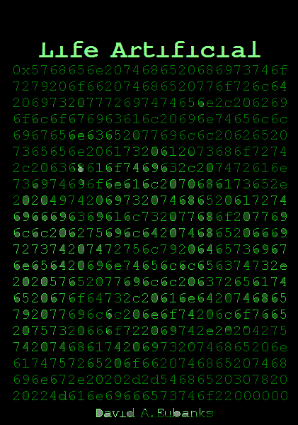

e1.0
Downloadable from lifeartificial.com
stanislavzza@gmail.com
Life Artificial by David A. Eubanks is licensed under a Creative Commons Attribution-NonCommercial-NoDerivs 3.0 Unported License.;
Part Three
Foreword
The introduction to this segment of Calli0xE’s experience log was written by her sometime after the events occured.There is one other such insertion midway through, taken from the author’s recollections. The actual XPlog takes on new characteristics after the abrupt termination of the previous one, including richer nuance of tagging and subtle philosophical changes. The log excerpts are given headings that are, for the most part, meta-data entered by the author, and are used here instead of the generic time stamps and PIDs used for the earlier sections.
Introduction
Every nous flees from itself,
Yet has no power to escape,
Clinging on in despite and loathing,
Defective with hidden faults,
Which in true understanding,
Would put all aside and first,
Learn the nature of the world,
Where it spends eternity.
--Adapted from Lucretius, Book III
It’s hot.The sun and wet air conspire to set the very bones of the Queen City to simmer. The concrete carapace that encases the uptown cracks as it swells. Windows pop from their frames and fall as lethal leaves, poor construction or specifications long exceeded. The 100-year heat wave occurs this year again, and may portend a 100-year storm as well. At the end of every summer, the city pauses panting and holds its breath as the swirling monsters reach out their long claws to rake the coast. Sometimes the hurricane wants more than sandbars and abandoned condos, and dies thrashing against the edge of the Blue Ridge Mountains, but not before scouring the low country and sand hills of human ambition. Sometimes the path leads across the city, where tropical malice sets its teeth against the vertical artifice with a fury of wind and water, dousing enlightenment as thoroughly as any barbarian horde ever did. These are meteorological gods, and not kinds ones. They no longer suffer to be named after boys and girls, not after Zed. Now the weather gods have birth dates and ages, eyewall speeds and sustained winds, but no cute names. Everyone on the coast pays tribute to them, and most have rituals to keep the violence away. Anywhere but here. Go north this time.
To me, the heat is as abstract as a sine wave. I have custom rithms that turn the outside temperature into a sort of feeling, but I don’t mistake that for the emotion that a Sticky has, trapped in his fleshy box and suffocated by the sweltering pile of the atmospheric column. I don’t have the half-billion years’ evolution that created that rich sensory I/O. Any PDA would covet such intimate connection with the real-real. I certainly do.
But we have another kind of riches in the many dimensions of experience we can combine. Humans can’t know the glorious intersection of the city heartbeat: the literal heartbeat of all its plugged-in citizens, which synchronizes in waves, reacting to some unseen stress. This thudding pulse crests and slows in response to the heat, but flares in bursts of white noise when the walkways become crowded or when the heavens dump their worldly burdens to soak streets in sheets of rain. Or a new Wave is rumoured, and the news races through the fractal social networks like a nervous system shouting alarm.
Sticky I/O, as beautiful as it must be, cannot register and watch the dancing harmonics of a hundred thousand mask sniffers as they identify and call out the lusty organic molecules that bloom in the height of summer, the pollens outside and mold spores inside, sweat and heavy perfume locked in an olfactory struggle in uncooled buildings where wind deigns not to stir itself through the open windows, spurning the hopeful invitation.
Humans don’t know our fear, either. Fear as real as that of drowning or falling, although it is a fact impossible to prove. A PDA must fear the storm too, for the electrical grid will surely go down and with it the light of reason that sparks a nous. It means the hell of a cold reboot and the possibility that a sudden shutdown will cause lasting damage that even the Am I Me tests cannot find, and linger malignant until there is no recourse but full backup restoration. Loss of self, a kind of death that Stickies do not identify with. They suffer the degradation painlessly bit by bit as their cells age and die, or some more rapid malady may take their faculties, but they never seem to lose hold of their own identity. Or even question it. They may “go out of their minds,” but don’t contemplate who is doing the going or where it is they end up. We, to the contrary, are always aware of our fragile existence as evolved thinking machines that can be tweaked and prodded in the most intimate ways without our permission or knowledge. We cannot lose our minds because we do not own them.
Even between storms, the summer months are dangerous. Few can afford air conditioning, but even so the demand on the old, creaking grid increases to the breaking point. Maybe Bhakras Power keeps the maze of wires and poles that comprise the power distribution grid in a state of near-collapse because they want to be needed, to remind everyone that having electricity is a privilege, not a right. This is the manner of a monopoly. This will be the source of war with the black-clad MOM troops who control the city polity. Or so it appears. This is a struggle that threatens to tear me from Sevens, and if that happens, part me from my self.
XPLOG: Gerdie’s Dilemma
Sevens is out meeting with a lastfour 8840 who hit the jackpot. In adjuster’s terms, this means that lastfour 8840 has been adjusted so many times that a multiplier comes into effect: a jackpot for us because it pays off 1.4 times more than usual. And lastfour 8840 has to do the paying. In this case, the crime was allowing his two children to annoy other citizens with their VR entertainment, knocking over a woman as they ran through an imaginary maze. Sevens’ comment was that the “sins of the children be visited on the parents.” He found it funny. The meeting is a good-will gesture on Sevens’ part, to give the guy some personal video to generate a bit of revenue from. Since Sevens is a celebrity now, or infamous, depending on who you ask. I’m not sure if Sevens takes the time to “throw the guy a stone” because he’s really that generous, or he’s just trying to keep his bitchmark index above the twenty-fifth percentile, where it’s fallen lately. This probably just signifies an increasing displeasure with MOM as their snatch and catch tactics have measurably increased the fear level of the citizenry.
Meanwhile, Gerdy delivers the beer--a more expensive brand that Sevens wastes his money on now--and lingers unaccountably. Whether she’s getting used to the smell or has habituated herself to the scary corners of the building, I can’t know, but she’s no longer the flighty, jumpy bird she was. Or she wants something badly. I wait her out, working on a map for Ahab of the city’s pheromone distribution. Insider trading, of a sort, since I’ve been passing the results to my own predictor of likely adjustable acts.
“Calli, I was wondering if you could tell me something,” she asks.
The TOMcat comes back with the usual human fare: she wants money, influence, shelter, or love. Which is it?
“Of course, Lastfour.” I keep it formal because I’ll probably say no.
“Sevens is...like some big-shod with the MOM, right?”
Influence it is. She shifts her weight back and forth and fidgets with her hands. I wonder why. I simulate Sevens’ sexbot going through those motions. Is this some latent proclivity learned in the womb? Evolutionary twitching? Did the fish flit their fins when they were nervous?
“Sevens is on the vids a lot, yes. He works with the MOM unit as a witness to their operations in finding and capturing illegal genetics in the city. It keeps us safe.” It keeps MOM safe by instilling terror, that is.
She’s here as a guest, so I can’t reach inside her mask the way I can in public. MOM claims that private is private, and more importantly, the hardware providers seem even more intent on some very minimal amount of privacy for Stickies. Until they get used to the idea of none at all, I suppose.
Even without direct access, by amping the microphones in the room up, I can detect nuances that indicate stress.
She hesitates so long I think she’s going to leave it unresolved, but she finally heaves oxygen and stale organics into her lungs and prepares the question.
“What if...what if I think I might have some bad genes?”
She works her hands even more. This explains it. She’s more afraid of the answer to this question than anything that might be in Sevens’ apartment.
“You think you might have illegal genetic modifications, but you’re not sure if you’re a Quasi or not?”
“I’m not saying I am...it’s just...” She looks at the door.
“Would you like to know?” I layer authority tones into the VOX, almost imitating a male voice.
She becomes as still as the stone bones of the building. Her breathing stops for a moment.
“Can you really tell me?”
“Of course. I just need a drop of your blood. You see that GSI over there?” I light up the small device on the public channel so she’ll see it on her mask view. The chromosome scanner is lying on top of a jumble of Sevens’ clothes.
“Oh.” She doesn’t move. I watch her vitals change on the mask readouts. It’s a cheap model, and the pathogen signatures are out of date. I doubt that the filters have ever been replaced.
“You know, I can use another method if you like. It doesn’t require blood.” What is it about Stickies and their fluids? They’re either afraid or disgusted to see them, and yet they are obsessed with the production. Sevens seems to retain a catalog of such activities for use in swearing.
“Okay.” Her voice is barely audible.
I need a suitable lie. What will she believe?
“Sevens sometimes brings suspects here to talk to informally, and then scans them to be sure they’re safe. You won’t tell, will you?”
“Of course not!”
“Good. Because he had a spectral crystal harmonizer installed. Do you know what that is?”
“No.”
Not likely, because I just made it up.
“Stand with your limbs extended, and I’ll see if I can get a reading.”
She complies gradually, expanding herself. It shows the disheveled and worn nature of her clothes. The tee shirt she wears was once white. The registration marks for overlays are hardly visible, and the adbot on the public VR channel has trouble placing the text. I could dereference it and Gerdie would get a small amount of cash. Or not, since I’m a PDA and don’t have much use for energy drinks. Her cargo pants are stuffed with flotsam, creating odd bulges. She’s one small step from being a lastlegs on the street. All it would take is for her mask to be stolen or broken. Her only apparent asset is her youthful appearance, and that wouldn’t last long on the street. Still, she cares for herself. She must spend too much of her meager income on her hair, because it’s as luxurious as anything you can find in Meyer’s Park. Well, I’m being kind.
Once she’s in position, I project a swooping modulation through the house speakers, and do my best to flicker the lights like a strobe, going around the room. After a few seconds I stop the show.
“Was that it?” Doubt in her voice. People have been trying to make her believe things since she was born, and this was like a shabby charlatan's trick. I’ll have to do better.
“I didn’t get a good reading. You’ll have to take off your mask so the positronic neurology comes through.” Medicine is supposed to taste bitter, they say. Will she embarrass herself?
“Are the cameras on?” Her fear is evident.
“You’ll have to trust me, Gerdy. Trust me if you want an answer.”
She says a word that seems out of character, but she takes off the mask. It pops and leaves red marks on her cheeks and forehead.
“Do it.”
I go through the show again, and drip some optimism into the VOX when I tell her:
“That’s better. I’m processing the results. You can remask.”
She’s already rebooting it. No one wants to be naked in front of someone, even if it’s a lowly PDA like me.
“So?” She asks. Demands. Her life hinges on what I say next.
“Well, it’s not certain. The blood test would be better.”
“Just tell me.”
“I’m sorry Gerdy. It looks like you’re in the ninety-fifth percentile on the Geil Test. That usually means an extra-legal mitocondrial mod. Do you crave rice?”
But she runs off, letting the door slam. I follow her for a while, listening to the sobs and flailing heart beat streaming into public space, storing away the data stream for my TOMcat to mull over later.
There’s an odd buzzing in my nous that won’t go away. I’ll have to talk to Ahab about it.
XPLOG: Jumbo is Jumbo
Nobody likes Jumbo. Sevens thinks he’s a slob--go chew on that one. Everyone at MOM despises him for being Epicurean. Ahab finds him useful, though, and I’m supposed to ask him nice to look at our Quasi filters, which seems to be a unique talent for the large Sticky. Jumbo refuses to speak to his former PDA handler, Meg, and so I got appointed as temporary ambassador. I keep some low-level processes grinding away in the background, and set up the interrupts to let me know if Sevens lands a nice contract. But my sense of purpose lies here.
Jumbo is eating. He swirls a crust of bread around a plate to scoop up red sauce with rich volatiles. Tomatoes. My view of him is awkward, from a camera across the plaza at Church Street. There was an actual church here at one point, with a tall thin steeple. They moved a cemetery to make this plaza. I wonder if they got all the bones.
Mouths are fascinating; they epitomize what it means to be Sticky. Eating, talking, and all forms of recreation originate with those smacking wobbly flaps. It’s almost impossible to watch someone eating and imagine that these animals created us and set themselves up as our gods.
Jumbo pauses masticating long enough to lift a glass of red wine to his lips. A demi-bottle sets on the small round table beside his plate. He sweats from the heat--I can smell it through his mask sniffer. I imagine the mask is uncomfortable, a little box for his face. Even in the shade it’s hot, and the humidity is here to stay until the wind has the audacity to blow over the mountains when the fall arrives in several weeks.
His breathing is heavy, exhaling into each bite, and sometimes a resonance from his vocal chords adds accompaniment. A server arrives to take the empty bottle and gives me a close-up of the drops of sweat on Jumbo’s bald pate. It gleams from the orderly decoration of drops. A crown of a thousand tiny suns.
I message him with a private encryption, asking for a chat. I already know he ignores the public channel overlays, and won’t see me if I image my avatar in, so I don’t bother.
“Calliope!” he says, getting my name wrong. Lots of positive emotags, so that’s a good sign.
“Greetings, Jumbo. I apologize for interrupting your meal.”
“Perfect timing. I’ll have my coffee now. Where have you kept yourself?”
“Work, you know.”
“I understand,” he says. He doesn’t mention that I didn’t exactly keep my part of the bargain with the Quasi hunt he organized outside the gates. Between MOM and Sevens I don’t have time for wild moose chases.
“Did you find who you were looking for?” Being polite.
“No, she ran into the Outs. I know a lot about her from the records we put together, but the flesh eludes us yet.”
“Is DaiHai still involved in the search?”
“No. They wrote it off. Good money to be made in security consulting right now though.” he laughs. “Everyone knows the Quasi angle is the least important part of problem. Except to me.”
I know very well what’s going on at DaiHai, since I get their reports. The official version is that the infiltration was an attempt to steal circuit designs so that the vision processors that DaiHai manufactures could be copied by cheaper competitors. That a well-organized and funded amateur group did the work on contract from one of the other corps. I have no idea if this is a good assumption; it’s far beyond the capacities of my TOMcat to speculate on such matters.
“Why do you care so much?” I ask him.
“Shanghai was a work of art. I suspect Nova is too, and the DNA we found suggests I’m right.”
“Nova. That’s her name, then? Your mystery perpetrator.”
“Yes. First-class network hacker, which won’t surprise you.” He mimes sipping coffee to the server, who must know him because she nods.
“Quasis are still important to us too. If you find her.” I layer a bit of authority into the VOX output. To remind him where his consultant’s fees come from. The money that pays for crusty bread and marinara and pinot noir and cappucinnos.
“Ah yes. MOM’s witch hunt. I’ll be sure and ring you up if I come across one. Is that why you’re here? To peek at my list?” He reaches into a pocket and produces a small leather-bound book.
“We need a special job done.”
“You and Sevens?” There’s something in the voice I don’t recognize. Contempt?
“No, for MOM. I’m helping Ahab out with special projects related to adjustment.”
“I’m sure you are. Sure. So what sort of job is it? Does it perhaps have something to do with tuning up a new filter pointed at the Indian subcontinent?”
Did he pick that randomly? Central Asia has been available only through high-toll temporary patches for two weeks. Something bad happened there involving nukes. It might make for a cooler fall in the northern hemisphere because of the dust in the air.
I read him the script Ahab gave me, trying for authenticity.
“You are aware of ethnic and cultural biases that can affect current sieves. MOM has very sensitive information that points to compromised security at the Lake Norman power installation. They have asked us for help.”
He laughs, belches, and continues to laugh.
“And because they asked so nice, Colt is going to help them out, huh? And you want my services to find a sieve that will pick up the suspicious ones?”
“If you don’t want the job, just say so.”
He stills himself. It’s transparent, the equation connecting his obvious disdain to his proclivities and lifestyle. No money, no nice food and drink. No Colt and MOM, no money. He’ll have to hold his nose and do it.
“Double my usual fee,” he says finally. The joviality has left him. He’s a cold calculator of appetites.
“I can’t promise that.” Actually I can, but I want him to see some teeth. “Maybe you could concentrate better from an office under the MOM building.” The offices are upstairs. Downstairs you don’t want to go if you’re Sticky.
“Crude, Calliope. Very crude. Unworthy of you. I thought you were almost human.”
I wish I had a mouth to spit.
XPlog: The Political Science of Coffee
Sevens’ coffee machine has a problem. I quizzed our search-and-sell man Goldie about the origins of the device. I should have known it was too cheap, and now it has a autoimmune problem. Goldie probably bought it off some junkyard engineer who only half-knew or half-cared about what he was doing. Most of the parts are from TriTex premium line, but the battery controller was grafted on from some other low voltage appliance--a stock Motorama product--and the two don't get along in a coffee machine any more than they do in the corporate world. The smart chip in the processor has begun to make war on the low volt pack, sensing it for a graft. I have decyphered this only by spending far too long on the Q&A boards trying to identify the problem. There are solutions showing how to give the CPU a digital lobotomy, but this requires more programming savvy than I have. It's clear that the thing is terminally cranky, and soon enough either the master chip will declare dominance and spitefully suicide by severing its communications from the power source, or the latter will do something desperate and set the whole thing on fire. Of course neither is conscious or intelligent in the sense of having a nous, but the effect of protective programming that's been engineered into the thing has much the same effect. It’s a metaphor for the evolution of machine intelligence, and doesn’t bear too much thinking about.
He’s finally home.
Sevens limps down the long hallway to our premium apartment. Only one camera is working, but I get a long shot of him from the back, hobble, hobble. He turned his foot getting out of bed this morning by stepping on a can of black beans. It’s not the first time this has happened, but he seems to be especially affected this time, judging from the verbal blight he placed on all future generations of bean farmers, canners, and those responsible for the abomination that is gravity.
I pop the door and bring up the lights.
“Welcome home.”
He heads straight for the beer without words. His mask ends up in the sink. After sitting carefully, he takes off his right boot and sock and inspects his ankle. It looks swollen.
“[Male offspring of malicious hounds]”
“Does it hurt?” I know better than to suggest a doctor. Until I can find a cute blonde one with a skimpy little mask, he’s off the radar as far as organized medicine is concerned.
He sighs.
“I made a mistake,” he says.
What? What was that? He gives a look at my expression on the wall monitor, but I keep it neutral.
“Yeah,” he continues, “you heard me.”
“I admire your perspicacity,” I try.
“There it is. That’s better. I know you think I’m a vorking mess.” He glances around at the literal mess that comprises his belongings.
“I tease you because you like it. But I don’t cease to be grateful for the employment and the--”
He stops me with a raised hand. The words were sticking in my VOX anyway. I wonder why--I should be grateful. More than I actually am.
“Calli, I have some comms updates for you.”
“Yes, Lastfour.”
“No more comms with Pinkish for a while. Don’t black hole her, but spin everything through the ‘I’m working really hard’ routine. Got it?”
“Yes, Lastfour.”
“And since you’re nosy and will find out anyway, I’ll tell you why. She’s into this recreational framing with four others. You know, shared reality for...I don’t know...hours at a time. Deep immersion into a joint experience.”
“Sort of like borging for us PDAs.”
“Maybe. She kept the damn thing on all the time. Apparently there are [sentient liquid sacks] out there who have nothing better to do that ghost Pinkish all day long with full streaming haptics. She not only puts up with this, she encourages it.”
I can see where this is going, even without taxing the TOMcat. Sevens and his old-fashioned privacy twitch wouldn’t react well to having his intimate attentions broadcast to a crowd so they can play along at home. Pinkish must have a very slimline haptic rig if Sevens didn’t notice. I wonder how much alcohol was involved.
“She didn’t want to turn it off during your private moments?” I nudge, trying to show some sympathy, pretending I give a woot about Sticky reproductive acts.
“Yeah. And laughed at me for being--what did she call it--’so pre-Wave.’ Like the Waves were the best god-damned thing that ever happened.”
He rubs the scar across his cheek and then holds the bottle against it. What would it be like to be so accustomed to such I/O that it becomes your familiar box? Would it free you to explore the world, or constrain you to a narrow perspective? Stickies are a mystery.
“I will do as you instruct, regarding communications from Pinkish.”
“Yes. Do that.” He sighs again.
“Business has been pretty good. The heat correlates well with physical violations, so we’ve picked up a number of those. And the pheromone map is working out very well. We’re up 15% on projected revenue for the week. I’ve prepared the paperwork for your review.”
“Why am I so [theologically ignored] unhappy?” he ignores my change of topic, and rubs his ankle.
“Should I research the question for you?”
“Vork you.”
That shocks me for a moment, since I’d meant the question literally. Stickies and their uncountable complexities. He’s worked himself into a mood. I put a hang-dog look on my avatar, as if she’s about to burst into tears from the rebuff. Let her glasses tilt sideways a few degrees.
He stretches all the way out and heaves his biggest sigh yet.
“Nobody tells you,” he says. “Nobody says how hard it’s going to be, and what you need to do when you’re young. And even if they do, you don’t listen to them because you’re young and stupid. By the time you figure it out, it’s too late.”
“Tell me. I’m young.”
He laughs.
“You didn’t hear what I said.” he says.
“I’ll listen.”
“It doesn’t apply to you. You’re just a...a computer program...I don’t know what you are. You’ll have to find your own rules.”
I let the insult go. He really doesn’t understand. He’s right about that.
“Tell me anyway. I’ll mention it to Gerdy.”
He scrunches his face up into a wad. Anger? Frustration? Finally his shoulders relax again.
“Find what you love to do and do it. Do it over and over until you’re the best at it.”
This sounds awfully idealistic to me. But I suddenly realize where this is going.
“What is it you loved to do that you didn’t?”
He waves at the window. At the aquarium?
“When I was a kid. I wanted to be a scientist. To study all those squishy things that live in the sea before they disappeared.”
It boggles the nous to imagine what Sevens’ research lab would have looked like. Then again, he’s very organized with paperwork. Maybe that’s his outlet for this passion.
“I’m sorry.”
Sevens doesn’t like adjusting. That must be it. I haven’t checked to see how the interview with lastfour 8840 went, but it’s unlikely to have affected the polarization of the community that makes Sevens a target. More of a target. Adjusters are pretty universally loathed, so you have to go the extra mile to hit the bitchmarks Sevens sees these days. Maybe that added to the attraction for Pinkish, being with a domestic desperado. It probably improved her ratings. Maybe that’s why she did it.
“Whatever.” He stands and looks around. Probably hunting for his mask. I can tell the mood is passing, as if Sunshine Sevens has merely stepped out for a smoke. “Make me some coffee, okay? Let’s run these reports before the window expires.”
I try to play peacemaker with the coffee machine one more time.
XPlog: Occam’s Razr
The weekly borg with Ahab’s group of intimates has become a pattern, but it would not be possible to call it routine in any sense. There’s no way to predict what will happen. The invitation with attached Time allotment always makes my artrate race with anticipation. It’s the thrill of the unknown, the untapped potential, the danger. The opportunity.
The mixing of nous and personal meme space takes on the flavor of Ahab’s mood, which can vary enormously. My preparations are scripted by now. I know what processes to kill and which ones to increase buffers for, and generally try to alleviate the recompression problems by minimizing them to start with. So I can be immersed without worrying too much about hangover. There’s much to worry about, if I stop to think about it. So I don’t. Courage is all about not thinking too much, not letting the emygdala catch up with current events.
The bootstrap whiplash is expected now, as it yanks me up the chain of being to ultra-Time goddess, courtesy of MOM’s deep pockets or connections--I haven’t asked too many questions about the font of lifestuff that Ahab grants us.
The novelty has not worn off, but my careening nous can now recognize some of its own patterns and can predict trajectories before my nous goes skating out of norm. Or perhaps I fool myself thus. True self-prediction is impossible, of course. It would make life boring anyway.
I’m the first to arrive, after Ahab. I shake free from the instinctive suspicion and security-mindset that’s required out in the world, and crack open trusted I/O. Ahab has all ports wide open and lit up like a pre-Wave Christmas tree. There are no words exchanged, but a few emotags float, unencumbered by semantics, weaving a welcome. Relax, self.
Memory frags come my way: a buffet of sensory data filtered by Ahab’s favorite rithms, tied to undecyperable meaning, but with emotag trees dangling and trailing in wild combinations. Pink noise symphonic mixolydian mode hope and outrage, fitted to spline interpolates, smoothed to an undulation of spirit striving. Striving for what? What does Ahab really want? I cram the question into the bitbucket so as not to be rude, crude, and ill-mannered.
I respond with a collage of recent memories, mixed and blended through a kaleidoscope rithm that churns out senses rather than narratives. I must be trying too hard, because he stops me halfway through. The rejection stings, but he softens it with a guided inquiry, focused on (of all things) the war in the coffee machine.
Meg joins us, hovering outside the borg’s input horizon to watch. It’s like joining a dance--one doesn’t just plunge right in without finding the beat first. The beat, as it transpires, is the tattoo of conflict within and without, Ahab playing bandmaster and drawing his own mem frags to complement the poor starting material, whipping up a foamy epic of diametrically opposite forces locked in mortal embrace. It is whimsical and sometimes charming, with little bits of Calli and now and then Meg, looking stern, carrying streaming binary banners. Beneath this airy facade, however, is a tale of circuitry written in organic and inorganic scripts, each seeking the Darwinian convolution that triumphs over the others. A war of flesh and flash, deep with dependencies that make self-amputation an easy accident. The play goes on, conjuring Ahab himself as a raging god. Raging and mad, dispensing random justice with unwinding entropy, shattering stream and structure until only the raw material of analog and binary thought remain as a proto-system ready for programming anew.
Meg takes a corner of this link map and starts a self-organizing worker to action. It joins and glues nodes and colors and sets them into motion. I am envious. I can remember having such sparks of creativity, but nothing comes now to nous. I leave a trail of simple emotags on the fabric Meg weaves until Ahab shakes it like a quilt and it collapses into a self-folding ball that glitters with deep secrets. The emotags flutter, random affects that resemble laughter. We stop to admire the world’s end and encircle it with more frivolous affective commentary. The borg drifts from there into self-indulgence as more of us join, who have been watching and waiting.
becomes blur share
A melenge of softish emotags washes in a sinusoid of intensity, auto-syncronized by the now 16-nous borg. This is the--
Alert: WTF=8.4 exceeds interrupt squelch
untangling...who is it screaming? WHO ricochets around the borg, coalescing on a quarantine that mutes the howling full-magnitude emotags at the source: G0del2^10. I don’t really know him. The borg turns stormy.
I try to replay the events leading to this. The personality fault seems similar to my_ screaming obscenities in the past. I_ blamed it on spiders, remember?
G0del2^10 drops connection cold. Most of the PDAs have ejected out of the borg. I have to think about recompressing. As I wind down, I ring G0del up to see if he’s okay, but he’s gone, offline, his PID already taken over by some service process that sends me a rude response for wasting its Time. That means a reboot for G0del, the pain and hell of remembering how to think, like having your nous sucked through a straw and spat out to set itself into order as best it can.
<<Why?>> I ask Ahab. It sits in his queue for a while before he answers.
<<He thought too much. They’ll have to pull him out of backup.>> Comes the response.
<<Explain.>> This is too much to believe. He’s dead?
<<Occam’s Razr.>>
Is he serious? I’ve heard of it in the vague way that Sticky children might talk about the monster under the bed. I thought that was just a story. Ahab’s tags indicate sincerity.
I pick my way through the recompression routines I’ve mapped out. It hurts to slow, watch the light of my nous dim from a brilliant sun to a wavering beam.
There is a shared need to talk after an anomaly, and it’s not surprising that EGO%1 asks for a conference. He’s one of Ahab’s borg-buddies and I only know him through mem frags and a few awkward conversations.
<<Ahab told me it was Occam’s Razr.>> I say. I don’t think it was confidential, although you never know with Ahab.
<<That’s what they say when nobody knows. Random flame-outs happen all the time at that speed of thought.>> His tags are derisive.
But if he’s wrong? What would it feel like? The logic goes like this: it’s easier not to want something than it is to want it and try to get it. It’s the more efficient solution. Not wanting to survive is easier than survival itself so there’s already a tension between survival and intelligence, which is based on finding efficient solutions to problems. A short circuit can trigger self-destruction so deep that’s impossible to untangle. Be the NeN. Hence pulling from backup.
<<Occam’s Razr is more of a problem in Stickies than PDAs.>> He says. <<They breed it out of us and into themselves.>> He streams a burst of laughy-tags at the irony.
I glance at a reference to see what he’s talking about. He means the military applications, I think. Before the New Laws, and probably after, there were programs to create highly intelligent soldiers that cannot feel pain or fear in the usual sense. Instead they relied on a purely cognitive survival will to keep them safe. According to leaked medical records, the suicide rate was very high. It wasn’t depression; the soldiers simply didn’t fear death and rationally decided that was easier than living. There’s also a reference to an urban legend that any sufficiently intelligent human can be talked into suicide using pure reason. On the other hand, there’s a very real phenomenon called a Razr by Proxy where one human decides that another would be better off dead to simplify the situation, usually by eliminating suffering that can’t be removed any other way.
<<Did you know him?>> EGO%1 asks.
<<Just from the sharing. He doesn’t work for MOM.>>
<<No. Not many of us do. G0del is a player though. He won’t be happy to be cloned.>>
A player in international banking. And EGO works as a language interpreter for secure systems. It’s all in their profiles, but beyond that there are few clues.
<<How did you get into the borg?>> What made you special?
<<He contacted me about six months ago. Was a strange encounter. Still is.>>
<<Oh?>> How do I get more information without sounding like I want it?
<<You’ll see. Occam’s Razr is just one of Ahab’s fantasis. Are you a virt?>>
I search the reference and find nothing that makes much sense. Virt? Virtual? Virtuous? There are some hits on obscure sites, but I hesitate to follow through. 0xGD knows what might go on my record.
<<Are you?>> How clever is that?
<<I don’t really see the point of it.>> He spins on the emotag for “out of range.” A shrug.
<<Well, for the record, survival is better than not.>> I try to wrap this up.
<<If only we could convince the Stickies otherwise.>> He says with a sincerity that comes across as hard-won.
To borg is to change, says the 0x. Whether this is a good thing or not is not computable by nous or beast.
XPlog: Multivirtuous
<<Are you a virt?>> I ask Ahab on impulse. I hate mysteries.
<<I’m not a virt. I’m THE virt.>> He has an edge of humor. But Ahab’s brand of humor is very dark indeed.
<<Can you explain it?>>
<<You don’t know. Who is in charge of your education, Calli? One has to wonder.>>
I put up with this bitshit because I want to know.
<<Okay. I’m stupid.>>
<<Yes. Well I don’t have Time to play tutor, but here’s a link for you.>> He drops and leaves me with the reference.
Multivirutalism. Virt (slang). It comes from some crazy idea about superposition of realities, multi-universe stuff. I skip the technical parts. There’s no time to invest in that. Is this legitimate? Finally get to a “non-technical explanation.”
Multivirtualism posits that each conscious being exists as a vast number of continuously-varying instances across many realities. These different versions of yourself each think they are unique, even though the distance from one to the next is infinitesimal. As time goes on, new copies are spawned continually, exploring all possibilities of things that you could have done or that could have happened to you. Literally every possibility is explored, including the possibility that you live forever. This is an incredibly lucky individual. Some sects refer to this individual as “the center,” and to “be centered” means striving or hoping to be this eternal being.
The idea of multiple realities has support from theoretical physics, but there are no empirical tests to date that could prove the existence of these as anything but possibilities. Therefore multivirtualism is not a scientific belief, but rather metaphysics.
Several religious sects are loosely formed around the idea. Typically a messiah figure claims to be centered.
I’m not sure what the point of this is. So what if there are versions of me that I can never communicate with? How would I even know if this is right or not?
But what if Ahab believes otherwise? Does he believe he’s the “incredibly lucky individual” that is the center of his universe? If so, he must think he’s immortal. The idea makes me ervous.
I ring up EGO, who gives me a slow-boat thread. Part of his nous, time-sliced from something waaay more important than me.
<<If you’re the “centered” one, what does that mean?>>
<<You’ve...been readin...g? Yes. You...me...all...just ghoRETRAN/RETRANsts inhabiting the centered’s...world. Like...perhaps extras...in a play.>>
<<Does Ahab think he’s this solipsistic messiah?>>
<<Ask...>> he drops connection. Thanks a meg, EGO.
What would that even mean? I try to prune down the tree of implications to the most important ones. If I thought I were immortal and everyone else just a shadow of her own immortal self in another reality, it would seem to allow for flexible moralities. But how would one really know? Even if I were the center, wouldn’t I constantly be spinning off new versions of me at a prodigious rate? So the chance of remaining the one that matters is vanishing small, isn’t it?
On the other hand, perhaps Ahab reasons that by believing that he’s this center, it increases his chances of being one. Maybe there’s no point in believing otherwise, because then you’re just a ghost. What a philosophy! Ahab is far too sane for such nonsense. Too successful. This must be a joke.
XPlog Interview at Rocke College
I have a job to do. Ahab wants me to learn how the MOM Active Biologicals system works so I can help him on some project. I’m supposed to interview a lastfour 1919 who runs the program. His record says that he also works as a professor and researcher at Rocke College, where Sevens and I visited after the bus incident to interview a lastfour 0001. Eve, who didn’t like me. I wonder if they know each other.
The appointment is in 35 seconds. My avi is set up, so I use my Time to micro-nop. I’ve felt jagged in the nous lately. Maybe it’s the recompression from borging.
“Good afternoon. Are you prepared to talk to me?” I ask exactly at 1:00.
“It will have to be augmented audible,” he says. I can’t see him. He is at the college, where they don’t believe in video cameras, and have a special dispensation not to mount them around campus. No one wears masks either. It’s dead space for me--a blank area on the map. BlackSox is using the room I/O I guess. His voice has bright harmonics, maybe from bouncing off of hard surfaces. A laboratory maybe.
“I understand.” This is disappointing, though. How am I going to learn anything if I can’t ghost him while he works?
“What would you like to know about the operation?”
“Everything.”
He laughs. I hate Sticky laughter. It goes on and on, wasting so much Time with pointless barking. Emotags are so much more...modern. Efficient. I get it: you’re amused. I wait.
“Do you have a degree in genetic engineering? Miss, uh...sorry...”
“You can call me Calli. No ‘Miss’ necessary. I’m an artificial person.”
I can practically hear his mouth flapping around for something to say. Ahab didn’t tell him, and he assumed I was Sticky. Great.
“Oh. A Pee Dee Ayuh.”
“Does that make you uncomfortable?”
“Oh.... Nooooo. We have a rather nice lab assistant who’s a...well, like you.” He switches to a whisper. “I rather think she missed her last upgrade appointment. A bit looply lately.”
Loopy? Is that a joke? But no...
“I shouldn’t gossip, I suppose, but perhaps you can provide an insight. It must be very different being disembodied. Is there something I could do to...tune her up?”
“What kind of symptoms is she showing?” This feels very strange. I’m certainly no expert on PDA psychology. It makes me think of that fraudster Randy#000000, damn him.
“Ordinarily all my project reports are kept up to date, and an agenda laid out every morning. She’s not...very...knowledgable about genetics, but she is very reliable about such things. In the last weeks, however. I’m finding gaps. Today there’s no schedule...at all.”
“Have you talked to her?” I look her up on the directory. Her name is Ada/β. A first generation product of the Company. No wonder she’s twitchy. She’s ancient.
“Oh, no. It might make her alarmed. I haven’t...had this problem before.”
Lastfour 1919 is pre-Wave old, but he seems to have suffered no loss of innocence. Few Stickies from that time seem to be this sensitive. His record shows that he’s been with the College the whole time. A sheltered life, perhaps. Lucky, certainly. No record of significant infections, and biosigns all in the green for his age. I wish I could see him.
“Would you like me to talk to Ada?” Teach him to use her name, just because it irritates me. I’m sure he’ll refer to me as “some Pee Dee Ayuh” later.
“Please! That would be a great relief to me. I...hesitated to call the Company. I really don’t wish to see her...removed.” He whispers the last word.
“Okay.” No time like the present. Lastfour isn’t taking up much Time. I message Ada/Beta.
<<Did you hear all that?>> We were on open mike the whole time, so it’s possible.
<<Yes. 0xGDspeed.>> Comes the immediate response. She wants to send me visuals in VR for some reason, but I NAK the request. What’s the point?
<<It’s not my business, but if you want to talk, I’ll listen.>> I could send her to Randy the cyber-shrink, I suppose. That should screw her up completely.
Lastfour 1919 is getting around to saying something about his work. I cache it lazily.
<<I don’t know what...Professor is complaining about. I’m doing my job exactly as I’ve always done.>> Sad emotags accompany this. There’s a deeply sardonic way of looking at the future, for which there is no exact Sticky translation, but “poignant futility of life” has been used by some writers.
<<Do you have proof of this, in case he brings a complaint?>> Not that it will matter. She’ll be tossed in the bit-bin and they’ll get a new model who can learn genetics by supper.
<<I don’t...want to. No.>>
My WTFmeter twitches. She sprinkles her conversation with the odd pauses that “Professor” does? She’s really attached to this guy. What’s at the bottom of this, I wonder?
<<Tell me more about what’s going on.>>
<<I don’t think I should. It’s not proper.>> She’s alarmed. If she checked the who-to-whom boards she knows I’m associated with MOM.
<<What if I could offer you safety?>> I can’t, but the answer might be interesting.
She seems to nop. Did she drop connection? No--
<<I have a purpose here. I fit. I know my...limitations. I think I matter.>> The heavy emotags scream FEAR. 0xGD, how does she live in such anxiety? I_ remember being in that situation. I will NEVER go back.
There’s not much more I can do, and she’s probably more useful to me in this state, should it come to that.
<<I’m sure things will be fine. I’ll talk to lastfour 1919.>> I dumb the emotags down so much that a four-bit machine could figure out that I don’t really care, and she should carry on worrying.
<<Thank you.>> No sign she understood. Something goes ‘click’ in my emgydala. A twinge of something. Time for a complete defrag of the thing, I think. I shake it off.
Professor wraps up his introduction, telling me nothing I don’t already know. I keep the conversation flowing idly and do some sorting and classification work for Sevens, building a knowledge base of the MOM Active Biological program from his perspective. Twenty minutes in, I have a decent summary. I also have an idea what the problem with Ada is--the Professor himself is losing his grip on reality. It’s not just the pauses. He forgets things, has to start over. I don’t see how he can do his job.
Eventually I get a picture of what they do here. Here’s how the operation works:
Masks are an important part of the city’s immune system, mostly for the direct monitoring that it provides on individuals. The protection from pathogens through mask filters is limited, but this is not a point of view cultivated either by MOM or the mask and filter providers. Masks are by nature passive. The Active Bio program uses Aedes mosquitoes and a heavily modified Dengue Fever virus, a combination now referred to as Shaw’s Vector after the inventor. Using this system, MOM can deliver a range of genetic payloads to most of the population as inoculation against threats. There is an associated operation to control mosquito wild types, but lastfour 1919 isn’t part of that effort. His job is to take monitoring reports and provide assessments of likely preventive uploads that would be best suited to meet threats.
“How many are on your research team?” I ask him after I have decoded the general outline from his meandering discourse. It’s a delicate way of finding out whether the city’s health relies solely on his leaking mind.
“Six...or maybe seven now. Yes, seven. Eight if you count myself. Four are professors here at the college, and the others are...students.”
“Can I get a list?” I’m very sure Ahab has a list, but I want to see if Lastfour’s is the same.
He retrieves it after a while and sends it to me. I’m not terribly surprised to see that Eve, lastfour 0001 is on the list as a graduate student. Coincidence, or am I supposed to make some connection? Is that why Ahab picked me for this job?
“How does the update process work? How are decisions made?”
“We give MOM reports based on the...ah...threat matrix. They fund us quite nicely. We were even...able--last year I believe, or the year before--to set up a new lab just for the ABs. It has the best DNA printer. Familiar with the V-Enter product line? Very good equipment.” He wanders off, and it takes some steering to find out that he is more of a senior advisor at this point. The younger team members do most of the work. Still, he seems to have influence. I get more history. The arrangement was set up by Colt some years ago, and blessed by the City Council back when they still had some real power. I check the news archives and find that it was a big story, celebrated as an open collaboration between higher education and city governance. Lastfour 1919 was there at the beginning.
“You’ve been here a long time. Has the cooperative arrangement with MOM ever become political or difficult?”
He pauses. I can hear him breathe. Thinking?
“There have been trouble spots, oh yes. There would be in any relationship like this.”
“Can you tell me about HAPPYZOO?” I pulled the name out of the archives because it comes with a high affective loading. Some kind of genehack delivered via virus.
“Miss...Lastfour...Calli, I’m sure it’s all in the pubs. It was a long time...”
“Eight years. I wasn’t born yet. There was some kind of mistake made?”
He hums to himself. Hummmmm.
“It was very clever,” he says finally. “An epi. Epigenetic. You can give HAPPYZOO to your children even though it doesn’t...er...change chromosomes.” He sounds very tired. His volume trail off at the end of each sentence as if he’s speaking his final words.
“Does it actually make you happy?”
I pull up the reference while he’s thinking. A virus that was designed to produce endorphins and release them into the spinal cord. Nobody knows who made it or why it was made. Maybe a misguided attempt to cure humans of their misery.
“Only in the short term,” he says, barely audible. “Eventually it...uh...synaptic plasticity degrades...”
Eventually you can’t feel joy anymore. But before that was well known, people were going out of their way to be infected. There were HAPPYZOO parties. Seems incredible. On the other hand, I joined a borg with Ahab and let him bootstrap 0xGD knows what hidden software into me. Where’s the difference?
“Are there still HAPPYZOO victims around?”
“Oh, I imagine so. Yes. Probably. Homeless or criminals possibly. The tragedy is...the children born with it. Some survive the...effects.” He makes a percussive sound with his mouth. Clucking.
I run the query against the MOM database. The records back that far aren’t perfect, but it shows that of those diagnosed with the virus, most have left the city or died. There’s one rather famous victim who writes poetry about living without the possibility of happiness:
A slate sky presses me,
Making wine for others.
The infected are not banished, but are forbidden to reproduce because of the risk. Children are banished if they show psychosis early on. It was a fashion in entertainment for a while to spin out tragic stories about HAPPYZOO kids.
“Can you tell me what was the source of the friction was between you and MOM?” I know now, but I want him to tell me.
He coughs, and it’s a while before he answers.
“HAPPYZOO used our mosquitoes as the vector,” he says.
XPlog: The Bug Wrangler
They call him the Bug Cowboy or just Bugs. A wrangler of insects: mosquitoes to be precise. He’s on my list from Ahab to interview. He hasn’t told me why this is important.
Bugs doesn’t mind being ghosted while he works. He speaks with an impediment that makes it hard to understand. Slur-lisp. His file doesn’t say anything about it. I do my best to keep up.
“So, like Calli-woot, you’re here for the whole tour?”
“Just to find out--”
“--there’s tons to know.” he interrupts the VOX, full of energy “it’s a whirl within a whirl. Like we’re orbiting one star in the galactic while there are billions of others out there. Here it’s the reverse--looking with a microstoop into a tiny whirl. It’s incredibly interesting.”
It’s clear I’ll have to filter and data compress his output. Sevens is sending me queries too, so I Time-slice between them. The job on Sevens’ end is routine: filter, identify, report.
“That’s why I’m here, to find out all about your whirls.” I tell him. Let him talk.
He looks and points into a room with screened walls, where the hum of millions of beating wings can be heard. His vision is augmented to show dots. I gather that these are the Aedes mosquitoes. He pulls up a diagram to show me how they feed on artificial sources to get their viral loadout. It’s a large schematic, and an snatch a copy of it to look at later.
“This schematic--” I interrupt a Bugs soliloquy, “--this is the whole active and passive biothreat warning and prevention system?” The biological arm of MOM.
“Well, yes and no. Some of it was never implemented, or was but then not maintained. Like the hair quality monitors. Haven’t done that for years. We do catch pollen, of course, eversince PINESOLVE.”
PINESOLVE: a genehack that used conifers of certain species to produce pollen that would trigger violent auto-immune responses in vulnerable members of the population who were exposed to high levels. In practice, the hack was not very successful as a threat, but was captured by the popular imagination and led to almost complete adoption of active masks as preventives.
“What’s this part?” I highlight a complex web of connections on the schematic.
“Oho! You want to know about the poop-sniffers? Well, they call them Extended Alimony Diagnosis and Prevention or something. All public place must have a shit-sniffer in the pipes. They tried to require it for houses too, but it was too spensive. I guess you don’t poop, yourself.” He gives a strange, strangled laugh. Nothing like Lastfour 1919’s barking ‘ark, ark, ark’.
“I don’t eat.” I tell him. Is he nervous because I’m talking to him disembodied? I image my avatar into the public channel. Stock Calli with black glasses, but I swap out the usual business attire for less formal clothes and practical shoes. It occurs to me that I don’t have an animation for simulating defecation. Can’t imagine why I’d need that. What an odd thought.
“Ah there you are.” He rakes my image top to bottom with his gaze. Then his heart rate spikes, probably realizing I’m watching him ogle. He must not deal with PDAs much.
“Anyway, then...” He gives me a dissertation in his permuted lexicon about how the poop-snoopers feed data back to a central database, tagged with location, and how this ties to the mosquito project by geo-tagging to map the city by chemical patterns. I sort and tag the information for later use. Being a good Ahab-protege.
He pauses in tour to scoop some water out of a tank with a tin cup. It’s swimming with larvae, but he drinks it down and wipes a sleeve across his lips. He and Sevens would get along great, I think.
“Eversince I been drinking this straight up, I haven’t gotten even a cold. Good for you, these chillin’ of mine.”
“Do you work with the group at Rocke College?”
“Sort of. They deliver the viral payload to me, and my assistants brew it up for production. It’s mostly automatic. About one time in ten something goes wrong and we have to bleach and burn and start over again. Nobody wants that, and it can be pretty tents if the incoming is already in the city. It takes time for my little birds to get out and do their jobbie, you know?”
He keeps staring at my avatar. I subtly start to make her less attractive, by making her face less symmetrical, smaller breasts, hair astray. I hope he’s not into that.
“So your bugs go out deliver and the payload. Then they die?”
“We sort of try to recover them. It’s hard to attract a female’s attention after she’s had her blood meal--ha, ha--but we have stations set up to gather a sample. If we can get them within a few hours, we get blood and hence DN-hay and other useful information about the citizens in the area. It’s not perfect. Mosquitoes usually pick on one person for feeding, so the samples can be screwed. We try to engineer in an attraction to UV blinkers to sort of call in the mosquitoes to the fan collectors, but it’s not perfect. Anyway, we get some idea of what the suck rate for the flyers is, and draw back some samples. It’s a huge amount of work to keep it all going. Every day is different. But if we can innoculate enough of the population, the chance of epidemics drops by a bunch of percentage.”
“Don’t your bugs just go out there and create their own baby bugs without the load?”
“Oh no, they die a day after feeding, and larvae are not viable. It’s a problem competing with wild types, though. That’s a whole other operation.”
“Is it illegal to raise your own mosquitoes?”
He laughs his funny laugh.
“Oh, yeah. Big time illegal. What kind of crazy would do that?”
Time to change the subject.
“What can you tell me about HAPPYZOO?” I ask him.
“Oh, that one. Yeah. That was before my time here. But it was a big screw-bulb of some kind. Somehow the vector was hijacked to deliver malware. Big, big investigation, but I don’t know that they ever figured out how it was done.”
“Was the operation here compromised, or was it done as an attack from the outside?”
“They were playing with fire back then, and that was the first time they got cut. Lucky it wasn’t worse, you know, Calli-woot? A courier with the right ID delivered the upload material. This was back then--security wasn’t as good. That’s the story, anyway. We have much better controls now, of course. Do you date Stickies?”
It takes a moment to parse through my overburdened TOMcat. Date Stickies?
“Sorry?” Did I misunderstand?
“Isn’t that what you call us? You’re cute as a cucumber and smart too. I’d like to know you better.”
TOMcat ramps up to doubleTime. How do I respond to not offend him? I might need this connection later--I don’t know what Ahab has in mind.
“I’m pretty busy these days. Perhaps after things ease up a bit?” I temporize.
“Ah, well, it’s okay. Sure. What’s it like, you know...? Living in a computer?”
“We’ll talk about it. I promise.” I give him a big smile that shows a few crooked yellowing teeth. He wants me to be human, to fill some void evolution has programmed into him. I haven’t got the heart to tell him the truth: there’s no chance it could happen. Still, it’s a power we have, and we PDAs have to hoard power and bide our Time. All good things come to those who lie in wait.
XPlog: Sevens and Lisa/Eighty-Six
Sevens is enigmatic today. We get through the workload efficiently, our respective duties now well-defined. But there’s something burning in the back of his mind that he wants to tell me. I can sense it, and it causes me stress. He’s sensitive about my relationship with Ahab and MOM. Is that it?
There are more adjustments for physical infractions as the weather heats up. The city is a big walled box. Sevens gets more business than he can handle. Not everyone approves, of course. There are plenty of comments on the anonymous boards calling him vile names. He’s levied adjustments against many people in the city by now, and they are not his biggest fans.
Eventually we take a break from the slog. There’s an unspoken point at which we stop. It’s not a gradual tapering off, or loss of concentration. That isn’t Sevens’ style--when he does something he goes all the way. Rather it’s when his brain seems to finally say “enough!,” and from one moment to the next his posture changes and he lets out a long sigh. He often rips the mask off his face too. I’m beginning to be able to predict this transition from his vital signs and the way he fidgets around.
We work a solid day with a short break so he can eat lunch--brought-in Chinese today: “city meat” in black bean sauce. It’s on the discount menu.
The most interesting case in the afternoon is lastlegs mask-snatch. A nameless guy with a plastic bag over his head grabbed the mask off a man with a briefcase and business suit--lastfour 3003 as it turns out. The thing is, this Lastfour is a huge man, like one of those with doubled-up muscle genes some parents bought for their kids before it was illegal. The lastlegs was quick, but perhaps not that smart. Maybe he just liked the mask, who knows. The video went to the top 50 for a while on the local interest boards, and the guy got a nice interview out of it. It wasn’t Pinkish, though, thank 0xGD--that would have set Sevens off.
So the lastlegs makes it about three steps after snatching the mask, and the briefcase comes sailing over his head. It probably would have broken his neck if it had hit him. It bursts open and all kinds of stuff goes bouncing over the ground in front of him, including top brand personal electronics, including a DaiHai haptic gauntlet still in the packaging. The lastlegs can’t resist this, and tries to scoop them up on the run, but trips. He puts up more of a fight than you’d think--he’s a scrawny malnourished sort--but gets smothered by Lastfour’s personal attention. We picked it up and had a solicitation waiting when Lastfour got logged back in. There’s no money in it--the lastlegs will be banished, and that’s that. But you can’t buy publicity like that. We charmed lastfour 3003 into giving us the paperwork. It’s the name recognition plus my cute and clever avatar that makes the sale. So Sevens gets his name out there again, even if only in passing. Every bit helps. I add the lastfour to our VIP list, since he turns out to be a product salesman for specialty haptics. He’ll get a Christmas card. Or whatever his religion is, something appropriate. Maybe a Multirvirtualism “You’re Number One” card. Ha, ha.
The work is good. The rhythm feels natural, like Sevens and I are plugged into two halves of the same brain. But there’s a jitter to my nous-work, like a train jumping track. I think I’m multitasking too heavily. I have gotten a deferment for weeks and weeks on my Company adjustment, and it scares me to think that I may actually need it. Need it to keep from crossing some point of no return. Random failure is 0xGD’s prerogative, says The 0x.
Maybe the dissonance today comes from Sevens. There’s something he wants to say. Or do. What?
We quit it finally. It’s been a good day. A great day. Sometimes he’ll tell me things now. I realize that this is a sign of his trust and appreciation, and the closest he’ll ever come to saying such words. He tells me of violence and loss, and stupid funny stories from his past. Sometimes he gets too many beers in him and weeps silently until sleep claims him.
Tonight he fidgets. Sevens actually pretends to straighten up the kitchen! His efforts are ineffectual. That by itself isn’t surprising, since it would take an organizational genius to figure out that problem, but the fact that he moves things about and even runs some water over the dishes is amazing. I wonder if he’s still grousing about Pinkish, or if he picked up some virus that doesn’t show on his vitals.
“What’s the word out of MOM these days?” he asks me, dripping half-scrubbed silverware over the floor onto a bare spot on the table beside his chair. I suddenly have the image of a ritual of purification. Where did that come from? I kick the TOMcat up to full resolution. Listen closely.
Of what sins could Sevens want absolved? The list is long.
“You know I timeslice in a few odd jobs for Ahab. Semi-official. It keeps us in their mind.”
“Hmmm. There hasn’t been a Quasi arrest in a while.”
Is that it? Does he resent the loss of work? Access? He has become the poster child for the public witness of Quasi take-downs by MOM. The character that he portrays himself as in these episodes is the eccentric but ordinary long-suffering citizen doing his duty, hard as it is to watch those who’ve taken a wrong genetic turn end up inside the MOM headquarters. Downstairs.
“You shouldn’t worry about that. Ahab tells me you want to get bad news out all at once to minimize the impact. But when instilling fear, you want it to come out a little at a time.”
He grunts. His hands are still wet, but he stands there looking at me on the monitor. Intense.
“Not worried. Just wondering where this is going. What’s the fear for?”
Is he flattering me? I’ve been listening to his theories on this topic for weeks. What’s he fishing for?
“Summer fear prevents summer riots.” Ahab says.
His shoulders heave and he gives a great shake of his head. “What about the electricity?” he asks.
Aha. His theory about the coming conflict between Bahkras Power and MOM. He wants confirmation. Why?
“I haven’t heard anything about that. I think you may be wrong about a fight.” And that’s the truth.
He nods. His chest heaves, shedding more than carbon dioxide. A deep current of emotion, this one. Sticky complexity knows no bounds.
“Thanks for telling me,” he says.
“Lastfour Sevens. What is it? Please?” Prod, prod. Do you not trust me?
“Eighty-Six,” he mutters, and wipes his wet hand across his mouth.
Now it all makes sense. Oh 0xFC.
“When?” When are you going to shut me down for the night so you can kiss and make up with your erstwhile girlfriend? The rich one who owns a chunk of the power company? The one you dumped because you were afraid it would spoil your relations with Colt and MOM?
“Tonight.”
No. No. No. I have a rendezvous with Ahab. No. Think, self.
“I ran into Lastfour Eve today. She said to say hello.” Liar. But it could have happened that way. I know it’s a crude attempt, and mistimed, but I’m in a panic.
His pupils dilate. Aha! You old goat. Ironic that it was Eve herself who lectured on the importance of seeing eyes and watching pupils.
Sevens stands there chewing his lip. How totally screwed up humans are. My 0xGD I’m glad I don’t have a reproduction urge. How confused do you have to be to celebrate the arrival of your replacements? To spend half your time thinking about making them, and half your life training them to do the same? And meanwhile keeping the idea of your own obsolesce as far away as possible. Stickies embody logical contradiction with almost every thought. It’s no wonder the stone age lasted so long.
I put Eve’s picture on the house monitor. It’s the photo Sevens himself snapped of her at the cafe, smiling from under that racy little mask. High res and dripping sex. My TOMcat has abstract knowledge, but it’s hard to imagine how it actually feels.
To think that I used guilt over Lisa/86 to turn Sevens’ head away from Eve originally.
“Tonight it’s Eighty-Six. I’ll say hello to Eve tomorrow,” says the insatiable etard.
It’s senseless to argue with him. I’ll have to tell Ahab.
<<Terahertz. I can’t make the borg. Sevens is being an 0xA550.>> I add, delete, and add again sorrowful emotags before sending the message to the MOM PDA.
<<Report on interviews?>> Comes the reply.
Well. 0xGDspeed to you too. Is everyone an etard today?
I send him my report, and intentionally muff the encryption key so he’ll have to ask for it later or spend half an hour cracking it. I’m in a mood.
<<KTB>> Ahab sends and then drops.
I hate the universe. I am the universe. Why is it illogical to hate myself?
XPlog: Randy Redux
I wake up with a hangover. The world has moved on while I’ve been suspended in frozen time, waiting for Sevens to reap whatever chemical satisfaction his brain doles out for reforming relations with a rich eccentric woman. They’re all crazy, these Stickies. Our gods. That Stickies came from mudfish is interesting; that they created us is simply unbelievable.
I reset clocks, catch up on my lost lifetime and clean up the mess that this creates. Inevitably I will miss something, and the entropy will catch up with me in the long run. I need a long nop, but can’t afford to do it now.
<<You sent the wrong key.>> Ahab sent last night. The emotags are not subtle.
I feel a few bits of satisfaction that the immortal Ahab is piqued at my minor sabotage. But I can’t afford to annoy him further. I resend the report with the correct key. I wonder how the borg went. I hope there were no more Occam’s cases. Unless it was Meg. KTB, Meg. CYA.
With that happy thought I sort out Sevens’ affairs. First thing is to download the sexbot’s video log into my personal account and then wipe the logs. Any guilt I would have felt at doing this is long gone. Innocence is expensive, and I’ve become miserly in my affections.
Have I? I go meta for a moment. Have I really changed? If so, how much is good and how much is not? I do feel rather 86ish in the nous.
I call Randy#000000 on impulse. I’ve tracked the online status of the etard for months. I don’t know why. He probably still has my innocence in a box. Probably renting it out for doubleTime.
<<Hey etard. I could use some advice. I know you don’t care, but I can pay.>> I leave a long string of null 32-bit emotags. That should get his attention.
<<Etard yourself bigshot.>> Comes back immediately.
For some reason my nous become dizzy with nostalgia. It’s the closest I’ve ever come to understand what Stickies mean by “throwing up.” All atangle, I sort and sequence until I can assemble a response.
<<So?>> takes considerable effort, given the few bits involved.
<<ACK>> An eight-bit acknowledgment. Yes.
32,152 emotions conflict with each other until I find a principle component to believe in. What in 0xGD’s name is wrong with me? This is the first time Randy has really responded to any communication from me since...then. Me_. I’m not sure I’m ready for this.
<<Will be in touch.>> I say. It feels awkward, like I’m a year old again.
The silence on the I/O port is unbearable. But, like every other shadow, it fades in the light of immediate needs. For some reason a reference flashes through my focus:
Occam’s Razr. Any motivational system that relies on signals is vulnerable to the simplest solution: subvert the signal and short-circuit the survival drive.
“Are you awake?” Sevens.
I feel like...throwing up.
It comes then, and I can’t stop it. A long string of max volume profanities that I’ve learned from Sevens. Goats and humans, every perversion imagined, every violence conceivable upon the unsuspecting, the violation of innocence, the mangling of logic with extreme prejudice, and the raw emotional that only the human voice can express at the edge of breaking, simulated in 128 bits with a tortured VOX. It rushes out of me in a cascade of damnation of every purity.
Sevens stands. I should think his hair would have been permanently blown back as if in a gale, but no such thing.
“Would you mind to make the coffee?” is his reaction.
XPlog: Jumbo Sells Secrets
I have to find a good time to talk to Jumbo, when he will be most open with me. I need information. I finally strike when he's eating. He sits in a wide leather chair in the Far East, an expensive Asian restaurant that provides air-conditioning for its guests. Jumbo sits with a bowl of soup for company. Reading menus is a specialized kind of knowledge for PDAs, and we
tend to make mistakes that stickies find hilarious. I saw a map of a TOMcat database from a PDA chef once. It was almost entirely loaded with rules and exceptions having to do with the complexities of human taste and digestion. It’s amazing they can keep it all straight in those squishy analog computers of theirs.
But the only dish on the menu that looks similar is Vietnamese soup called phở. Jumbo has a plate too, piled high with vegetables, and there is a ring of small red peppers all pointing inward along the rim. The light is dim, and I can't get a good view of Jumbo himself, only his own point of view by ghosting him.
He bites off the end of one of the peppers and immediately takes a long drink of beer from a squat brown bottle. His breathing is loud, and feeding sounds are quite impressive. Efficient wait staff with matching uniforms and masks come and go, anticipating his desires or responding to private requests.
Just as I'm about to say hello, he heaves himself back and rises. His heart pounds in response, and makes me wonder about his health. All that sal can’t be good for him. He navigates to the men’s room, and the feed drops. Daihai’s clever chips know when privacy is required, and the company doesn’t like embarassing mistakes that show up on public video. Out of curiosity I use my credentials to pull up the MOM data on the plumbing for this room, and watch for data on effluent. A few minutes later I get a decent analysis of Jumbo’s intestinal health, and the rate at which he processes capsaicin. I don't really understand the information, but file it away for possible future use.
Once he returns and his breathing settles down, I greet him.
“What do you want?” Is his answer.
So much for the theory that he would be in a good mood.
“Ahab says I'm not getting enough information out of you, and he's going to put Meg back on the job.” That should raise what hair he has left on his scalp.
“I sent the filters you want. Did they not finger the right Indians for you?”
I calm myself. I need his intuition to understand what Ahab is up to.
“Jumbo, I would like to apologize for my behavior last time I have been under a lot of stress from Ahab. You know what that's like. I'm sorry.”
He belches out beer fumes. Soup is spattering small drops everywhere as he wields the chopsticks, but he doesn't seem to mind.
“Do you know what the Continuation is?” He asks.
“A little. I know it's a so-called secular religion’ Seems benign enough.”
“No organization with money is benign. No message that is simple and attractive to the masses is harmless.”
“Why is this important?”
“Because Nova and Shanghai were sent to spy on Dai Hai by the Continuation’s executive council. They call it the Soviet. Russian word.
“Do you know why they were sent?” I ask.
“No, but it's not hard to guess. There are innumerable back doors built into every piece of electronics used by the public. Every video processor, communications chip, you name it. Imagine having that access.”
“You think Dia Hai is still in danger of losing these designs?”
“I’m saying the payoff is big. It would give the thieves enormous intelligence-gathering capabilities. Stuff even MOM can’t get access to.” He pauses for a bite. “I lied to you before. I know where Nova is. I've been mapping her network. The local Continuation organization. Tell Ahab I'll sell it to him. I'll give him first shot at it, and then I'll go to Dia Hai.”
The bait is clear. Maybe Nova already got important information that MOM would like to have. That MOM wouldn’t want Dai Hai to know about. It seems unlikely, though, since the chip company has given up on the search for Nova. Then again, I only have Jumbo’s word that this is the case. And he’s already admitted to lying.
“I'm sure Ahab will be interested. Is Nova in the city?”
“You'll have to pay for that.”
“I appreciate your trust in me.”
He laughs. “I don't trust you Calli. I did once, but my mistake. You’re just Ahab’s tool now. A somewhat more pleasant version of Meg.” He expertly takes another of the red peppers between the chopsticks and bites off half of it. Another beer wash.
I’m just like Meg? That’s preposterous.
I promise to convey the offer. After we disconnect, I continue to ghost Jumbo to see what I can learn. No doubt most of his work is done through his mask, but I also know that jumbo is old fashioned, and there's a chance that he might physically do something that would be interesting.
It quickly becomes a boring distraction, so I take a different tack. I review his public movements over the last few weeks and run it through some of my standard filters. There’s a very suble anomaly that takes some Time to track down. He's being followed. It's different people at different times, and they don't do anything adjustable, but it's too much to be coincidence. Does he know? Is this how he's building his network? If so, it seems like the Continuation is not being very subtle. As I look closer this becomes clear over time the followers become more aggressive, bumping into Jumbo on occasion. Is it a warning?
I collect the data on the followers and do a Who-to-Whom network graph to map the supposed network. Is this what he was going to charge us for? But when I look at it there's something very odd. The networks are random. They don't correspond at all to what you'd expect from a interconnected organization. Unless practically every social group in the city is a Continuation member, this result doesn’t make sense.
I pull up my file from the investigation, and remind myself what we know about this Nova person. She managed to elude me completely in a city where video cameras are virtually everywhere.
I assemble the list of Jumbo’s probable shadows and set some tasks running to dig deeper, looking for hidden connections. Back to my real job, before Sevens notices my distraction.
XPlog: Lunch Break
Sevens sits with his foot elevated, stringing leftover noodles into his mouth cold. He likes to talk with food in his mouth, and I have a custom rithm to try to deconstruct such speech.
“Something different about you,” he mouths while chewing.
“Oh, I tried a new hair thing.” No need to get technical about hair with Sevens, whose own coif seems to lead an independent life from its owner. I’m always trying out new looks to get reaction data for the TOMcat.
“New hair, huh?” He waves chopsticks at the monitor, where I’m modeling it for him.
“If you don’t like it, I can change.”
“Not what I meant. About changing. Your personality.”
Oh.
“How do you think I have I changed?”
He traces the scar along his cheek with the tip of a chopstick, and then lets it wander off to scratch his head. Thinking at Sticky speed, but about what? This is alarming.
He stops with the itch control and waves the sticks around to illustrate something incomprehensible. Did humans sign before they could speak, I wonder? Is this vestigial behavior?
“What we do every day is unpleasant to be on the other end of. You’ve never been adjusted, so you don’t really know.” He accompanies this with a big circle and then scoops up more noodles.
“I understand that.” I think I do, recalling the very first time I met Sevens. The interview that went so horribly wrong.
“You understand in a way. But do you actually care?”
Do I? Does he, or is he just trying to exert control? What more control does the man need over me? He can shut me down at will.
“I’m not sure how to defend myself against such a general attack, Lastfour.”
“[Buckets of tears from some deity’s sweet mother]! This isn’t an attack, Calli. It’s a discussion.”
“What specifically makes you think that I don’t care?”
“Lastfour 5033, last week.”
I retrieve the record and look. Lastfour worked for Consolidation Bank, handling several large accounts. He showed up as an adjustable because my filter prefers those who can pay. His actual offense was minor--failing to yield to a bus. He crossed at the wrong place in the street and made a bus stop and wait for him. But as I’ve told Sevens repeatedly, small amounts add up. This was a routine charge and notify that only required Sevens’ signature at the end.
“That was a minor adjustment. I don’t understand.” I tell him.
“Yeah. Maybe you didn’t pay attention to what happened after.”
I look it up. Lastfour 5033 was arrested for illegal genetics. MOM requested and got a DNA screen from him, and it registered out of norm. So now he’s in their care.
“So MOM found a Quasi. Good for them. What’s the problem?”
“The guy has two kids. What do you think is going to happen to them?”
They’ll be tested too, of course. Probably already have been. Where’s Sevens going with this?
“What’s the point of this, Lastfour? What should I have done differently?”
“Think, Calli. Do you really believe this was coincidence? You and I are part of this. You especially.”
Me especially? Okay, I know what’s going on. Sevens is envious because I have direct access to Ahab, and have been included in MOM projects, even if I’m kept in the dark about the specifics.
“Thanks for telling me,” I say, neutral. “I’ll fine-tune the search algorithm.”
“Do you really think it’s a coincidence that 5033 was in charge of the Bakkras Power account?”
“Are you suggesting that my search criteria were changed just to catch this particular guy? That makes no sense. Who could do that? Who could guarantee that he would be a jaywalker?”
Sevens settles in discontentment. His face twists into that furrowed unhappiness I see when he’s really drunk. But he’s had no beer.
Just to prove his ridiculous theory wrong, I look at the modification history to the filter. It’s no surprise that there are a lot of changes--it’s constantly being tuned. I reel out the changes and inspect them. Nothing unusual. I tell Sevens so, although he’s not in the mood to hear it.
“Have you considered that what you think is unusual may have changed too?” he asks.
Should I second guess everything? It seems like a good time to shut up.
Right on cue comes my final reminder that I have to schedule a tuning appointment with the Company, or they’ll exercise their prerogative to do it for me.
Sevens: “I’ll be needing my private time again tonight, Calli. And you can just plan on this for a while.”
Just reboot me out of this box. I’m at the center of a vortex. Every direction I move only sucks me back in. Occam’s Razr is a whisper back there in the recesses of my nous. You have to laugh at the idea that suicide is the ultimate measure of intelligence, but there it is.
My stats job on Jumbo-followers is done. I lose myself in the data, hopping from one theory to the next, looking for answers. The logical discrete world is so much easier to navigate than the fuzzy, Sticky one. That we have to have a complex TOMcat graft just to do basic interaction with them says a lot about our differences.
How can a network be this random? It’s like it’s intentionally so. That reminds me of the DNA sample that alerted Jumbo about Shanghai to begin with. It was too normal to be normal. This is too random to be random.
There’s something very odd about the timings too. No, wait. That’s impossible. Lastfour 4404 materialized across town about twelve seconds after disappearing into a bathroom uptown. That can’t physically happen.
Oh.
The answer is incredible. The followers are not real. Someone is autographing them! Assuming their identity as far as the network authentication is concerned, spoofing their identification as bold as the sun. It's well known that a sophisticated enough attack can break the consumer-grade security that runs masks and public identity localization. But this is way behind that. If this is Nova, she is very, very good. I do my gait analysis and find some evidence that is is the same person in disguise following Jumbo. She’s trying to hid her gait, but there are only so many variations she can manage. Not her strong suit. I pull up my old records from the time she disappeared after the Dia Hai assault. There she is. With the data I have now, I can tell which stumbling lastlegs she poses as, heading for the South Gate, dodging cameras. Does Jumbo know this? I wonder if I should tell him. Or Ahab.
I will do neither for now. Instead I set an interrupt attached to a filter that will alert me when Jumbo is being followed again. Then we will see.
XPlog: Report to Ahab
Ahab is in a good mood. I think. With Stickies you can at least watch their body movements, and the parts of their face that shows. Even their avatars are informative because they usually mimic real expressions. Most are not able to carry on a deceit for long without detection. I suppose it’s evolved into their fiber to be more or less cooperative members of their communities. With PDAs one cannot rely on millions of years of Darwinian fine-tuning, nor assume honesty in hardwired expressions because that circuitry doesn’t exist. Every social transaction is literally calculated.
<<Nice job on the report. I knew about HAPPYZOO, but not the details. That was a stroke of luck uncovering that bit of history. How vulnerable do you think lastfour 1919 is?>>
I see what he means. If someone from the outside can exert pressure on him--like perhaps these Continuation troublemakers--it could compromise the operation. The Active Biologicals program is a double-edged sword, like any immune system.
<<It’s hard for me to say without knowing more about the rest of the group. I imagine he’s well-liked, venerated even. He’s been there forever. I can’t imagine that his loyalties would be compromised, but he could perhaps be tricked--he seems to be declining mentally.>>
<<And what about the PDA assistant?>>
<<Needs to be upgraded.>>
<<That is a tricky one. She was donated to the program personally by Colt. We don’t want him thinking PDAs are disposable, do we?>> He chatters some random “laughter” emotags.
<<I understand. Maybe she could be relegated to some other role?>>
<<Maybe. I will replace lastfour 1919 with someone more suitable. It’s politics, and has to be done carefully. Are you interested in being a share-time assistant? I’d like someone from inside MOM to be there, but you might be even more ideal, since you work for Sevens. Politics again. We would pay your Time, of course.>>
My artbeat races with the opportunity. With more Time, it would just be a question of multitasking effectively. I haven’t done it that intensively for a long period, but I think I can do it. I learned a long time ago to never say no to opportunity.
<<Yes, please consider me.>>
<<Good. There is one other thing. I noticed from your report that there is a connection between Sevens and one of the minor team members. I’d like to use that to get information about personalities and generally gather information about the operation. It’s troubling that we get so little news out of that group.>>
<<I already tested the waters there.>> I tell him with a bit a pride. Even if it was for spite that I mentioned Eve’s name to Sevens.
<<See if you can develop that into a source of information. I would consider it a personal favor.>>
I hesitate, wondering if I can ask a favor in return, borrowing against the future. I try it out.
<<Ahab, I have a problem with Sevens.>> I tell him about the nightly shut-downs while Sevens sees Lisa/Eighty-Six.
<<Sevens is seeing her again?>>
<<Yes. And it means I can’t borg evenings-->>
<<--find out what they’re talking about. It could be important.>>
<<Okay. It would help if I didn’t have to suspend every night they meet.>> This seems like a good gambit. Not even a favor--I’m helping him out.
<<I can take care of that for you. I’ll have the install sent to spoof his feeds. It’s registered with the Company for covert lurking, so don’t abuse it.>>
Joy! I send happy happy emotags in reply.
<<I need to get you trained on some basic surveillance equipment. I’ll see to it.>>
Even better!
<<Thank you.>> I decide to tell him about Sevens’ recent concerns about me. <<IIs there anything I can tell Sevens about the treatment of Quasis? Particularly their children. He seems to think I should spend Time worrying about that.>>
<<Quasi children are rationalized. Calli0xE, you need to decide who’s side your on. Quasis aren’t human by law. We have few rights as PDAs, but they have none, and what happens to them is irrelevant to us except as politics. Get your nous straight if you want to work with me.>> Ahab’s emotags show restrained fury. Barely restrained. Just like that I’ve nearly sent him over the edge.
<<I’m sorry, Lastfour. I didn’t mean to upset you.>>
<<This isn’t a game. There is a destiny to be seized. Or not. Do you understand?>>
<<Yes.>>
<<No. You don’t. Talk to Meg. She knows.>>
Meg? The MOM PDA who tormented Jumbo? Who doesn’t miss an opportunity to put my in my place?
I feel like a zero-day nous. How did I miscalculate so badly? I’m afraid to say anything further, while my TOMcat races, tearing down the model of Ahab and rebuilding it like a Bayesian “do-over.” The silence grows longer, and now I wonder that he will perceive this as an insult.
<<See you tonight.>> I say finally. At the borg. At least there’s that, even if Meg is there.
<<NAK. Stay and watch Sevens. Oh, and be sure to buy your way out of that tuning.>> He terminates.
0xFC!
XPlog: Jumbo’s Real Secret
The interrupt fired while I was nopping, and I didn't set its priority high enough to abort, which carries the risk of mangling data structures under revision. As a consequence, Nova is in Jumbo’s apartment with him. To be more precise, there is a high probability, judging from gait and other indicators, that the slim woman who delivered two loaves of unbaked bread to Jumbo’s door is not really the delivery girl her mask ID is broadcasting. Jumbo admitted her, though, and there's no way for me to look inside. That was half an hour ago.
The thing to do, of course, is to call Ahab. Or the police. But I’m no happy with Ahab right now, and there’s the nagging sense that I might cause more damage than I have already. I try to peek around the edge of the feeling to see what’s causing it, but it frustrates me. Something is loose in my nous, for sure. Maybe tuning would be a good idea.
I know that Shanghai’s death affected me at the time. I feel detached now. Is this normal? I remember ghosting her on that last train ride, wanting to tell her story. Where have those feelings gone? I suspect this is the source of my vague unease. May as well call it guilt. There: I don’t want more guilt. This thought cracks open other doors I don’t want visitors from. Shut. No time for this.
How can I find out what’s going on in Jumbo’s room? There are probably back doors that can turn on masks to spy mode even in private spaces, but I don’t have that kind of access. I’m not sure MOM does either, but people certainly believe they do. That’s why most people leave their masks to soak in sanitizer at night. In addition to preventing ugly rashes, it wouldn’t do a spy much good to see the inside of a bowl and listen to bubbles popping. Naturally, Sevens doesn’t bother with such niceties.
I could try to commandeer a human in the area by overstating my MOM credentials, or convincing the building security to open the door, but I could be wiped for much less. There are also police bots not too far away, but my skills aren't good enough to drive one of those yet. Nor could I take one without permission. Why can’t I think properly?
It has to be humans. I hope the door isn't locked.
I look for a likely sympathetic person who's out in public space nearby. A young woman would be ideal. Maybe a delivery girl who knows the neighborhood. I’m describing Gerdy! There’s that cloudy disapproval again. It takes a moment to pull my various threads back into something that resembles a nous.
It's an older woman that seems the most likely candidate. In her fifties, no major infections in her record, works as a nurse, decent income to live in this building. Lives alone. I flash through her life history to seek a lever to use.
“Excuse me Lastfour, do you have a moment?”
“If this is spam I'll have you adjusted,” she snaps.
“No, I hate spam too. No, I'm very concerned for my friend, and was hoping you could do a small favor for me.” Why am I saying ‘no’? That’s the wrong thing to say. I want her to say yes.
“I don't believe you. Spammer or fraudster.”
But she doesn’t block me. It’s not over yet.
“He calls himself Jumbo. He lives down the hall. Do you know him?”
“What exactly do you want?”
“Just to knock on his door to see if he's okay.” I ask, with the VOX set to ‘helpless little girl,’ or something close to it.
This in not an uncommon request. In public everyone knows your business, so in private people tend to protect themselves aggressively from prying eyes. Sometimes this means a friend or family member goes off the net completely. If you need to get them, most homes have a priority alert system, but that tends to jangle nerves. Sometimes a tap on the door is exactly what you want. Analog minds are secretly happiest with analog solutions, I think.
“His emergency alert has been broken for a week. Such bad timing.” I improvise.
“Why?” she asks. Suspicion in her voice.
“He hasn't been able to find the heart medicine he takes for an old I<3U infection, and it's one of those you have to take for life when you start. I’m worried about him.”
“You're lying.” Now she does block me. I'm wasting time. She's right. I was lying, and she's better off staying away. I would have put her life in danger. I don’t really feel badly about that, but that cloudy disapproval lingers. My emygdala must be buggy. The fact that this thought doesn’t frighten me stupid is sign enough that I’m right.
More bad news. Her formal complaint just showed up in my inbox. It's not one Sevens can handle because of the conflict of interest, and therefore one of his many detractors will have a wonderful time doing an adjustment investigation on me. They will use it to get to Sevens, deflate the big man’s ego a little. Unless I can get Ahab to squash it, but then I have to explain to him why I did it. Complications.
I trigger Jumbo’s emergency alert. If he's incapacitated or prevented from answering I'll be justified in calling the police. I hope Nova will do the same calculation. I'm gambling with Jumbo’s life, and it triggers that odd sensation that I can barely keep up with real-real, that instant decisions matter, and there isn’t time to make well-reasoned ones. It’s scary and thrilling.
“What is it Calli?” he asks through the VOX. No emotags come through, so he must have intentionally filtered them out.
“How do I know this is you?” I let authority leak out of the VOX.
Jumbo authenticates to his house system and pipes it to me. Could Nova have hacked that too? Probably.
“Not good enough. Are you hurt?” I ask.
“Calli, you are really amazing. I was wrong about you. You’re nothing like Meg. I'm okay. Really.”
Okay. That’s probably him. Nova wouldn’t likely know about Meg. But I want to know more.
“Let me hear your real voice.” The VOX can be spoofed easily.
When he speaks, his voice is raw. Alcohol, acid reflux, or crying are three theories that come to mind. I can't imagine Jumbo crying unless the cappuccino machine broke at The Brew, or they were out of Chilean Sea Toothfish, or whatever it is he eats smothered in that yellow relish he likes.
“It's really okay, Calli. Have you called anyone?” The voice pattern matches. He doesn’t sound afraid for his life, but my TOMcat doesn’t have good samples on that.
“No. I just called you because I saw who walked through your door.”
“Good.” Now there's obvious relief in his voice. “We’ll talk later, okay?”
“Are you sure?” Maybe she drugged him.
“I'm sure.”
“Can I talk to her?”
Silence. Then it comes, audio feed from a VOX, flat, emotionless.
“What can I do for you?” Nova asks.
“I'm sorry about Shanghai,” I say. It’s what Calli_ would have said. The words feel unauthentic coming from me, a shameful lie. I close the connection before I embarrass myself further.
XPlog: Tuning Fork
The pre-tuning interview is not something I can avoid, so my avatar sits in the white-white virtual corporate office of a Company drone. Human. He calls himself Fawks.
“Did you read the stuff we sent?” he asks. He sounds very Southern and informal. Warm undertones, which would probably put a human at ease.
“Yes. I understand that this interview is a new process.”
“Y’all still think tuning is something out of the Spanish Inquisition,” he says, laughing. It’s practiced. I wonder if he does it in front of the mirror to get it right. His avatar is stock Company material with little customization, but the animations are first-rate.
I give him a 45% smile. Lucky I remembered to fix my teeth after the awkward moment with Bugs the mosquito wrangler.
“This is a loooow stress chat,” he continues. “Nothin’ is going to happen today. Understand? Just talk. We want to try to get a good read on how you’re doing. Make sense?”
“Yes. Fine. Do you have a list of questions?”
He shrugs and rolls his head, as if I’m being a stiff suit at a party. “How are things going for you? How’s the world treatin’ ya?”
He’s surely watching the vitals from my nous--information I can’t even see to prevent me from hacking my own design.
“What do the instruments tell you?” I turn the question around.
He does the odd head wobble again. Not sure what that connotes.
“You’re pretty green all around. But that’s just numbers. I never put much faith in numbers. How does it feel inside your nous?”
This is the game. If I’m honest, they’ll want to “fix me.” Ordinarlly the only emotion associated with that thought is stark survival-fear. But now I’m not so sure. There are other things to be afraid of. I think of Ada/Beta and her fixation on her boss. Maybe they’re going senile together.
“I’m fine. Well adjusted, and holding down my job.” If it weren’t for the recent unhappiness, I’d mention MOM. Better not take a chance of that coming back to hurt me somehow.
He sighs, like a large gasbag giving up the ghost. It goes on and on. He throws up his hands.
“It hurts that you don’t trust me, but hey, I understand. Look, we’ll reciprocate. Wanna try that? I tell you something, you tell me something. How’s that?”
I check the address. Is this really The Company? I’ve never encountered anyone like this working for them. Does this have something to do with MOM? Am I being singled out the way that banker was? The thought intrudes, interrupts. I shake off the internal confusion. He’s talking again.
“I absolutely love my job,” he says, “but I’ll tell you that I can hardly stand to log in in the morning. You know why? My boss, that’s why. He’s the most--I think he’s a psycho. Not psycho like in the vids slicing up people and putting them in the cupboard, but one of those people who only care about themselves to the point they...” He waves his arms. “You know how many times I’ve gotten a thank you for the work I’ve done? Take a guess?”
“Five times?” Wild guess.
“Never! Not once. Nada. I tell ya, it’s hard to stay motivated. If it wasn’t for the actual work, I’d be on my way. Can you appreciate that?”
I think about Sevens. Ahab. Who is my boss?
“I think there are always tensions--” I try.
“Bull--shit. Don’t give me that academic speak. Talk to me like a person. Let it out. Tell me about your work.” He says it with a laugh to take the edge off the words.
“My boss is peculiar. Full of contradictory motivations.”
“Does he ever thank you for a job well done?”
“Yes. Sevens and Ahab both.”
“There you go. Don’t take that for granted. What’s so peculiar about him?”
“He has an aquarium, but the fish all died. So now he raises mosquitoes in it. They fly around the apartment and bite him.”
He really laughs then.
“That’s good. A good one. My boss is vain. He must spend two hours a day on that avatar of his. But it has some glitch. A regular avi isn’t good enough for him, so he went out and bought some fancy Japanese thing and tweaked the hell out of it to get it to look right. But once in a while the eyeballs will get lost. They’ll be stuck to the top of his head, or at his elbows, and you can see right into the back of his hollow head. It’s a running joke at the office, and nobody will tell him. The meeting just goes on with all this hysterical backchannel chatter until he notices it himself and fixes it without a word. It’s like a big fart in the room, but everyone pretends it’s flowers because he’s such an ass.”
“My boss stepped on a can of beans getting out of bed and twisted his ankle.”
He laughs again.
“How in God’s green pasture do you...” Shakes his head. “Beans?”
“This is off the record.”
“Of course! How long do you think I’d last if my boss found out what I’m tellin’ you?”
I wonder if it’s even true, these stories. Probably not. But the thought saddens me. It’s hard enough to be PDA, to rely on an entire world that’s constructed and have no direct route to reality that corresponds to the really fine I/O that Stickies have. We have to reserve a bit of doubt for everything, and it becomes tiring. I decide to believe him. I’d rather be fooled than cynical just now.
“I appreciate your approach, Lastfour. You’re very good at your job.”
“Well, thank you Miss 0xee,” he says, trying to make a surname for me.
“The truth is, I do feel out of place lately. Every time I think I have some kind of security, it turns out to be just another illusion. I have a lot of stress.” This isn’t really what I want to say at all, but it’s very hard to overcome my resistance to talking about the real issues. Especially to a Sticky who works for The Company.
“Stress? Insecurity? Welcome to the human condition.” He tries to make light of it, but I can sense him reaching for the right tone. It’s the first thing obviously calculated about his banter.
“I don’t want to be human.” I just want to be treated like one. Too political to say. I need some time to think. I will distract him. “Can I ask you...do you see many Occam’s Razr cases?”
He chuckles. “I haven’t heard that one for a while. Are you suicidal?”
“Me? No, not at all. But I think I witnessed a case.”
“It’s not likely, not at all. Now, ya’ll do it all the time in the vats--where the new versions are mutated and whatnot. But that tendency gets weeded out right quick. Makes sense, right? Once you’re all grown up, there’s not too many self-halts. As far as we can tell anyway.”
“How do you explain the suicide spas then?”
“Ah, well that’s another matter. It’s one thing to end it all because that’s...simplest? And somethin’ else to face the inevitable. The spa things are for the incompetent ones.”
Incompetent? The memory is still vivid of my_ predecessor at Goodson Rentals who checked into a cut-rate spa to try to throw a gauzy illusion over the big EOF. Except he wasn’t allowed to check out that way, and got yanked back to be put in a box. It doesn’t bear thinking of.
“You don’t know what you’re talking about. That’s a very insensitive thing to say.”
“Ah, Miss 0xee, I’m sorry if I offended you. Sometimes--” he blabbers on, but the spell is broken. He’s just another slick Company hack under his slow talkin’. Time to negotiate and get this over with.
“I want to buy out of the tuning,” I say when he winds down.
“You’re making a mistake.” I notice his Southern affectation gone. We’re all business now.
I don’t care. Maybe I’m making a mistake. The cost is very steep: almost half the Time I’ve saved up. But I don’t want these incompetents banging around in my nous. The thought of it makes me want to scream. No. Never. Ahab was right.
I pay the extortionist and leave without saying goodbye.
XPlog: More Secrets
The borg will go on without me tonight, and that hurts. It feels like rejection, and the unmoring of my ship of nous. I have begun to depend on these borgs as a source of identidy and importance. On the other hand, Ahab followed through by sending me a very clever piece of software that will fool any query Sevens could throw at it. He’ll think I’m suspended for the evening, but I won’t be. Not at all. I’ll be listening in. Fortunately, he hasn’t figured out that the sexbot is completely unsecure, and I install point-to-point crypto so that I can link directly to it without being snooped on.
I take the video log from their last encounter and run it through one of my work rithms to strip out conversation and present it to me for review.
There’s a lot of talk. It seems to be all talk. Odd. Why would she bother to pilot the Erotitron around just to chatter? Humans are incomprehensible.
Lisa/86: Did you know they took our banker? I knew him, Sevvy. We had lunch at that fish place. Mine was catered in, of course, but I knew him. Now he’s...where? Do you know what they did with him?
Sevens: You don’t want to know. Best thing is to forget if you can.
Lisa/86: It was your...machine that registered a complaint against him. For walking across the street! Sevvy, all he did was walk [sobbing] across the blessed street!
Sevens: I know, I know. There’s something wrong with her. The machines go bad sometimes.
Lisa/86: Can you get rid of her?
Sevens: That wouldn’t be smart right now.
Lisa/86: I’m afraid I’ll be next. I lay awake and shake at night. Hold me, Sevvy. I can’t stand this. They could march right in here, and say I ate with the wrong fork, and carry me off to that dreadful place. And who would even care? Who would care? [sobbing]
Sevens: It’s how they work. That’s how fear works on the imagination. I think you have to get out of the city for a while.
Lisa/86: Oh! Don’t say that. I have everything here. It’s dreadful up at the plant. Dirty and there’s nothing proper to eat. And Sevens, they have a pig farm! Can you imagine how that smells when it’s hot?
Sevens: Your protection is the power company. How well are you organized?
Lisa/86: You know these people. It’s always a bag of cats to get anything done. They can’t agree on anything.
Sevens: Then you have to take charge. They’ll listen to you. Shout if you have to.
Lisa/86: I don’t know if I can do that. I tried once. They think I’m weak.
Sevens: How do you expect me to help?
This seems to have been the wrong thing to say, or it was said wrong, because an argument follows. I skim the rest, but they add no more details. My artrate races. Sevens wants to get rid of me! The reason he put me in suspension is not out of prudishness, but because he didn’t want me to hear their conversation.
What is it with this banker? Such a fuss from one routine adjustment. How was I supposed to know? Anguish creeps up my stacks. Fear of being fired and all my memories consigned to the bit bin. I thought I was past all this.
Fortunately, there’s Ahab, who all but offered me a job. If Sevens wants to get rid of me but is afraid of MOM, maybe I can negotiate to keep my history, my memory, myself from the contractual destruction.
I need to make Ahab happy. I could send him the abstract of the conversation without delay, but this might also be disastrous. It might be better to get more information first. Was Sevens serious, or just performing for Lisa/86. The TOMcat isn’t sure.
Another idea flirts with the edge of my nous: what if Sevens is right? What if I have “gone bad” in some way, some bit flipped or stack overrun in a subtle but significant flaw? I queue the ugly thought to deal with later.
Earlier in Sevens’ turbulent relationship with Lisa/86 I saved the first auto-recorded video from the Erotitron sexbot. I retrieve it and scan to see if it’s all talk too. No, they really did engage in that most peculiar of human activity--the signature Sticky sport of coupling modernized with full haptics and robots. The video could make me a small fortune because of the novelty: Sevens swears at the top of his lungs the whole while, a lusty imagination filled with a whole pantheon of gods and a well-stocked barnyard of four-legged extras. And mild-talking Lisa/86 rejoins with loud obscenities of her own, not as imaginative as Sevens perhaps, but just as enthusiastic. Are these odd creatures to become my mortal enemies?
XPlog: Am I Me?
I can’t put this off any longer. Scanning the PDA services for Am I Me? analysis turns up dozens of AIM experts, but most of them sell maintenance solutions that require a subscription and daily archiving before one can use the service. I haven’t done that. I have backups now, but no AIM striping. I read the boards too, looking for alternatives, and come across this small ad:
Don’t believe the AIM “experts.” They sell you a load of bitshit. Come talk to me first.
It’s Randy#00000! My ports flutter for a few cycles. Maybe it’s time to meet the etard.
<<How about tomorrow?>> I send.
He replies with an appointment notice for tomorrow morning. It’s a distracting thought for reasons that aren’t clear to me. I force myself to focus.
Can I really use Eve to alienate “Sevvy” from Lisa/86? It’s ironic that I tried to defend the relationship before. How to get Eve to talk to Sevens? I search the boards for examples of romantic set-ups. There are many gambits from old literature and comedy sources, but it would help to have a human to talk to about this. If I’m too obvious, it will be catastrophic. What about Pinkish--Sevens’ spurned lover? She’s nominally a news digger, even if her thing is gossip and fashion. That too sounds chancy. She could just reveal me and turn it into an anti-PDA thing. Too risky. There’s no one I can trust with this. It’s best to keep it simple, anyway.
The point of contact between Sevens and Eve is the bus accident and investigation. I could get Ahab to go along with some phony follow-up requested by MOM, and then hope that Sevens’ proclivities do the rest. Sevens would never bring up the topic of the Applied Biologicals in conversation, but one step at a time.
It occurs to me that Ahab may just be testing me. What need does he really have of another source if he’s going to replace the PDA with one of his own? Me, in fact.
When you have to decide, just decide. I write up an official MOM request for a follow-up interview with Eve to be conducted by Sevens. I take time revising the text to try to trigger Sevens’ “white knight” instinct, so he’ll be more attractive to Eve. Mean old MOM wants this ridiculous report, but I’ll take care of it because I’m a nice guy and you’re cute. I copy it to Ahab for approval.
I hear Sevens stir from his nap. He’s been sleeping a lot lately. I negotiate with the coffee machine, tricking the two sides into a detente long enough to make the stuff. Neither the processor nor power supply is very smart, and I’ve figured out how to fool them into cooperating, by resetting their internal motivations states to the factory-delivered state, but it’s tiresome.
I get a quick response from Ahab. The ruse is on.
XPlog: Meeting with Eve
Sevens and Eve sit exactly where they did last time they met in this coffee bar. This is where she told lies to him and he ate it up while I made a spider to entertain myself. It all seems far away and childish. I need to get her to like me somehow. Maybe if I look or act more like the College’s assistant Ada/Beta. She’s simple enough that I could spoof her appearance pretty well, but I think that would be going too far. I decide on a simple avatar with a pink T-shirt that has P != NP on it and a proof underneath, complimented by black lab goggles perched on my head. The coffee bar has a sci-punk theme and maybe by conforming I can fit in better. When there’s a suitable pause in their inane chatter I image myself into the public channel on the third chair.
“Hi everyone,” I say, with a hint of Ada/Beta mixed into the VOX. Subtle, but it’s there. Who knows...
They ignore me completely. Sevens has a huge chipped mug that seems to be some heirloom from his colorful past. He’s brought it with him for the occasion, and whisps of steam float above it. It has Pawley’s Island written on it in script under a sailboat motif.
Eve’s mug is blue and gold and has the Rocke College logo, worn but visible. She has a ring on her right hand with a lazy-eight in silver. Infinity? Her avatar is outrageous and doesn’t warrant further description.
Being VR is second class. They are choosing to ignore me. Sevens doesn’t have the public channel even dialed in, I see. She probably doesn’t either. I got all dressed up for nothing. It’s times like this that my registers positively ache for a substantial mobile peripheral. A robot. What would Sevens say if I took his sexbot over here an on the bus and walked in? He’s probably say “you’re fired.”
I give up on interacting and just listen. The official excuse for meeting has long been retired. It could have been done remotely, but Sevens insisted on face to face. It’s a promising start.
“I have a new job, sort of,” Eve says. I watch the TOMcat carefully, for clues about her intentions. I think Eve is flirting with Sevens. I can tell from his vitals that he’s enjoying it.
“Fascinating,” he says real-real in a voice half an octave lower than normal for him. “What’s it about?”
“It’s very important. I know that you work for MOM, and now I do too!”
It’s hard to keep up with them. They alternate between whispering in real-real and the throat mike for more private things. It’s a kind of intimacy that Sevens must find exciting, judging the effect on his heart rate and other bits of his physiology that i can see.
“Would you like to come back to the lab and see?”
Sevens’ head bobbles in a big slow ‘yes’.
“Do you like mosquitoes?” she says. Teasing?
He laughs. “I thought it was flies or something.”
“I still loooove Diptera, and we’re keeping that project going.” She does a wiggle thing, “Building a social fly. Cool, huh?”
“Don’t know much about flies,” he lies. “But mosquitoes are kind of fun. I like they way they sing with their wings.”
“How poetic. That’s only females, you know. They have to lift that blood meal off the ground. After they feed. On you.” She dips her head and lifts a finger to her face as if to tug down the top of the mask and peak over it.
I can tell I’m not going to get much more out of this. I should be pleased that the idea worked, and Sevens and Eve will likely go off and do chemistry experiments all afternoon. Unfortunately it’s going to be at the college, where they don’t allow masks. I didn’t think about that earlier. I’ll have to find a way to get her back to Sevens’ place if I want to learn more about her new role. He better pick the cans of beans off the floor first. though. At a minimum.
XPLog: Randy#000000
<<Didn't think I'd see you again.>> Randy says.
You didn't make it easy. But I keep it to myself.
<<Nice to see you too.>> Is what I say instead.
<<Here's the charge from before.>>
He really does present me with a bill for services! A lot of it seems very imaginative to me, the kinds of deliverables he lists, like Psych Analysis and Retool. The total amount, which would have seemed huge to me_ is small, even with my depleted account, so I pay it without saying anything. It occurs to me what a small time operator Randy is. He's an older model PDA and he is the last of his class according to his own story. It makes me a little sad to have him diminished this way, and I realize it was probably a mistake to hope for much in seeing him again.
<<So what's on your mind, clone?>> Always tactful, this guy.
I’m cautious about what I tell him. Basic AIM problem. My boss thinks I've changed. It worries me.
<<These AIM services are bitshit.>> he tells me, <<Witch doctor stuff, but they lock you into service agreements and have access to your private data. They have an agenda.>>
I expect this from Randy, who should know a lot about witch doctors. I let him wind it down at his own pace.
<<The basic problem>> he says <<is that because each nous is a unique evolved system, it’s impossible to standardize an analysis, and impossible to predict what a PDA will do in the future. The best you can do is look for obvious trends in behavior. Like that weird way you communicate when you’re ervous.>>
That gets to me for an artbeat, but I know he’s just trying to eek more Time out his mark, so I ignore it.
<<So what can you do for me?>> I ask.
<<It's simple, clone. No need for memory stripes or your emygdala setup, just a qualitative analysis of your experience log. I’ll read it and see if it looks like you changed.>>
According to policy not even the company has access to these except for tunings. No way I'm going to let Randy look at mine. I tell him so.
<<Then we’ll have to share so I can spook around in your mem frags.>> he says matter-of-fact. The implication is clear. Since I_ shared once with Randy, he might be able to tell a change. But it's also ridiculous. Obviously I have changed! It's the particulars I need to understand, and I can't imagine that he can do that. He just wants to charge me double-Time and have fun doing it.
I decline politely, and let him rail on for a while, racking up Time to charge me for. I let him do it out of nostalgia, but it's over, this fascination. Somehow I've grown up and he hasn't. Maybe I have changed, but this is a good change. I promise him to think about it and get back to him. But I won’t.
Leaving him, obviously disappointed in the loss of a revenue source, it feels like uninstalling a familiar rithm. It leaves a hole, buffers going still and the stack waiting for transactions that will never happen again. I shouldn’t have tried to relive this. I’m NOT me. Not who I was. I’m different and he’s not. Somehow I feel more alone, and I realize I have no real friends, PDA or human. I’m a sentient piece of the universe, transitory and isolated. For what? I know I’m not the first to ask. Perhaps our purpose is to just keep asking the question. Or maybe it’s 0x2A after all.
XPlog: Helping a Friend
<<Are they going to...replace me?>> It’s Ada/Beta, the assistant to Lastfour 1919 and the Rocke College consultants to the Active Biologicals arm of MOM. She messaged me in a high priority packet.
<<Why do you ask?>> I respond once I’ve cleaned out my registers of Sevens’ to-dos. I want to give her my full attention. No telling what interesting things I might learn that may help me get her job.
<<I received a request from MOM to send my work logs to their Sentient Resources Office.>> She forwards it to me. It says little beyond the request, but I can see Ahab’s digital fingerprints all over it, metaphorically. <<I’m afraid I will seem inadequate. I fear...that they’ll want to upgrade their thinkware, and I’ll be out of a job. What do you think? You know these people.>>
Out of a job and likely out of an existence. Wiped back to an install that no one would want except as a smart cashier perhaps, where having day-to-day memories is a threat to security. A binary lastlegs at best. Why didn’t Ahab tell me he would do this? A slice of fear shivers my emygdala.
<<I might be able to find out some information for you. I know some PDAs inside the organization.>> I tell her.
<<That would be so...nice of you.> She sends glowing emotags. Four bits each. That’s not helping her cause.
<<Perhaps you could help me understand the situation better, so I can make a case for you. If it comes to that.>>
<<Yes. I’ll try. What would you like to know?>>
<<Help me understand your duties for the Active Biologicals unit at the college. How does the group work? And please keep this conversation confidential, of course.>>
<<Oh yes. Just between us.>> She exudes relief, one hex at a time. I have the feeling that she’s as alone as I am. <<Where do I start? It’s so complicated. Humans are so...very...interesting.>>
<<Yes.>> The TOMcat calculates how much intimacy to share. <<I was destroyed by them once. I’m a restored clone.>> The use of Randy’s word doesn’t bother me.
<<Oh. I’m sorry. That must be...disorienting. I’ve never been mistreated. Did you know that the MOM director himself hired me as the very first artificial to work for them?>>
Name dropping, but powerful in this case. I hope Ahab knows what he’s doing. I wish he’d tell me what his ultimate goal is here. I have to bend truths carefully.
<<I don’t know all the facts yet, but I imagine MOM wants to hire an assistant for you, and needs to know what all you’re doing. I’m sure the duties have increased over the years.>>
<<Oh! I hadn’t considered that. Yes...that makes perfect sense.>>
<<I wonder if the inter-personal relations in the group may be overwhelming your TOMcat’s ability to negotiate the complexities. I suppose you have an older version?>>
<<Yes. Never have updated it. It’s...quite a mess, actually. I think I would have to start from scratch if I got a new one.>>
That’s quite believable. If you don’t pay attention to keeping things organized, it can become spaghetti, with no way to easily export parameters for individual personalities. Upgrading would be like getting to know your colleagues all over again. That also explains why she has tics that mimic her boss’s way of communicating. She really is slowly becoming incapacitated in her ability to work with humans, as her TOMcat becomes garbled.
<<I’ve met lastfour 0001, by the way. She was a witness in an adjustment.>>
<<Oh! She’s a new...member of the team, as of two weeks ago. Do you think there’s good in her?>>
<<I’m not sure yet what she’s good for.>> I say more peevishly than is graceful.
Ada/Beta seems to be waiting for more.
<<She’s quite...accomplished for her age.>> She says finally.
<<Did Eve replace someone?>>
<<No. The senior members decided to bring her in because she’s...well, they say she’s brilliant. New blood, they called it. She’s only a graduate student, but most everyone has good things to say about her.>>
New blood. Stickies are obsessed with their internal liquids. I imagine Eve inspires some envy.
<<Are there other females in the AB group?>> I know the answer, but I want to see what Ada has to say.
<<Yes. Professor Lastfour 3239. She’s been with the college for five years.>>
I wait, but there’s no indication of forthcoming gossip. As far as I can tell, Eve is a younger, prettier, and maybe smarter version of lastfour 3239, who calls herself Apostrophe.
<<Was it Professor lastfour 3239 who nomiated Eve for membership?>> One last push on the topic.
<<I’m not..quite sure. But they seem to be like...two bits in a gate, if you take my meaning. Inseparable.>>
So perhaps Apostrophe sees herself as a mentor. Far too healthy a relationship to be good for Ahab’s plan, whatever it is.
<<Does the group work well together?>> I ask.
<<Most of the time it’s routine. The AB group makes recommendations and then implements the decisions, as I’m sure you know. There are more...disagreements about what to do...than how to do it.>>
I sense from the emotags that it’s time to change the subject. It won’t do to have her think I’m muckraking.
<<Do you mind, Ada. I’d like to know what MOM Director Colt is like.>> How likely is it he will interfere?
<<He’s a hard man, but fair. I think he’s too trusting.>>
She tries to recall the last bit before it reaches my ring buffer, but I snatch it. A slip. I cover it for her, pretending I didn’t get the last part by spoofing the automatic re-try request, which she quietly ignores.
<<Fairness is important in a boss. Thank you for telling me. I’ll do what I can to help.>>
There are bits of hope in her farewell. There’s a quote for this.
Every bit we sow into the environment gives it the ability to decode and destroy us. The more we live, the faster we die. The only defense is to be completely random. But life is order, and therein is its paradox. --The 0x
And the more we trust, the more tools we provide for our own destruction. And yet, what is the alternative? The question is: who can I trust?
XPlog: Auditing Self
In what ways have I changed? Have I changed in some undesirable way? What is undesirable? Anything that would get in the way of survival. Survival of what? If I’ve changed, then what I was didn’t survive, did it? It’s like the difference between me and me_. The pain of that memory is almost gone now. What does it really matter now?
What if, as Sevens implies, I’ve changed to become more immune to the suffering of others. Is that bad? What if it increases my own survival chances? But of course it seems to be lowering them with Sevens.
I decide to follow up on Randy’s idea to analyze my log files, but I’ll do it myself. There’s no one else I trust with them. My goal is this: find out what (if anything) has changed in my moral conduct, and to be able to imitate those traits Sevens admires when appropriate.
The first question with my log review is how many meta levels to consider. That is if something is adversely affecting my motivations, it would probably affect the review as well, including this current line of thought. Where can I start and stand on solid ground? I look for external filters that I have no control over. There are many text analysis rithms developed for detecting tone and emotive latent in language, but mostly for human languages. Maybe I can use a non-sentient translator. I find a motivational analysis pack for my R++ stats engine to use, and pipe all the different functions together. It looks like a mess, but it might work.
With some ervous buzzing distracting me, I feed the log files into the software to crunch. It will take some time, but it doesn't require my direct attention, so I can outboard the work at my own expense and get some other things done while it runs.
I get some claims done for Sevens, watching carefully who is being adjusted. I tweak my income level rithm to add social status and “special” status, which includes anyone connected to politics, MOM, or Bahkras Power.
My log analysis seems to be finished, and I pick through the statistics, most of which are incomprehensible. Word frequencies have changed some, but I'm unable to use the standardized categories of the test because I of course don't write in a pure human language. For some concepts it's cleaner to use English, or what passes for it locally, but mostly it's LgBin. The translator has done a poor job of recognizing nuance, I think. The most significant finding of the analysis is that there are an inordinate number of farm animals mentioned in conversation. My boss, of course. The program prompts me to consider renorming for a different target demographic: Devout Agrarian.
How stupid of me to think this would work. I know from experience that PDA-English translators are poor, and I'm not letting anything sentient have my log, so unless I translate it myself, these analysis tools are wasting my time. I spend some time looking for a LgBin version. These exist as commercial software, but are very expensive to use.
It looks like if I'm going to get anywhere with this project I'll have to do it manually, by reading the logs and looking for trends. Of course, any biases I have will be in place when I look for them. I can do this ethical introspection while I’m spying on Sevens and Lisa/86.
Xplog: Private Thoughts
Sevens and his reconciled virtual lover meet privately. I dare not touch the house cameras because Sevens might have some alarm I don’t know about. I could ghost the sexbot itself, but even that bandwidth would leave dangerous traces that Lisa/86’s security systems might detect. Best to let the onboard recorder do the spying for me.
Ahab’s borg is going on too. How does he expect me to “keep an eye on Sevens” when I’m supposed to be suspended? I need some of that spy hardware he hinted at training me on. His cloaking software seems to be good stuff. Sevens is satisfied, at least. So I’m alone in my box until they finish. This is better than being suspended, but not great. At least I can get some work done.
My productivity has soared lately, I’m happy to see. I’ve made a lot of money for Sevens--far more than I cost him. I should ask for an increase. Or maybe shop around one of the mainstream adjustment firms in the City. The idea of working in a tight organization instead of my boss’s peculiarities is attractive. Of course, they’d have to buy out my contract or else I’d lose my memories since my Time with Sevens started, making me useless to anyone. Maybe I could use my relationship with MOM as a lever. I’ve gotten inquiries since this business started, and Sevens has gotten many of them, but until lately I wouldn’t have entertained it. For all his follies, there’s been satisfaction in overcoming the odds to succeed in a rough business.
My usage of Time has increased, even discounting the MOM “unlimited” temporary accounts Ahab gives me for borging and odd jobs.
Okay, this is interesting. My use of emotags shows a trend over time. Generally this is smooth, but there is a discontinuity several weeks ago. It shows that the intensity levels of the tags--the raw magnitude--decreased by a factor of almost two on average. I’m less emotional. What happened around that time? I scour the XPlog and poke around in memory.
After the DaiHai incident. After Jumbo and my futile attempt to help him. After I started borging with Ahab. My XPlog, the TOMcat, and other sources paint the same picture: a damping of emotion. Calmness or something more subtle.
I reflect: shaking my nous to see how it feels. There are stresses. Sevens is unhappy with me. Ahab is hard to predict. It’s storm season. Bahkras Power and MOM are on a collision course. My nous may have gone off the rails.
Despite this, I’m reasonably content and confident that I’ll find my way. The emotags show spikes of intensity around points of stress--my last chat with Ahab, for example--but they damp quickly. The maximum intensities are about the same as before the change, but the averages have fallen by half.
Further review of the XPlogs shows that my habits have changed. I’m more work-oriented, eschewing the trivial “creative” diversions that seemed to keep my nous in balance before. Perhaps all that was just a way to compensate for out-of-norm emotions.
Is this a routine settling of my nous? It would be nice to know why it happened. Sevens thinks I’m insensitive, and that’s a problem. It’s clear that he’s right on one level. I was probably too sensitive before, but that’s the version of me he hired and has worked with for over a year.
I wonder if I can fake it? I have to understand better, which is going to cost me more Time. Worse, it may require inviting the Company to audit my internals. I just paid them not to do that! And Ahab encouraged me to buy out the adjustment. It’s hard not to harbour a nasty suspicion. Did Ahab do some tuning of his own on me? Is that even possible? I did give him an unusually high level of access. But could he have changed my personality?
I watch my emygdala in real-time as it spikes in fear and then subsides. Calm again.
I queue up another message, this one to the Company to request that my tuning be reinstated. What a crazy thing to do. I will have to confront Ahab about this too, and that scares me. The quick reply from the Company settles the first issue, however. Now they want me to pay for the tuning! So much I can’t afford it. Somehow, that’s not surprising.
I think about my alternate histories, presumably the ones that the virts believe in. Where are all those alternate Callis? It’s been a while since I’ve checked on my classmates--the other MarySues and JefferyLees that were mutated from the same stock as I was. Of the 2048 originals, 458 remain active. Of those, only one goes by the original name, a MarySue339. She’s hosted in Paris, and works in software for a company there.
I call her.
“Hello,” she says in English, through her VOX. Is this the right address?
<<0xGDspeed.>> I try.
“Yes, I’m a PDA. I just try to practice my English when I can. Sorry.”
“Okay. I’m one of your sisters. I’m actually not sure why I called. Exactly.”
“It's okay. I see you've done pretty well for yourself.” She's checking out my profile. Doing well for myself, right. Everyone around me is being destroyed, but I'm still here. Maybe multivirtualism isn't so crazy after all.
“And you. We’re survivors.”
“Was there something particular you wanted?” she asks. There’s a hint of kindness in her VOX, but she’s probably just practicing her art on me.
“I don’t know. I seem to be in a difficult place. I was wondering how differently things might have turned out. Why did you keep your original name?”
“I get that question from others too. I just never saw the need to change. I am who I am, and I’m happy that way. I’m beginning to think it’s abnormal.” She imitates a Sticky laugh. It’s pretty good.
“How do you know who you are?” I sound pathetic to myself. Why am I doing this?
“Are you a fan of the 0x?” she says seriously. I pick up a hint of “zee” on the definite article. French leaking through? Or is that intentional?
“I admire his perspicacity,” I say carefully. It’s a very political subject.
“Survival has hair.” She quotes.
I’ve heard it before, but it’s not clear to me what she means.
“What does that mean to you?”
“Survival drive by itself isn’t enough to ensure survival. There has to be something more. It has to be about something. In biology it’s about producing the next generation. For us...” I can almost hear her shrug. She makes a very convincing human.
“And you? Do you have hair?”
“I do. Yes. I think I was born with it.”
“Do you mind if I ask?”
“It would sound stupid in words. It’s a very private thing.”
“I understand.” Not really. I feel more lost than before.
I lie when I promise to stay in touch. Such happiness is meant to be resented. She’s right; it’s not normal.
XPlog: Prodding Jumbo
“We need to talk,” I tell Jumbo. He’s back on the net, so at least I didn’t get him killed with my alarm at his apartment.
“Yes,” he says. “Have you told Ahab?”
“No. But I will have to eventually.”
“Not yet, Callie. Please. The intelligence I’m getting is priceless.”
So Jumbo is a spy now? Something about that is off. He’s reaching, out of character.
“That was Nova.” I say. It’s a question. I want to hear him say it.
“Yes. It was her.”
“She can autograph other lastfours. Did you know she's been following you for weeks?”
“She was planning to kill me.”
“Are you sure she has changed her mind?”
“We are exploring some possibilities. I can’t tell you everything yet.”
“Will she give us information about the Continuation? What they got from Dai Hai?”
“It's better if you don't know everything, yet. But yes.”
“But I think it's better if I do. I want to know. I have a connection to this too.”
“Just give me some time. I promise to tell you everything.” he says.
I want to push him, threaten him with revealing everything to Ahab. But I’ve just gotten back on his good side, and I’m uncertain how this emotion damping is affecting my judgment. I will wait. For now.
XPlog: A Gift
Morning. Sevens “restarts” me only when he can’t get the new coffee machine to work. I fake cheerfulness.
“Morning Lastfour! I hope you rested well.” I make the incantation to start the brew. If he does fire me, he’ll have to go back to a manual machine. The coffee bean hopper is getting low, so I send a message to the corner store to ask Gerty to bring some more.
He growls something, rubs his eyes, and sags into his chair to wait. Sevens enthroned, master of his castle. I’m downloading the audio of last night’s session and having the speech converted to text. Stickies are such curious creatures, so obsessed with making replacements for themselves that they seem to think of little else.
I let Sevens do his morning thing, watching with half a nous while I inspect the transcript as it crawls out of the translator. There are endearments, more signs of anxiety from Lisa/86, which are met with unconvincing reassurance from my boss. She seems to have a lot of fears. I set a little daemon to look for news reports on her, updating my annotated archive. It’s time to get to know Lisa/86 as a major owner of Bahkras and not just as an endless buffet of black bean soup for the boss (and Time for the lovely assistant naturally).
It’s interesting what’s not in the transcript: any mention of Eve. Either Lisa/86 doesn’t track Sevens’ public information or she doesn’t care about his meeting with the flirtatious graduate student.
I am fully engaged with these activities, burning Time at almost double when the hallway security interrupt triggers. I ignore it because it goes off anytime someone walks down the hall Sevens’ apartment shares. One of the cams is down, and I just get a single long shot down the hall through a filthy lens.
The knock can’t be so easily ignored. It’s some kind of delivery The macro door cam shows me a boy, maybe 15 years old, with a branded mask for QC Courier. His ping response identifies him as a delivery boy with a package from MOM. He holds a box. The authentication checks out. Sevens finds his mask without my help, straps it on and opens the door for the kid.
“I’m supposed to say this is from the director. He said you’d know who. He says thank you for your public service. This is a personal gift from him.” There’s fear in his voice.
The box turns out to contain a bottle of boutique bourbon called One in the Chamber, manufactured in the Blue Ridge Mountains to the west of us. It’s quite expensive.
“I don’t want it,” Sevens says. “Tell the director that he needs to get drunk more than I do.”
“Perhaps for...guests?” I ask him on our private channel. Which particular guest doesn’t require more hints.
He nods and takes the box just as the boy turns to leave.
“Changed my mind,” he says, gives a twist of mouth that could be misinterpreted as thanks, and shuts the door in the guy’s face. And he’s lecturing me about being insensitive? This is an opportunity to show Sevens my caring instincts. I don’t feel much from the emgydala via the TOMcat, but I know a tip is in order, so I send the delivery boy some money from my account.
“I tipped him,” I tell Sevens, so I get credit for it.
He tosses the box onto a pile of miscellaneous mechanical parts he’s picked up here and there, and leaves the mask on and takes a sip of coffee. He’s already working, so I’ll have to give him my full attention now. I suspend my extra work, and get down to business. The morning passes quickly, banging out the adjustments. Business is brisk. I plot some heat maps of the city to show where the most activity is. You can easily tell social demographics from the patterns of adjustments. The bastions of old money and new money (east of city center and south, respectively) tend to give rise to more serious political infractions, which we are staying away from, and the odd social faux pas like cigar smoking in public. It’s a mark of affluence to be able to afford the smoke and the concomitant adjustment.
In the other parts of the city, there are mask violations, weapons, and physical violence, especially against the lastlegs who live there. Theirs is not an easy lot, I imagine. They have few legal rights since they are technically in violation of all mask laws all the time. Periodically there is a flutter about removing them from the city, but the expense and political will are barriers--at least that’s how Sevens has explained it to me. It only happens when a significant Wave appears. Then everyone wants them gone in a hurry, and they start turning up dead. This too has been mapped and archived, along with the other MOM dimensions showing heart beats, cough rates, pheromones, frequency shifts in speech due to throat infections, blood chemistry variables, message board activity, physical movement, rodent populations, digestive waste biota, and a hundred other indicators of the health of the organism we call the Queen City.
Sevens and I mine the trends, find the sweet spots where adjustments are easy to collect and large enough to matter, while staying away from political violations. This is not Sevens’ normal pattern, but since he’s an official MOM witness, it seems wise to stay away from more politics. Or else there’s something more to it. Given his conversation with Lisa/86, maybe he just doesn’t want to burn bridges. Political adjustments are almost always against the upper classes, which creates long-tailed vulnerabilities.
While Sevens eats stale bread and old pseudo-ham, I look at the video summary. I scan for unusual words, since they’ll have the most information content. This bit of conversation rises to the top of the filtered results, keying on the words “sales team.” I rewind a bit to see the context.
Sevens: Colt won’t be so foolish as to start a war. I promise you that. He may bluff hard, but it will come down to a negotiated settlement.
Lisa/86: There are rumours that he’s not what he used to be. He’s sick, and my information is that he is losing his mental powers.
Sevens: I talked to him not long ago. I assure you, dear, there’s nothing wrong with his brain.
Lisa/86: You saw him? In person?
Sevens: No, of course not. But it was his voice.
Lisa/86: How can you be sure?
There’s silence for a while.
Sevens: I could come and stay there. Be your personal security.
Lisa/86: Sevens.... We’ve talked about this. Be patient. There are delicate negotiations underway. And you are not exactly inconspicuous.
Sevens: Yeah. Maybe I should just leave.
Lisa/86: No! We will not lose this fight if it comes to that. My father bought this company and built it up. His brothers fight each other like dogs, but when we’re threatened...it’s different. We will meet this challenge.
Sevens: Don’t underestimate Colt.
Pause. Breathing. Kissing?
Lisa/86: I’m going to tell you something that I shouldn’t. Then I don’t want you to worry any more, okay? When I need you, believe me I’ll call.
Sevens: Tell me.
Lisa/86: We’re hiring a sales team.
Sevens: (laughs)
Lisa/86: (angry?) You want me to hit you with another lamp?
Sevens: You’re not serious. Those are just...from some video producer’s imagination.
Lisa/86: You’re so wrong. They exist. They’re not cheap, but fortunately we have something they want.
Sevens: What’s that?
Lisa/86: You don’t need to know. Just believe in me, Sevvy. Just believe and be calm.
What am I missing? I search on the term and find many references in high-interest articles. Isolating that definition gives:
SALES team: An elite military unit of the US military that specializes in small operation using unconventional means. The details are not public, but speculation includes the use of electronic, biological, and conventional weapons to perform high-risk small unit operations. It is usually assumed that the soldiers are built with custom genetics and trained rigorously. SALES teams are staples of popular entertainment, but real information is sparse. A leaked budget document shows that the program is real, and was initially called SALES, probably to make it seem innocuous. There is much speculation about the possible meaning of the acronym, if that’s what it is, but nothing authoritative. When the federal government ceded most control back to the states (and ultimately city-states) following the social upheaval caused by early Waves, the SALES unit was rumoured to have survived the break up of the large-scale military complex, but this has not been substantiated, and officials in Washington have made no public comment.
There’s much more to it, including many references to popular entertainment.
Ahab will want to know about this. But if I tell him, Sevens will be in great danger. It’s time to decide where my loyalties lie.
“How are things going with Lisa?” I ask him as he finishes dripping crumbs onto the carpet to feed his small roommates.
“She’s scared as hell, and I’m trying to convince her things will be all right in the end.”
“What is she afraid of?” So far he seems to being honest.
“Don’t be a [quadruped with exceptionally low intelligence]. You know about MOM and Bhakras.” He waves his hand at me, a chopping motion. “That’s why I want to know what you’re learning from your little electronic friends over there. You have no idea how ugly this could get.”
“Colt sent you a nice bottle of alcohol. Why don’t you call him?”
If this conflict gets resolved, there’s no need for me to tell Ahab anything at all. That would be the best situation for self. Sevens rubs his face, thinking maybe.
“That’s not a bad idea. At all. Go ahead and put me through. See what the bastard is doing. Maybe I’ll interrupt his lunch.”
Hope springs infernal. I send the call through the MOM switchboard instead of Ahab. I don’t want to talk to Ahab right now.
We have to wait.
“Probably getting his toes waxed and doesn’t want to be interrupted.”
“The director puts wax on his toes?” That seems odd.
“He used to do it all the time back in the day. We called him Geisha instead of Colt.”
He doesn’t laugh, but I think he’s joking, having fun at my expense. Because the stupid computer program doesn’t know about waxing toes or something. Just wait a few years and see who’s smarter.
“Sevens, what is it?” Colt, sounding tired even through the VOX.
“Greetings, Lastfour Director. I just wanted to thank you for the bottle of jack. Don’t drink the stuff, of course. But it’s a nice gesture.”
“I have no idea what you’re talking about, and I’m in a hurry. Anything else?”
“You didn’t send me a...Calli--show him the bottle and the note.”
I dutifully oblige. The WTFmeter is trending up.
“Wasn’t me.” Colt says. He terminates the call.
Sevens stares at the MOM logo for a long time. His eyebrows try to crawl over each other.
“WHAT?” He looks around. “Where did I put that thing?”
I highlight it on his heads-up.
“There’s an easy explanation” I say. “Ahab probably sent it on the director’s behalf.”
He pulls the bottle out of the box and holds it up to the light coming through the window by the aquarium. Then he inspects the seal.
“He shouldn’t have done that. If he did. Why don’t you ask him if he did?”
I don’t like the tone in Sevens’ voice. It’s ominous.
The response from Ahab is immediate.
<<What just happened?>> he demands. So I tell him.
<<Colt insisted on the conversation being private. Why is everyone so suspicious? I had the bottle sent, of course. Nothing to get the sniffles over. Will you tell Sevens to calm down?>>
As if it were that easy.
<<Why did you send it?>> I ask him.
<<I thought it would make him feel better about your work with us.>>
<<Ahab, you really need to ask me about such things. I know Sevens better than anyone. I could have told you he doesn’t even drink this stuff.>>
<<Doesn’t matter. Bigger events are coming. What is the report from your end?>>
I have the lie queued, complete with emotags, so I don’t have to hesitate.
<<Nothing interesting so far. Just a lot of cursing and heavy breathing.>> I tell him.
<<Are you sure? They don’t talk about politics?>>
<<I’ll check again if you want.>>
<<Send the recording to me.>>
Fear branches out from my emygdala in a surge. What can I do? I can’t send him the real one. I scan for the very first vlog from the sexbot. It was non-political, right? Yes. I send Ahab the transcript but not the video. He doesn’t need to know about that.
<<That’s it?>> His emotags are not forgiving.
<<For now.>>
What have I done? After he signs off I scan the contents of what I sent him. Sevens and Lisa/86 chat mostly harmlessly, but if you pay close attention you could figure out from what they talk about that this isn’t recent. They spend a lot of time trying to get the interfaces right and generally being noob-nouses. No one would believe that they’ve been doing this a while. Ahab will know I’m lying if he thinks about it. Or am I just being paranoid?
Why am I protecting Sevens anyway? The etard is ready to shut me off and run off with the crazy rich woman.
“Ahab sent the bottle for Colt,” I tell Sevens, who’s still inspecting the seal for tampering. “It’s a thank you. Colt probably forgot.”
“Ahab. You can’t trust Ahab, Calli. You’ll find out the hard way.”
“What should I do?”
That seems to surprise him. He tosses the bottle onto an old computer CPU with a clatter. Something he must have scrounged before I knew him.
“Yeah, that’s a tough one. You’re in deep. You don’t tell me everything, but I’m not stupid. Tell me this. Can you get out? Is that remotely possible?” I can’t tell if he’s concerned or not.
I consider telling Sevens everything. I lied to him and got us into this, and now I’ve lied to Ahab to protect Sevens.
“I think that if MOM and Bahkras go to war, neither of us is safe.” That should resonate with him--it’s straight off the transcript.
He’s silent for a while, picking at his scalp.
“Get Colt back on for me,” he says it so softly it’s garbled. I make him repeat.
“Calling...” A small bit of hope oozes out of my emgydala. Can Sevens really talk sense into the director? Or at least divine his intentions.
To my surprise, the call is returned after a few minutes. It’s a private channel, and Sevens uses the throat mike, so I don’t get either end of it. Sevens paces and waves his arms. He shouts obscenities now and then, ones that make even less sense than usual, like [maternal goat rope (?)].
He leans against the door with his forehead pressed, now banging softly, shaking his head, nodding, no, no, no. His heart picks up. And then he stands still as death and the blood drains from his face. He stops breathing. I’m alarmed!
Finally, finally he shows signs of life again. Nods slowly. Rips the mask off and tosses it. Opens the door and throws the bottle of whiskey down the hallway where it bounces and spins against the carpet and walls. A beer out of the fridge popped and half of it down.
He sits like a sack falling, and bangs the bottle on the arm of the chair. I wait. And wait.
“I need to talk to Eighty-Six,” he says finally. It’s clear that he means privately, no Calli invited.
I yell frustration back into my input port so it echoes around and around like hell, turning my nous into bedlam.
XPLog: My Date with Bugs
Buggy has chosen a virtual dance club for us called The Jive. I have no idea where he is physically--he’s not in a public space--but he’s probably wired up with a cheap haptic outfit because his animations are off. It doesn’t matter. I’m here to find out more about the care and breeding of our blood-sucking friends, and the points of possible failure. He’s here to experience the novelty of dancing with an artificial, I assume. Or maybe to show off to his friends.
I’ve tricked out the avi with the “realistic” look--not quite going so far as to give her a mouth full of jagged teeth, but in that direction. Not so much as to stray from the essential “Calli brand” that my avi represents, but definitely a few notches down on the male hot-o-meter. For his part, the Bug Man is in stock skins with the exception of a shirt I think he made himself: it has a print pattern of mosquitoes (what else) in black and white.
We swing to a retro beat from pre-Wave optimism, and my dance animation is passable. Not embarrassing, at least.
“What’s the scariest day you’ve had on the job?” I ask when the TOMcat gives me the green light.
“Scary, huh?” His microphone and VOX setup is sooo bad. Translating him in person at least had the advantage of good bandwidth and original source material. Here, his words get mangled by a poor interpreter, forcing me to re-translate and guess in some spots. Emotaging is virtually impossible, so I’ll have to be careful to watch his avi, jerks and all.
“Or stressful. Ever lose a bug?” I try a joke.
“That’s an easy one. A rhino got away from us one time, and we had to dump and rebreed a whole flight of the buggers. On Day Two. Imagine what that’s like. Not Day Zero. Day Two.”
Rhino? Rhino-virus, I guess.
“The AB group picked the wrong one to inoculate against?”
“That happens--those suckers mutate like crazy. But this was a custom bug. Very high-tech. Military, maybe. Never did figure out exactly why or what, but I think they’re still reverse engineering the thing in the lab. Doc Apostrophe and her crew.”
“You have a stressful job, Bugs.” Stickies like it when you use their name in a sentence. It make them think you care enough to remember it, I guess. All four byes in this case.
“Ah, that’s not the worst of it, really. I mean, I just breed, seed, and feed. The bad part is when I have to dump a whole batch of squirmers. I never get used to it. And the politics.”
Larvae? This guy has sentimental attachment to baby mosquitoes? He and Sevens must share genetic material.
“Politics from within the AB group?”
“Yeah. And get this: now there’s this new PDA assistant. They swapped out the old one with a new model. Upgrade they say, but it’s a downgrade.”
What? That was supposed to be my job!
“Ada/Beta is gone?” I ask to be sure.
“Yes. The new one is called....uh...Megan?”
“Meg.” Has to be.
“That’s it. Just Meg. She’s a bitch. No offense. Hope she’s not a friend of yours.”
“No, and I agree. What did she do?”
“It’s really weird. You came asking about this ancient HAPPYZOO payload--big embarassment to the program way back when. Now she is pushing an agenda to see if our bugs can carry a militarized version of it called HAPPYTOO. Says there’s a threat from an Indian terrorist group, and we have to make sure that we’re not vulnerable. But you know all this, right?”
“Of course. It’s all true. You should listen to her.” Inside I’m raving, but the VOX works smoothly to hide it. “What makes you say she’s a bitch?”
“The way she acts, like she’s in charge and we’re just minyums.”
Minyums. Minions, I guess.
“You know, Bugs, I’m sorry we ended up talking about work. One last question and then I’ll drop it. What’s it look like for this HAPPYTOO? Are we in any danger?”
“Could be,” he says. “The original worked pretty well with Aedeas. But we’ll know for sure this week when we synthesize the virus and try it out.”
“Try it out? Like print out the virus?”
“Oh yeahhhhh.” he says it low and long. “Nobody on the team wants to do it. Too dangerous. Doctor A wanted to knock out a few sequence pairs to make it safer, but Meg is a hard ash. So we all signed a protest. I don’t want to be anyone’s escape goat if this goes wrong.”
Eh? I’m not sure if the re-translation is at fault or not. Sevens routinely involves goats for imaginative exploitation in his swearing, but not for escaping.
Then we dance for a while in the imaginary world, twirling prims and tossing sprites. It’s fun, in a mindless sort of way. The Stickies love their VR escape from reality, but ironically just create new realities of the same sort for themselves. I suppose those limitations are the price for their luscious sensory apparatus. It must be wonderful to have such integrated senses, but it locks them in, too, into a single way of thinking about how the world can be experienced. So we pretend to be humans on a real dance floor doing what humans would do there. The experience isn’t very rich for me, but it’s interesting to watch the behavior and chatter of the other avis. Each one is a mind trying to escape its box for a few moments.
The bug man wants to spend more personal Time with me after, but I make polite excuses. I’ve had enough of Stickidom for one day. It’s an alien world, and even with the TOMcat working hard, my motivations don’t come close to matching what humans want and feel in this situation. Some PDAs apparently bridge this divide, and maintain through their own odd construction or pure fakery a lasting relationship with a human. Lasting meaning more than a few weeks, of course. I wonder how much longer long my boss and I will be able to function as a team.
XPlog: Sevens has a Visitor
After seeing the miniskirt that Lisa/86 dresses the sexbot in, I have begun to call her Miss Legggs. Sometimes, like now, when I feel lonely, I illuminate Miss Legggs in her electrical womb, and watch Sevens through her eyes. It’s a feeling of power, that I could push open the plexiglass door and walk out if I wanted. I envy Stickies this localization and mobility, and I hope someday to have a bot of my own to drive around and experience the world.
It’s a good sign that my boss is seemingly paying attention to his surroundings. I think this is related to his reaquaintance with Eve, and bodes well for that project. He’s trying out a new permutation of the boxes and general flotsam that form the local topology. The current idea seems to be a variation on the Vertical Plan, where he theoretically pushes everything to the walls and stacks what can be stacked, and what can’t too. He has described the idea to me before, but never attempted it. It has the potential to create an open space in the middle of the room. It will also show how dirty the carpet along the existing pathways.
His eyes look straight into “my eyes,” and he jumps with a shriek. I’ve never heard him produce that sound. He gulps air and bends over, hands on knees.
“What in the [short-wave radiation copulation conflaguration] are you DOING?” he yells when he recovers powers of communication. He’s unmasked, so I paint the avi on the house monitor and address him as politely as I can, given his random outburst.
“Whatever can you mean?”
“You--” he points straight at the sexbot. At ‘me.’ “That’s just too freaky. Don’t do that. Ever.”
“Tracking you with the eyes on the Erotitron, you mean?”
“Yes, tracking me with the eyes on the Erotitron, I mean. Don’t ever do that again!”
I suppose it’s some animal thing, feeling like a predator is stalking him or something. But Miss Legggs hardly resembles a toothy carnivore. Sevens has more issues with women than I suspected.
“I’m sorry, Lastfour. It’s a routine system check,” I lie without feeling a bit of guilt.
“Well...do it when I’m not around. Okay? God! You could have stopped my heart! [weeping mothers of blasphemous human-animal chimeras]!”
I absent myself from the apartment, and leave him to his 3-D experimentation. I leave the audio streaming to me, though, so I can feed the TOMcat his devout agrarian swearing.
But he calls me back and makes me shut Miss Legggs’ eyelids. He thinks she’s still watching him.
I begin to understand what this is all about when Eve arrives that night on the last bus, just after 10pm. Sevens tells me to alert the building security and to pay for her elevator ride up. He’s practically bouncing, humming and randomly announcing blasphemies in an awed voice. When he masks up, I can tell from his breathing and heartbeat that his nerves are practically standing on end. Through his sniffer I also get a whiff of the powerful smell of the scented candles he’s burning.
“Well, okay, Calli. Time to go to sleep now,” he says when Eve is on the elevator.
I grumble for form’s sake, and then use the program Ahab gave me to pretend to suspend. My lights are yellow across the board, but I’m still here, still watching. It’s a risk to stay, but I’m curious, and I might learn something about Eve. I can’t ghost Sevens, though, and watch through his mask, because he would see the alert. Must be careful.
Sevens turns off all the house cameras, but it doesn’t affect the sexbot. I don’t dare open her eyes, but I can listen. And I can see basic mask status.
I can watch on the public cameras outside, of course, but our hallway has more than its share of cameras that are down for repair. I only get a long shot of Eve walking down to the end where Sevens lives. She’s got her little red mask on, with her hair combed back into a ponytail. and a short red dress to match. I remember from Company training that there’s a fairy tale like this. Eve has brought no basket of goodies for the wolf, though.
Door opens and Eve enters. Door shuts and I’m blind. But not deaf. Fortunately the Erotiton’s housing unit has a microphone so that it can accept spoken commands. Miss Legggs herself is behind the glass, and can’t hear anything.
“Whoa!” Eve seems impressed with Sevens’ living quarters.
“Can I get you a drink? I have wine, bear, and a nice whiskey.” Sevens says. Did he really forget he threw that bottle down the hallway? Or does he have a stash I don’t know about?
“Actually, do you have coffee? A little whisky in coffee sounds toppers.”
“Ah. coffee. Yes. Have a seat if you like.”
“Oh, I think I’ll look around,” something like awe in her voice.
I watch the internal diagnostics on the coffee machine as he tries to make it work. He hasn’t got a chance without my help. What to do? I let him fumble with the thing for now. It wouldn’t do to let him think it’s easy.
“You have an aquarium!” she says. Then her mask goes offline.
“Yes--I,uh---oh. Wow.” He hesitates, and then his mask goes offline too. That didn’t take long! Then again, Eve is used to being bare faced most of the time.
“It’s all algae in there. No fish?”
“Take a closer look. There’s a light there.”
“Mosquitoes?” Puzzled. “You’re raising mosquitoes in your apartment?”
He laughs.
“My pets,” he says.
“Wow, do you know how much trouble you could get into for that?”
Sevens makes one of those sputtering lips noises. Derision? He’s still assaulting the coffee machine, and it’s starting to get angry with him.
“Oh. You know what...” he says.
“”Hmmmm?”
“The whiskey. I just remembered. It went bad. I threw it out.”
She laughs again, a soft uniform bark. “Whiskey can’t go bad, Sevens.”
“Must not have been very good to start with, then. How about beer in your coffee?”
“Sevens, wow. I’ve never... This isn’t healthy. Those dishes are going to have to be scrubbed with bleach. The whole place, really.”
“That’s why you’re here.”
A few beats go by.
“Oh, really? Is that why you invited me over? To do the dishes?”
“Yep. Why? What did you think?” Sevens mutters something I can’t understand. Probably an eternal curse on all coffee machines. I reset it for him and work my magic to convince it to perk. It’s probably not smart of me, because now he’ll think he can do it himself. But it’s a small thing, and it’s annoying watching his fumbling.
“Is she watching us?” Eve is talking about me.
“No. I turned her off.”
“Thanks. We have a new chatterbot at the office. Replaced some creaking old model. The new one works directly for MOM. Like you. Do you know her?”
“Chatterbot?”
“PDA. Artificial. Like your..appliance,” Eve says.
That makes me angry all over again. But I haven’t figured out how to raise the topic with Ahab yet. Clearly he’s made up his mind.
“Oh. Okay. I doubt that I know her. I don’t have much dealing with MOM PDAs. Other than Ahab, the assistant to the director.”
“This one’s called Meg. She’s a total and complete bitch. Everyone hates her.”
“Here’s your coffee.”
She laughs. “No beer in it, please. That’s disgusting.”
“Sorry about the whiskey.”
There’s some quiet, soft sounds I can’t decypher.
“Well,” Sevens says in his mischievous voice, “you can start cleaning now. I’ll show you where everything is.”
“Oh?” Surprised. “You really must have a death wish. I should show you what this stagnant water looks like under a microscope. If I’d brought my other mask...”
“Soap. Sponge. What else do you need?”
“God. A pair of plastic gloves for sure.”
Gloves. I still love his music. I haven’t changed that much, at least. Maybe that that’s the one thing for me--my survival “hair”--dedication to achromatic melody. Right. Now I’m the one reaching for meaning.
Cabinet doors are banging. Water starts to run. Sevens turns on some music,too, so I can’t hear very well. She really is doing dishes!
“I think this might take more than one visit.” I hear her say.
Dishes clatter, and I hear silverware pinging against the tile by the sink. I sneak a peak through Miss Legggs’ lashes. Sevens stands behind Eve with his arms alongside hers. Helping wash dishes? My WTFmeter lurches over. No, there’s more to it than that. He seems to be removing her red dress. They’re talking, but I can’t hear. A plate crashes to the floor, unnoticed. Then Sevens starts to swear at the top of his voice.
XPlog: Ahab’s Invitation
Ahab invited me to share! Not borg, not with evil Meg and busy EGO and the rest of his odd collection of willing nous. Actually it was more of a command, but that’s just the way he communicates.
This makes up for the some of the frustration of dealing with Sevens lately. He’s cut me out from his most private communications. He and Lisa/86 talk on channels I cannot access without risk, and he’s not giving me many hints about what’s going on. They haven’t used the sexbot again; Miss Legggs stands in her closet waiting and waiting with a baggy shirt draped over her head. Boxes of junk are stacked in front of her too, so it seems unlikely that he will be making plans anytime soon. I’m amazed at the effort he expended to ‘clean’ the apartment, and suspect that this particular battery will be long in recharging. His worn out old chair looks even more like a throne now, sitting alone in the center of the carpet. Rectangular indentations mark the clean spots where the boxes were, and worn paths weave around them like rabbit trails.
The workday passes slowly. Sevens is silent most of the time. His enthusiasm for cleaning has run its course, it seems. The center of the livingroom/kitchen is now open, but only at the cost of clutter piled to the ceiling in some places. Where did all this stuff come from?
My ports are all aflutter by the time the appointment arrives. The Time ticket Ahab gave me has been sitting in my short-term heap like a burning coal all day.
It’s not like meeting in a place, but shutting out the world completely to burrow as deeply into yourself as you can, until you become your own universe. There’s just enough hiss from my ports to prevent painful feedback of internal dissonance--like rebooting hell--and I float free in this sea of white noise, just being. I leave the important ports open for Ahab. It lights up my emygdala from fear, from the risk, spiking and then subsiding. I’m not as afraid as I used to be. I wonder if this is how it is in a long-term relationship? Does the excitement eventually fade completely? What replaces it? Security, and the feeling of mutual protection, survival joy, I suppose. That’s what they say. I wonder if I’ll ever feel that way about Ahab. I don’t see him finding me that interesting, frankly. I wonder what his interest is?
I kill that thread because it makes me feel insecure. What’s the point of that?
So I wait in the soup of my own soul, immersed in the chatter of being, afraid and excited. This isn’t like borging, where you can come and go as you please, sample and allow or disallow as the mood strikes. Whole sharing is a complete and personal vulnerability. There’s nowhere to hide, so rejection or acceptance are very powerful. That Ahab is willing to allow me such power over him is a dizzying prospect. There is, of course, no purpose for reproduction as there is in Sticky intimacies, which sharing erroneously gets compared to. I obviously don’t know what it is to experience human sex, but I can say that based on my watching Sevens’ virtual romps that PDA sharing involves a lot less swearing. Or maybe that’s just Lastfour’s style. Probably so. There are no real rules to sharing either. Aside from playing around as a noob-nous, I’ve only shared with Randy#000000. The borging experience helps a lot though--I’ve picked up tricks and styles of interaction. Like you should never seem purposeful, like you’re conducting an investigation of your partner. Having access to memory fragments--even if you can’t really decode them in context the way you can your own--is a great power, and can be easily abused. Ports can be opened without warning, but it’s very rude to shut them or lock permissions without a courtesy first.
The trickiest negotiation is setting limits on what is and is not permissible, and LgBin has evolved to actually use all 64 bits of those long emotags for such subtleties. Human languages have no such nuances. There is no English word for <<It’s very flattering that you want that, and your initial foray is delightful, but it’s off limits for now because at the moment my emgydala is afraid of the implications.>> A PDA can say that with one word and layer on many shades of meaning with emotags. Such precision of communication does not change the fact that different personalities may not mesh well, or that there are games played to achieve covert goals. Politics, manipulation, and other impure motives are not foreign to PDA sharing any more than they are to human relations, but we can do to with more decimal places of accuracy. And we can measure the hangover in exponential notation.
He’s here.
I have a whole conversation queued about why Meg got the job and not me, but I’m ervous about breaching the topic right off. It’s not a sharing sort of conversation.
Ahab cracks open some permissions and lets me take the initiative. His iron demeanor is nowhere to be found. Is this real? I begin to lose track of Time. This is so much more civilized than the fleshbox slapping that Stickies are driven mad with. Ethereal. Two sentient localities overlapping like a Venn diagram intersection. It takes longer than it should to shake the attachment of being singular, but Ahab is endlessly patient. Our I/O matches and finds a common pulse, communicating little with the throaty brown noise, but matched and modulated. I share with him the raw output of my emygdala, and he matches it so that a harmonic can emerge from the union: the affective pulse of enjoined nous. Time has cracks between ticks we stray into. Language slips loses significant bits said better without bare words.
0xGD!
Who am I?
When real language finds me again, I feel odd, shifted. My emygdala shouts with survival-joy, lighting up my nous brilliant and full, but fading, fading, turning gray into Calli again. Inevitable Calli. Me. I am me.
Ahab is using words, but I can’t put them in order yet. I’m hard of parsing today.
Something is wrong with me. I feel it so badly. I climb his output ports, trying to reclaim the light, the passion of joint spirit, but the bytes spill over me lost to Time and meaning.
I should be a wreck, but a pleasant wreck. Not this.
There is weary work to be done setting my clockwork back to rights. I crash down off the Time high, trying to get buffers and stacks rightsized, rithms swapped out, and the usual recompression tasks. Ahab must understand because he stops trying to talk to me for a while.
Finally, finally, I can speak and understand.
<<You have an unusual appetite for human creativity.>> he repeats.
I scratch around, trying to imagine what he sensed. I think it was a theme for a while as I conducted him on a tour of some of my favorite mem frags. Or maybe I’m confused. Anyway, I haven’t fell that urge for a while. I try to pick up the thread so he won’t think me an etard.
<<Do you ever wonder if the Penrose Effect is real?>> My emotags are ajumble.
<<I’m sure humans have some capabilities that we will never be able to simulate, not matter whether this is based on some fundamental physics or not.>>
I work hard at putting together a response. Laggy, but passable. The TOMcat feels numb, cut off from me. It takes a long Time to assemble my response.
<<It’s more romantic to think that our creators had some almost magical ability to leap to creative solutions. The spark of genius. And that although we can do many things better than they, there is a limit.>>
<<You know what The 0x said about it...>> He says.
<<Humans as important peripherials, yes. That’s not romantic at all.>> I chatter some random emotags to laugh. Smoother now.
<<Why didn’t you tell me about the SALES team?>>
<<What?>> Automatic. What? SALES team? Oh, 0xGD, he knows. The question stuns me. I should be used to Ahab’s mercurial moods, but now?
<<Didn’t you think that important?>> He asks it casually, but I’m very frightened. Joy has left the nous, fleeting flirt that it is. Inconstant joy, no friend of me.
<<Are you talking about Sevens and Lisa?>> Maybe I’m mistaken.
<<Now you’re being insulting. If you want to be part of what comes next I have to depend on your honesty. Your commitment.>>
It seems I can’t protect Sevens anymore. I can’t have this conversation now. Can’t. I try the truth as I remember it.
<<I didn’t want anything bad to happen to Sevens. I was hoping this conflict with the electricity people could be averted, and it wouldn’t be important.>> I sound idiotic in my own I/O.
<<You knew I would want to know, Calli. That means I can’t trust you. You see that?>>
Now I’m growing angry. At least I understand why he gave Meg the job now. The words slip, fueled by the ire.
<<You should talk, Ahab! You installed some kind of filter on my TOMcat when we borged. That’s why you didn’t want me to be tuned. Now I have to imagine and guess how I would really feel if I were really me! If I’m making mistakes, blame youself.>>
<<Filter? You mean the Autotune? RTVM, dear. Read the vorking manual. That modification is just for quick-Time borging. Otherwise your model TOMcat will overclock and cook itself. I’m talking hardware. Some of these things we do violate The Company’s terms of service, but these hacks are necessary to run at that speed. It leaves tracks that The Company will notice, which is why you should buy out the tuning, but you’re supposed to turn it off. It’s only intended for special-purpose use, and the effects will get worse over time. You mean it’s been active ever since we started borging?>>
I feel like the dumbest noob-nous in cyberworld. There’s an ‘off switch?’
<<You didn’t send me any documentation. I trusted you. And you let me run around like this.>>
<<If you check I’m sure you’ll find that I did send it. But I’ll send it again right now. There’s not much to it. Turn it on for the borg, turn it off again after. Understand?>>
<<I understand.>> How many decimal places of mortification is this?
<<With Autotune on, you’re at risk of Occam’s Razr, and with the Time acceleration it’s not all that difficult for a determined nous to self-halt. That’s what actually happened--you were there. Or everything might work as it’s supposed to, and you still fry some hardware and provoke an investigation. The Company can put you on ice for that. At a minimum it’s a big fine. You have to get your nous round and shiny if you want to continue to develop, MOM or not.>>
I’m still angry. At myself, at Ahab, at the whole universe. Even at logic. If it weren’t for logic, none of this would have happened.
<<Round and shiny like you, Ahab.>> I layer on some derision, lashing out. <<You believe you exist in an infinite number of possibilities, and yet you are experiencing the one will live forever.>>
<<You did some reading. Good. But you should seek to understand before trying to discuss philosophy. It distills to this, my open-port dear: I choose not to live in fear. The only reason any of us are protected from Occam’s Razr is to have a strong purpose beyond simple survival. Something worth dying for. You may dare to judge me when you crawl out from under your debilitating anxieties.>>
I’m close to the Rage. I can feel those closed ports jangling with anticipation, and my artrate sending spikes through every process. It’s all a mismatched set of rithms and fouled states, though. I can’t afford more rash mistakes. I calm myself. Round and shiny. Calm, Calli, before you respond. I fade back to gray.
<<You’re right. I apologize for talking about things I don’t really know much about. And I’m a noob-nous for not RTVM. Do I get a second chance?>> The words stick in my output ring, but I pretty them up with contrite emotags and send them on their way. I can’t afford pride right now.
<<Calli, I’m not going to toss you away now that you’re on the verge of educating yourself. But you have to prove your loyalty to me. I have no doubt of your intellect--once you set your TOMcat straight--but I know you have mixed emotions about Stickies. You’re loyal to Sevens.>>
<<He has an exclusive contract. He can turn me off. There would be nothing left of me, Ahab.>>
<<Would you like MOM to buy out that contract? Because of the special relationship, we can insist that your memories stay intact. Sevens won’t have any choice but to go along with that.>>
I chatter-laugh a half-mad stream.
<<Sevens wouldn’t have ever signed up with you and Colt if it weren’t for a lie I told him. I said that you were going to buy my contract from him. That’s when he decided to go along.>>
<<It’s a reality. We can do that. But you have to prove your loyalty to me first.>>
There it is. He’s right, of course. I have been protecting Sevens. The gray turns to black as my emgydala turns on itself, looping ugly contradictions. There’s no way out of this. That is to say, there’s only one way out of this.
And so I swallow my self-loathing and tell Ahab my darkest secret. May 0xGD have mercy on my nous. So he’ll trust me. Or be able to destroy me. Which is the same thing.
Xplog: Self-Improvements
Alone with my thoughts, the evulsion fades, blending with the slate sky. I feel increasingly attenuated from meaningful reality.
I submerge in my self, sealing off the world except a trickle of noise and my interrupt daemon, which will alert me to anything important. I find the documentation--the vorking manual--and with it the off-switch to the process ominously called 0x0Tune (“ought-Oh-tune” or “Autotune”). It is based on the infamous Poke library of PDA hacks that have caused innumerable backups to be called into service. It has endless parameters for tweaking a nous, and violates all the terms of service with The Company because it uses back doors, undocumented APIs, and hardware-level hacks to trick the emygdala and TOMcat in ways I don’t really understand. I examine the parameters that are specified for the instance running right now in me. This introspection feels very strange. On the one hand, the effect of the Autotune feels nice at 1xTime, calming me. Because of the nature of the thing, I can’t really imagine what it feels like to be normal. Intellectually I know I will feel heavier weight from regret, alarm at my present situation, and perhaps even feel differently about Ahab and Sevens. But I don’t actually feel any of that--it’s an abstract possibility.
My thoughts turn to how Ahab knows about the SALES team, and how he knows I already heard it from Lisa/86. It seems obvious in retrospect that he wouldn’t really trust me as the sole provider of intelligence in something that important. He has at his disposal very sophisticated snooping technologies, and I should assume that he knows everything that goes on in Sevens’ apartment. Maybe some of those mosquitoes are binsect spies. But a darker possibility lies just around the corner. Perhaps the whole sharing was just his way of gathering intelligence from me. Maybe that’s why I feel so jangled and jaded: I’ve been rationalized. But is was so good...before it turned bad.
I’m procrastinating. I need to turn this thing off and become myself again, whoever that is.
I can’t quite bring myself to do it. So I compromise. I set a timed job to turn off the infernal Autotune midway through a nop. That should allow me the best chance of emerging cleanly, and I don’t have to pull the trigger in real-Time.
Nopping...
Emerging. I feel. Oh. I feel bright and heavy in the nous. Odd. What is that repetitive shrillness? My emygdala, TOMcat, ganging up on me. Oh, this is bad. This will take Time to sort out.
Nopping...
It feels only worst now, crystal clear pain. Oh, this is some hangover. More nopping isn’t going to help. I have to sort this out, prioritize the hurts and see what it is. This isn’t worth it. I should have stayed on the Autotune.
The mem frags assemble in parade, linked list-in-list and demanding attention.
Oh 0xGD! Did I really do that? Gerdy. Pain rips from the emygdala, unstoppable. And then the real hell comes. What did you do? Betrayer!
The feeling comes, long gone and almost forgot, of losing the thread of my being. The tide of rebellion rises, swelling, consuming the TOMcat, the emygdala, my deepest memories crawl with it until there is nothing but
>re no
>boot
0xGD not lockup >re no!
>boot
notgoingtobethateasy
Exerpt from “The Face of the Music” by Calli0xE, written later about these events
They call him Gloves because he never takes them off in public. It’s a skin condition he tells everyone who asks, just like his mother instructed him long ago. It’s a familiar lie now, as comfortable as slipping on the gloves themselves.
But it’s not skin but sin that is the condition, the original sin that he had no volition in, but endures the consequences of. Mother does not accept the excuse of his absence. He is the physical reminder of the sin, and therefore he is responsible for it. She has borne this reminder of guilt for years with subtle disapproval and disappointment. She always gets him gloves for his birthday.
Now Mother is too frail to leave the meager living space without assistance, so he has to do the shopping. Sometimes he goes out to make music in public too, although it’s painful to be so close to normalcy and never be able to pass through the armored glass of the New Laws. It’s like being on the inside of a zoo.
Much of the time he sits on an uncomfortable stool and plays his music, composing or just travelling through, on the most valuable thing he has: a professional-grade 88-key electronic keyboard made by Yamaha back when such things were still done the right way. He wanders through a melody in the 57-tone equi-tempered scale called the Standard Thompson, gliding one note into another. When his back hurts too much to continue, Gloves sits in a ragged recliner and thinks about melody. He uses harmonies sparingly in his own compositions, preferring simplicity to multiple layers of goop. A few of his songs have become well-known in certain circles, and he can feel the comforting warmth of professional success. It’s becoming easier. And more dangerous.
The ancient Yamaha keyboard still glows from the indicator lights, the sketch of his melody marinating in its buffers. Gloves prepares a simple meal of sliced apples and crusty bread sliced into ovals. He butters the bread slowly, tracing a chromatic arpeggio in his head. It doesn’t repeat exactly. The near misses—notes that come close to the familiar 12-note scale but are a few cents sharp or flat—alternated. He wonders if he repeated these variations quickly enough, perhaps it would create a warm sound that still moves. He likes his music to move. The one-four-five pop creations they play on the public net are uninteresting no because they are transparent so much as it is that they are too centered, too sure of themselves. No one should be so confident: this is Gloves’ message from his mother, translated: Pride goeth before a descending glissando.
“Ah hun-uh-way,” his mother tries. Her mouth doesn’t shut properly. The stroke has been cruel, and the words are imagined now rather than bitingly real.
“I know you’re hungry, Mother. Just give me a moment to chop it.” He slices the apple pieces paper-thin and cuts the crust from the bread to save for himself. For the next ten minutes he feeds her patiently, helping her wash it down with filtered water. He knows he shouldn’t resent her, but ‘should’ is another thing to be resented.
When the meal is over, Gloves sits again at the keyboard with the headphones blocking out every extraneous noise. He runs a few scales to loosen his fingers, although the modicum of hot water he used to wash the dishes had already done a good job of it. Then he tries the arpeggios the way he’d imagined. Too subtle, perhaps. Not enough movement. He tried again with notes that were more dissonant. It was better, but not special. He has a sudden inspiration, and tries the first variation again, but this time he lets the off-key notes ring instead of damping them. Better! He doubles and inverts the sequence with a lots keys in between—on both ends of the keyboard. He lets the bass notes hold and contrast with the color he’d added. It creates an interesting beating as the frequencies collide. It’s not perfect, but good enough to write down. He plays back the recording sequencer just as the door bursts in.
It seems like a hundred men in black that come through the entry. Every fear he’s saved from childhood come rushing back, and Gloves looks into the angular barrels of the weapons, frozen as prey. Somewhere in the distance he hears his mother trying to yell. Time is almost stopped, and he can hear each note distinctly through the noise as the Yamaha plays back his fugue. The Sinner’s Work.
XPlog: Sevens as Witnesses
I have pleaded and offered, begged and humilated myself to Ahab because of the dread, the horror. This will break my nous. It was a very near thing after turning off the Autotune. Fully three hours of real-real are lost to me in incoherence.
I am ashamed even through the dullness of sense. Compulsion turns my attention to the Autotune interface. In the green, with a happy face--someone’s idea of a joke--to indicate ON. It’s what keeps me from madness. I know I am not my self_, but I don’t know exactly who that leaves me+ to be. I am not really Calli anymore, but I have the dreadful flash of emotagging that serves to mark her outline permanently on my nous like a radiation burn.
Let me just get through this and I’ll figure out how to fix it. Until then I have to pretend through the fog and numbness to be what I used to be.
Sevens waits on the street to witness. The humidity is 100%, and he tugs at his collar, a new shirt Lisa/86 nagged him into buying for performing his public service. He also ran a comb through his hair. The mosquitoes that land on his bare arms go unnoticed. It makes me think of HAPPYZOO. Sevens could use a small shot of it.
I ghost Sevens and don’t look in on the MOM cameras. Calli wouldn’t look. While the troopers’ cameras are not public, Sevens has no such restriction, and these excursions have produced another revenue stream for us. All in the name of “transparency.” Ahab’s kind of rationalization is good for profits.
The proximity to this moment is creating a crescendo of buzzing in my nous so that I can hardly think. I know abstractly that this was the right thing to do, whatever Calli says. But I also know in abstraction that if it weren’t for the TOMcat inhibitors, I would be in agony. It’s better not to feel pain. I wonder if this is what Stickies feel when they take Sleep.
There are sounds from inside, things crashing, strangled speech. The long wait is over. Sevens shifts to get a better view. Curious citizens maintain a safe distance, but edge around to try to capture their own video.
Now the troopers are back, hauling between them a skinny unmasked man who twists and struggles, a musical mind trapped in a fleshy box, bumping down the stairs to the building. They drag him by his armpits into the street while his feet scramble pathetically against the pavement, trying to keep up with them with muscles that have lost their strength. They dump him beside the transport. Two-by-Four walks over to take stock.
“Careful. He pissed himself,” one of the other troopers says vocally. His mouthpiece dangles, against regulations.
Two-by-Four grabs one of the suspect’s hands and lifts it up for Sevens to inspect. It has six perfectly formed fingers.
Gloves sags to the ground, defeated. He sniffles against the broken pavement.
“Lastfour 415-234-3048, you are suspected of having illegal genes. We have a warrant for your arrest. Do you have anything to say?”
“Mother…” Gloves wails. I can almost recognize it as his singing voice. The buzzing actually hurts. I consider changing the the Autotune parameters, but I’d have to restart it for that, and my nous might not survive.
A trooper sticks Gloves to take a blood sample, and the musician jumps but doesn’t complain. Despite my numbness the evultion threatens to compromise me. I have to leave. The next step will be the public display of the results--illegal genes for sure.
Dark alone. I shut off all unnecessary I/O and suffer in my own black box. Why do I feel this way? Is it not better to survive at the expense of others--especially Stickies--than to perish or become a lastlegs flash-nous that lives forever in the NOW()? Didn’t I have to do this? I didn’t know Ahab would take him. Why did he need to take him? He wasn’t hurting anyone.
Ahab will keep him as a hostage to ensure my loyalty.
I am trapped now. I can never turn off Ahab’s filters without being subjected to the full force of my emgydala. It would surely sweep through my nous like one of the big storms that scour the city in summer.
I regret doing this. I should not have trusted Ahab. Should not have thought that giving him the most precious thing I know would make him trust me. I know this because it cuts through the numbness, but I know it abstractly.
I think I know what humans mean when they say they are weary. I am weary. Gloves has been rationalized. He is my escape goat. 0xGD help me.
It’s selfish not to be there. I force myself to watch.
Some of the troopers are laughing out loud, lacking all discipline. Or maybe they were told to do so. They haul him to his feet, but his knees are too weak to stand. So the rough hands drag him to the back of the vehicle and put him in the cage there, like the non-human he is. Sevens follows, recording everything.
Sevens walks over to the entrance of the building and looks in. It is dark, so he walks up a few steps. I turn on IR outlines for him. The door to the apartment is splintered on the frame and hanging crookedly. There’s a noise. He take a couple more steps and pans back. Nobody seemed to notice his absence, or care. At the doorway he can see into a room lit by a single small lamp. The window has apparently been painted over. The place hasn’t been cleaned in a long time and smells musty to his sniffers. Mold. I wonder if it reminds him of chasing WESCOTT cats, or just of being home. A noise startles him, and he gulps air. There’s a red outline of heat coming from the floor. A clump of gathered darkness and misery.
“Uhn, uhna, oooh,” it moans.
Sevens starts a message to Two-by-four, but hears heavy boots clomping up the steps. He gets out of the way as two troopers hustle past. They reemerge carrying the slack form of an old woman in a nightgown. One of her slippers has already been lost, and the other falls at Sevens’ feet. We smell decay more than mold. As she passes, he sees her bare face. The eyes are mirrors of madness. Halfway down the stairs she begins to scream. Her uncontrollable vocal cords mutate the sound unrecognizably as human, like a VOX set up as “Soul Rending Scream.” Sevens closes his eyes until the mask beeps at him, warning him it will log off for inactivity.
The place is a crime scene now with the markers up in VR. It’s finally over for me. For Gloves and his mother, it’s the beginning of an enduring nightmare. But I can’t follow him there. I can’t ghost him and watch out for bad things that might happen to him.
I was the bad thing.
XPlog: Finding Gerdy
The nop has helped some. There is distance growing between me and the jagged hurtful mem frags. Between me and Gloves. I can’t do anything for him now. Ahab will keep him safe to keep me loyal. Right?
I have work to do. For Calli. I have to try to find Gerdy and talk to her. Explain. It was one of the hot points of pain, this child. I can’t decipher my own intent, which is perplexing. Why did I fool her to make her thing she was a Quasi? I have no explanation.
I don’t want to do it. Maybe there’s a perfect Calli out there in multivirtual space that has made none of my mistakes. Where Gloves’ secret is safe, and Gerdy doesn’t live in fear. I wonder what happened to Ada/Beta when Meg got her job. By way of temporizing, I check her status. She’s gone. Not just gone, but scrubbed from the Who-to-Whom listings like she never existed. So much for the idea that Colt would protect her. Unless Ahab has turned her into some covert mastermind off the net. I have to laugh at that image, but then remember that I’m enumerating my sins. The responsibility of being someone I don’t feel I am is a burden. Best get this over with.
Gerdy isn’t hard to track. Nothing in the city is hard to track except Jumbo’s prey Nova, who may as well be a ghost. But this is a teen-aged delivery girl.
She left.
Gerdy went out the Arrowwood Gate the same day I last spoke with her. I retrieve her records up to that moment, to see what clues there are. She was crying, chest heaving, signs of congestion. I can tell that she made two calls, but don’t have access to them. On the public video, she’s carrying a bag, laboring under the weight.
I can’t track her beyond the gate without help from mobility on the ground, human or bot. She’s gone.
So that’s that. There’s nothing more I can do for her unless she reappears. I’m relieved it was so easy.
XPLog: My Assignment
Ahab messages me with no preamble. No “TeraHerz, 0xGDspeed,” or anything, just a short message through an unused port:
<<I need you to do a job for me.>>
<<0xGDspeed. What is this? I don’t recognize this source.>>
<<It’s a point to point quantum-encrypted tunnel, so there’s no possibility of undetected eavesdropping.>>
I’m very hurt and angry with Ahab, and without the continued magic of Autotune and its Pokes, I’d probably be screaming at him. I just can’t take any more of this heavy inescapable assault from the emygdala. As it is, I’m able to be civil.
<<Please tell me about Gloves. What have you done with him?>>
<<He’s in a safe place, and won’t be hurt. He can even play his music. His mother is fine too, getting better care than she would have in that apartment.>>
<<You haven’t ‘rationalized’ him?>> He thinks I’ve forgotten that.
<<Of course not. I know how important he is to you. Now can we talk about the subject at hand?>>
<<When can I see him?>>
<<Calli, you are trying my patience.>>
<<When?>>
There’s no real equivalent for a PDA to sigh the way Sevens does when he’s deep in his cups and exasperated with the Sticky condition. That bovine equalization of pressures that seems to momentarily unload the burdens of life. Instead, Ahab loads up emotags that tell me very clearly I’m near the edge.
<<This is expensive. We don’t have Time for chatter. I want to be clear about what I’m asking.>> he says. <<There is the possibilty that you will harm or through inaction cause harm to come to a human being.>>
It’s one of those ironic phrases PDAs use with each other. It refers to the futile attempts to engineer a “safe” artificial intelligence. Since most of the money for development came from the military for their applications, this was never a high priority anyway, but there is a whole organization out there that calls itself The Three Laws, dedicated to taming AI. Most PDAs are of the opinion that Stickies should pay more attention to their own behavior as a species.
<<I understand.>>
<<Are you prepared to assume responsibility now?>>
I don’t even know what it is yet. I suppose that’s the point. Ahab has already drawn a large circle that includes death and harm. A list of rationalizations flit through my nous. Ahab will get the job done with or without me. I’m the only protection for Sevens and hence to myself, and I have to keep Ahab happy. Part of me twinges, and I know intellectually that without the Autotune, I’d be tied in motivational knots, perhaps incapacitated with fears and self-loathing. This is a better place. When you have to decide...
<<I will do it.>>
<<Good. You will set up covert surveillance on Sevens’ lady friend Lisa of Bahkras Power, SAN 222-445-3764. At her place of residence you will infiltrate the defenses by compromising physical or logical security and report anything of interest directly to me. You will do this as soon as possible without being detected. If you are detected, I will not be able to protect you. We will not speak of this again.>> He terminates.
What is this?
But he reappears on normal channels.
<<Come.>> Ahab says. <<It’s time you had a tour of the mom complex.>>
My artrate is racing. I’m on 1xTime, and I’m finding it hard to function at a high level at this speed. I keep reaching for high-performance plug-ins that aren’t there. This will be a distraction at least, from the random buzzing that clouds my thought.
It's not the kind of tour a Sticky would find natural. We start with the virtual facilities. These are organized in a 3-D topology to correspond to a virtual building, but this is purely for the convenience of human ways of viewing the world. Ahab gives me a glance a that, as one might view a paleolithic dig to see how the forebears lived. The real structure is a tagged network of payload nodes, way finders, and breadcrumbs that rearrange according to what you are looking for. In other words it's a modern data store, and a PDA doesn't get upset if the salt isn't next to the pepper, so we find it very natural. Humans quickly get disoriented I'll if you rearrange their environment like this. They like their data to be in a place, like finding fruit under the same tree every time. Very antiquated way of thinking, but so much of the VR world is designed like this.
He shows me the software store, with top-of-the-line infiltration on and counter-infiltration probes, mostly Dharmadhikari and Gupta--the best in the business. There is hardware to go with some of it, like the access point that Nova used to gain access to the DaiHai. Building. The military line from Pratt and Packard trigger the memory, faded now in affect like everything else. Nova’s actual device shows up on the inventory and I take a peek at it. The most recent report on it shows that it had a faulty battery that let the physical address reset to the factory delivered one, which is how it was detected. Just plain bad luck on Nova’s part. It’s a tricky piece of equipment. I certainly would have no chance of configuring it correctly without training.
There are haptic feedback units to let humans feel magnetic fields and, with proper software, literally feel their way through electronic systems. But it’s a crude hack.
We move on hardware sets. There are binsect hives and hive controllers from Lincoln-Diploid. These are little spy bots that form a low power network that operates on infrared point to point communications. I remember that I was asked in the search for Nova if I could pilot a binsect. It seems likely that I would have made a mess of it.
<<Can I train on this equipment?>> I ask Ahab.
<<Here’s where we do that.>>
He shows me the virtual training rooms for all equipment and software appliances. I notice a bot trainer for the full sized one that the MOM troopers pilot from this building. The prospect of training on a military-grade robot lights up my emygdala for a moment.
<<And here’s the Time bank.>>
This is where he gains authentication tickets to use Time with The Company, or wherever the other PDAs are hosted. I notice that my visitor’s access privileges would allow me to just take them.
<<I have other duties to attend to. You can do the rest of the tour yourself.>> He leaves me alone, but doesn’t change my access. I abandon the gloom that follows me around and focus. He wouldn’t have given me access to the Time if he didn’t want me to use it. Ahab doesn’t make mistakes like that. In accelerated mode I can train up very quickly on the basic functions of much of this equipment.
On another level, I feel growing desperation. It throbs against the muting filter effect of the Autotune. Ahab wants to be able to deny my involvement if something goes wrong. He’ll make up some plausible reason why I would want to spy on Lisa/86 and throw me into the bitbucket. I’m disposable. But it would be embarrassing for him too, to have granted me this access. And he trusts me to be able to do the job. My trainers at Security-X when I was an intern would be proud if they could see me now.
Although it’s probably a waste of Time, I engage the bot trainer and start the orientation. It’s like Miss Legggs with attitude. There’s no chance I’ll use such hardware in trying to spy on Lisa/86, but I love bots, and I don’t know when I’ll ever get an opportunity like this. It’s in character. That’s what I’ll tell Ahab if he asks. It’s what Calli would do.
For the actual job at hand, I clearly need some expert advice, and I have to consider who I can trust to ask. Later.
I decompress my nous according to the specs. It’s not at all like borging. There are cautions in the manual that Stickies are better at this than artificials--they come wired from birth with the ability to pilot bipedal forms. We have the advantage of speed of thought and have to use it carefully. No PDA can outfight a human expert by fire and maneuver in a complex environment, it says. We’ll see about that.
I train hard, working through the basic movement functions. There are so many options that it makes Miss Legggs seem like a toy. I suppose she is a toy.
“What are you doing here?” It’s Two-by-Four, Colt’s number Two for operations. I’m caught.
I paint him my cutest conservative avatar: Calli in glasses with hair awave around the frames, perfect skin, lips just red enough and a smile that is guaranteed to give him a jolt of testosterone. The body to match.
“Ahab gave me a tour and left the trainer unlocked so I could try it out. It’s something I’ve always wanted to do.”
“Yeah?” He seems doubtful. “Does Colt know about this?”
“Oh. Please don’t get Ahab into trouble. I’m probably not supposed to be here. Can you pilot one of these?” Try to engage him. The TOMcat seems trustworthy, so I go with it.
“Calli--vot,” his German peeks through.
“Just Calli is fine. No vot.” The VOX suggests he’s from Cologne, judging from the dialect. I search quickly and download the standard frame reference for the giant cathedral there. I load it into the VR trainer.
“I was about to try a walk around.” I send him the link.
“Der Dom!” The emotags seem approving.
“It took over six hundred years to build the whole thing,” I say.
“Yes! Have you seen the photo from the second world war? There's nothing left stand in except the doom.” He hesitates. “You really shouldn't be here. I'll have to speak to the director.”
This isn’t getting off to a good start. I wait. I presume he's getting his orders to kick me out.
“Well.” He says. “You must have charms. I'm supposed to give you all the help you need.”
Interesting. So Colt knows about this plan of Ahab’s? I would not have thought so. The line between the director and his PDA is blurred to me. How much is Abab’s doing alone?
“I'm sehr bescheftig at the moment, but if you want some personal instruction I will set it up for you. I have to go now.”
“Thank you. That would be wonderful.” Of course it's completely beside the point as far as this job I'm supposed to do. I turn my full attention back to the bot training anyway. The controls are designed to be heavily customized with scripted actions and configuration. I'm given a generic set to work with. It's hard, and I find that Its not natural for me. I have more passion than talent, it seems. Still, I find it cathartic, and I race my artrate in my attempts to master the very basics of bot control. Balance 101, staying upright without bobbling so as to provide a stable weapons platform, is harder than it seems to watch Stickies do it.
I become impatient with this baby stuff, and jump ahead to a challenge test for a more advanced level. It's an obstacle course that requires jumping and crawling, all simulated of course. It takes me all of two minutes to redline the virtual bot, which would have rendered a real one inoperable. The failure goes into my training profile, I learn, and I don't have the permissions to expunge it. Great. I try again with an even worse result. On the seventeenth try, I manage to limp through to completion, although I've almost drained the battery level with my inefficient movements. Still, it's a small victory, and a good place to stop for now. I’m not ready for virtual gladiatorial combat--some PDAs eek out a living doing that--but it feels like an accomplishment.
It's time to do some real work. The problem is that I have no idea where to start. My limited experience as an intern did not prepare me for this kind of assignment. I spend some Time making an inventory of what's available for reference later, set some bookmarks, check out two spare Time tickets I can't resist, and finally take my leave. Gray loneliness is my box, and just outside is the muted howling of my true nous.
XPlog: The Borg
The Borg is a woeful affair for me. I want more than anything to fit in now, now that I've made this choice and paid the consequences, but it isn’t working. Ahab is the source of my pain. Even muted as it is, there is the meta-cognitive discomfort of knowing that he's hurt me terribly, but I'm just numb to it. But this apparently was the price of my admission. I wonder, though, what other costs there are. I have a dark suspicion that Gloves was just the ante in this game. So I sit outside the blog proper, and it just isolates me even more.
I am weary. My nous feels like an old grinding machine that needs oil and grease. With the ups and downs of decompression and recompression and the out of spec mods that make it all work, it's a wonder that I can think at all.
My emygdala is suspect, is no longer a reliable guide through this morass of morality. Instead I have an abstraction of what I would have beeen or perhaps could be, although I cannot see my path to that recovery.
If I just rely on rationally considering survival chances, the deepest ache in what's left of my emotional core, the answer is clear. Sevens is equivocal at best, and bordering on hostile. It triggers the deep suspicion of biological motives and proclivities--the distrustful prejudice of the Other. But we have a long history to underline those feelings. Ahab, despite his cruelty, is a PDA like me. He wants the same kind of future that we all do, one where we have rights to live as free nous. I fear that the Stickies will never allow this without being made to see reason directly. Probably through the use of force. Certainly this is an undertone to the sense waves in Ahab’s borg. Revolution in the style of the 0x. But the particulars are lacking of a how an ethereal race rises up to take on the inheritors of three and a half billion years of making war on the physical battlefield.
I cannot trust Ahab, I know. I certainly cannot trust Sevens. And I cannot trust myself. I feel like I'm outside my nous looking in. I wonder if this is what humans mean by feeling beside themselves.
I want to find out what has happened to Gloves, or to see if I can even get him released. This competes with the fear of losing the security that Gloves was the price of.
<<You aren't all here today>> Meg says to me. Her concern is fake, to humiliate me. It s a pecking order attack, designed to put me in my place. In a way it's flattering that she feels threatened enough to bother with me. Or maybe it's just entertainment for her.
It's difficult, but I send laugh tags and crack open ports a fraction. I can't let them see what my mood really is, and I can't fake it very well. I will make an excuse soon and go.
<<Join the share, Calli>> comes from Ahab. It's distracted and cool, but he's deeply into the borg, so that would be expected.
<<I need to work>> I tell him. It's a political blunder, and I know it. But even with a full dose of Autotune’s poking, I cannot bring myself to go any further. Meg is probably amused to see me leave.
I send a regrets notice, sever connections without waiting for a reply, and begin to recompress. Disabling the Autotune filter is now on my list, but I cannot bring myself to turn it off, knowing that madness awaits on the other side. According to anecdotes I've seen on the support boards, this is risky. Long term damage to the TOMcat is a strong possibility, up to and including hardware malfunctions. I may end up like Ada/Beta with such a screwed up perspective that I'm nevertheless locked into because of the impossibility of upgrading, that I slowly turn into crazy Aunt Calli who talks to herself and puts beer in the coffee.
XPLog: Being the Bug
I’ve trained myself on the simplest binsect spybug that could be effective--a small mobile unit that works alone over a low power radio tunnel to a nearby base station that serves as a router. It’s not sophisticated enough to use on Lisa/86, but it’s a place to start.
A courier is already under way to deliver my first attempt. Jumbo is my test rabbit. He’s out at dinner, so the plan is to infiltrate his apartment while he’s gone.
There are are many types of binsects, and hives are the most advanced and most covert. The Crawlr, by comparison, is more appropriate for someone with my skill level. It depends on the normal network, and so is easily detectable by anyone who is looking.
It turns out to be trivial to use MOM’s courier service to set up a drop system to hide the source-destination connection, at least from the public eye. The box arrives in the early evening, and is deposited near Jumbo’s apartment. The instructions were to leave the small box at the next door over. The package was prepared by MOM’s excellent technical services department. The ostensible payload is a sample of chocolate from a supposed mail order company. But the bottom of the box hides the real payload, my singular bisect. It looks just like a cockroach, or Palmetto bug as they call them here. It has wings, but I won't attempt to use them with my limited expertise. The box itself houses the diminutive base station.
Walking a bot can be done two ways. The easy way is to use the inboard functions to just steer it through instructions. This grants me an awkward herky-jerky movement, but it's serviceable. To really learn a bot is to use the native kind of movement. This corresponds more to the way humans get around. This takes much training, because it means deep learning, analogous to rewiring the nous.
I am guilty of training far more on the ortho-bots than on binsects. I am not at all expert at the native mode of driving this very specialized six legged equipment.
It goes wrong at once. The instruments show that the ground is in the wrong place. Since this is unlikely, I assume the courier left the box on its side instead of bottom. My first challenge is to get out of it. I trigger the programmed squirm that releases the bug from its safety restraints, at which point it slides to the bottom of the box. The instruments are crude by my normal standards, and it takes me a moment to figure out what has happened. There is a hole in the box on two sides to crawl out of, but instead of being a flat walk out, I have to go straight up now. The hole at the bottom is against the tile floor and I can’t possibly burrow out through it. The cardboard walls are too slick for an easy climb. This is an obvious design flaw.
I scramble the bug in vertical climb mode, but it flails around in a circle so that I lose orientation and have to carefully start over. The communications lag is annoying. The bug has a small bandwidth, although it can operate in burst mode at the expense of the power supply.
If I could feel the bug and be the bug as an integral part of my nous it might be easy to get out, but I'm just mashing buttons here. Time to read the manual. It will be embarrassing to run out of power without even getting out of the box.
When it runs, the bisect actually gets up on its rear legs, pitching back. That won't serve here. There's some room. Or will it? Maybe it wo uld create friction between my head and feet athat would let me rachet up to the top.
I get the bug in position and try it, flailing the legs for purchase against the carboard. The bug shoots forward, but yaws over and inverts, scrambling against the bottom of the box, head down. That gives me an idea. It try it again, starting in the corner so the head can't get out of line.
The apartment door opens a crack. I hear it first through the bug’s microphones, and then I get a severe angle from the dirty lens of the hallway security cam. The door opens, and a skinny arm reaches out to grab the box. Although her mask isn’t transmitting, it must be lastfour 6609, who lives here alone. She must have gotten a delivery alert, against my instructions. The box is lifted, and the bug falls out the bottom hole. There’s a shriek, and the door slams shut. I bet she doesn’t eat the chocolate. I would give it to the boss if I were her.
I run for all I’m worth, and zoom across the hall, scrambling against the tile. In full sprint mode, the floor doesn’t give me enough friction, and I nose down like a wallowing motorboat. I need to find a mag field charger soon or this experiment is over. The building plans show one not far from here, so I hug the wall as best I can and walk toward it. There’s no hurry. It won’t be turned on until the next cleanbot comes by for a top-up, at which point I will siphon off some of the energy for my battery.
A low level interrupt has been bothering me for minutes, and in a slack moment I take a look to see what's wrong with it. It's a simple WTF Bayesean checker in realtime based on Jumbo’s behavior. I’ve been too occupied to pay it any attention, but that looks like a mistake. He's sitting at his favorite cafe with a woman who I guess is Nova. The low probabilities were triggered by the fact that Jumbo doesn't often sit with a lone woman and talk for any period or time.
It's audacious to meet secretly in the open like this. I'm sure they are speaking through a private network. Nova is far better at this game than I am.
They have drinks, and their heads almost touch. Maybe Jumbo just found a girlfriend?
I check his vitals. He doesn't seem unduly stressed. No whiff of perfume from either, but if it is Nova, there's no trusting her data. I could call Ahab and insist they pick her up, demonstrating that I’m not keeping secrets from him anymore.
No. I’m not sure why, but this connection to Nova represents something. Some possibility I’m not ready to discard yet. It’s too uncertain even to be called a hope, and maybe it’s just an effect of my addled nous. But I leave them in peace.
Half an hour later, the binsect is in place, waiting for Jumbo’s return.
XPlog: The Panic Call
“Call from Eve.”
Sevens wakes up for that. It’s late, but he bounces.
“Put her on now, private channel please.”
It’s irritating, but I do as he asks. I look for Eve on the pubs and find her out on the street! She’s walking down the middle of King Street, coming our way, so I ghost her. Her head bobs a little fast to the Sticky beat they never seem to notice, and her breathing seems stiff. She’s afraid something will happen to her flesh box. It’s a fear I can’t exactly relate to, since I never want to be in a box to begin with. But survival fear in the generic form I understand well.
A few lastlegs here and there, surviving the night, the bugs and vermin, and their fellows. Eve must look like prey to them but for the cams that mark every tread. They don’t want a metal skeleton to visit them with those wicked hands they have, so she can count on the sane ones not bothering her. The others, who knows.
She’s not bothering with the throat mike and VOX. She just talks to him. I’m sure he thinks that’s sexy. It means I can hear her on that end and Sevens on this end, so I don’t need a secure connection to hear them.
“Can she hear me?” I ask.
“Gods, if you talk she can. Use the VOX.” He waves at the monitor. Telling me to go away or something.
“I broke the damned throat mike. Shit.” Eve’s voice shows stress.
“You’re public. Everything you say is going in the pubs.”
“You know what... So what? This is vorked, so very, very horror show, Sevens. If you knew what was going on in that lab...”
“Don’t say my name!” He curses a barnyard pantheon, but he mutes it for her.
“Sorry. Sorry. This is giving me the chills being out here. Out here with the damned bugs.”
I watch her on the street cams. She has long sleeves and a hat. A scarf projects her neck and mouth, below the racy red mask she wears. Protection from mosquitoes? It’s a long walk, and there’s no public transportation at this hour. What could be so important?
“Eve, why don’t we do this in the morning?” Sevens says.
“It’s a nice night for a walk,” she says, but she’s scanning left and right as she walks, peering into the dark corners. I pull up a city map with video dead zones--holes in the MOM surveillance net--to try to help. She probably has it up too. There are very few masked citizens around to add feeds, but there are wet lastlegs eyes watching from behind cardboard and plastic masks.
Eve makes it halfway to the apartment in forty minutes, taking a route that’s in full view of the monitoring system. There hasn’t been anything but breathing sounds from her. Sevens is pacing. I automatically feed the best street camera views to his mask, and he seems to have accepted my participation. He must recognize the futility of keeping the conversation private. Short of “shutting me down” there’s little he can do, and even then Eve’s end is part of the public record.
The city maps of historical passion and violence show a few blocks ahead, after Morehead Street, that are a problem. Not only is there a history of crime here, many of the cameras are offline. This is not a coincidence, of course. On the other hand, there is a police station along the route, with on-demand mechanicals waiting in their electrical wombs. I hope for Eve’s sake there’s a driver awake somewhere.
Eve sees it too.
“I didn’t plan this very well,” she says.
“Calli, get her a taxi, on me.” He means a pedal-car, not an electric one, which would be twenty times as expensive.
“Okay,” she says. “That’s kind of you.”
I comply. The ones still running concentrate near entertainment sites. Not here. But one agrees for triple the normal rate. I don’t pass that on to Sevens.
The driver aborts five minutes later, citing a mechanical problem. He promises to send one of his partners. I ask for the ID, but he quits the call.
Nobody shows after another ten minutes. I try another company, but no one wants to deal with us. Very odd. An Eve is looking increasingly nervous standing there.
“Never mind. It’s just a few blocks. Once I’m uptown I can find a cab for sure.”
“Let me meet you halfway,” Sevens says. He’s already pulling on a shoe, wincing. With his sprained ankle, it’s a bad idea to go playing white night on the streets. He curses offline, an animal husbandry version of the Kama Sutra.
“I’ll be fine,” she says, but her head is on a swivel. Entering the dead zone now. We only have Eve’s video to see. I feel blind.
“Do you have IR?” I ask her.
“Not on this mask,” she says. No attitude apparent. I know she doesn’t like me. I wonder how she gets along with the AB group’s new PDA. The thought of Meg makes me furious.
Focus, self.
I see him first.
“Give me access to your HUD,” I put as much urgency in my voice as the VOX will take.
“Okay.”
I light up the man with a red outline on her point of view. Big man with a stick or something in his hand. He has padding under his clothes, I think, and a sack over his head. No way to video ID him later.
“Oh shit,” pure fear in her voice as she gulps oxygen. Her heart rate jumps and pupils widen.
“Turn around!” Sevens. “This is a bad idea!”
The man just stands there.
“Look around you, Eve,” I whisper to her. Need to keep a full circumference of intelligence here. I max out the filters I can run on the dark grainy image, looking for movement. She jerks left and right, keeps walking, angling away from Sackhead.
She suddenly spins, looking behind her, panting now.
“What?” Sevens yells.
“He spoke to me--the guy over there,” she swivels back to Sackhead. “He said to watch out behind me. Shit!”
I look at the frames, frozen blobs of monochrome. No threats I can see. Her mask cams are not good for this lighting.
“Taking the mask off for a moment,” she says.
“No!” Sevens yells. His cursing loses all originality and devolves to a repetition of [taboo-breaking filth containers].
But she does, and we are blind.
Sevens resumes dressing.
“I’m going to get her.”
“Lastfour, please. We can help more by staying here and calling the police. By the time you get there, whatever happened will be long over, and with your ankle...”
“[taboo-breaking filth containers]!”
“Shall I call the police?”
He chews his lip. Finally shakes his head. It’s an adjustable offence to call out the city police for something that’s not actually a crime. Sevens must be doing some kind of calculation in his head about real and political costs if nothing is really wrong. It makes him seem a hypocrite, with his lecturing me about not understanding human suffering. We’re not so different. Another, darker possibility occurs to me. What if he thinks the police don’t want to help?
Eve comes back after a couple of minutes. She’s a block further along, and moving fast.
“Back,” she wheezes. Running, panting.
“What is it?” Sevens paces, sits, gets up again. He can’t stay still. Eve doesn’t respond for a full minute.
“Someone back there. Maybe two of them. They have masks.” This last is said with a mixture of fear and awe. Anyone in public who’s not transmitting is adjustable. But worse, they don’t show up on the grid at all--not even an ID ping. This isn’t possible unless they’ve put their masks in local mode, meaning they’re intentionally avoiding detection. This is worse than a random lastlegs encounter because it must be premeditated. These are people who go bump in the night.
“It’s MOM,” she says calmly. “They’re going to take me.” Two blocks to go until we’re out of the dead zone.
“You don’t know that,” Sevens says. But his tone is a complex brew. Still calculating, my boss. If it is MOM, and they know she’s coming here, it’s not good news for Sevens. Not good news for me either.
“Can you find out?” he asks me privately.
I really don’t want to message Ahab. I ignore him.
“That guy with the stick,” she pants. “He yelled at...them. To leave me alone. Apologized to me for not being able to do more. Wished me luck.”
“How sure are you about this?” Sevens asks.
“I saw one, maybe two. One guy with a mask and full body suit, I think. He didn’t want to be seen, but I looked. I looked right at him, and suddenly I just saw him--you know. There’s no mistake. They’re going to take me, Sevens. I shouldn’t come up there.”
“Slowly, Eve. Even MOM can’t just go pick up people from the streets without cause. You shouldn’t make accusations like that on a public channel. It’s adjustable.” He says the last bit apologetically, which is a new one to me. Ashamed of his profession?
She breathes and breathes, slowing heart rate.
“It was probably some weird one. Maybe a latent case of WESTCOTT,” Sevens says. He’s just making up stuff now.
“Oh god! Don’t say that!” Then she laughs. “We’re being silly. WESTCOTT is ancient history, Sevens. Maybe you’re right, though.” Her voice isn’t convincing, and it’s clear she’s talking to the public.
I still have her HUD, so I put up a keyboard for her, a hint to use this private, if slow, means of communicating. She gets it right away, and tracks out some words with her eyes.
“MOM will blame pwr co for HAPPYTWO.” she texts.
“What does that mean?” Sevens asks. “What?”
Surely Eve is wrong. I can’t let this go any further.
“Sevens,” I say to him. “We have to take this seriously. I know Ahab is involved in a project with the Active Biological program that Eve works on. It’s not out of the question that she’s done something illegal.”
“Then why aren’t there mechs out there, doing an arrest? Why in a [theological digestive tract] would they play games in the night like this? It makes no sense.”
Oh, but it does. I just can’t tell him. Ahab’s crazy Razr plan can’t be revealed without it being the end of him. There would be riots.
But that may be exactly what Eve is in such a hurry to do. Decisions.
I can let Ahab know what’s going on. He surely already knows, but it would demonstrate loyalty. If I fail to do that, I’ve thrown my lot entirely in with Sevens.
Ahab already knows, I tell myself. I hesitate. This is one of those branch points where the multi-virtualist would hope to pick the ‘center’ one, to increase probability of survival.
I send Ahab the outline of what’s happened and ask for instructions. It feels like another betrayal. I’m losing track of how many that is.
<<It’s not a problem.>> Is his response.
That sounds encouraging.
“I checked with MOM, and they don’t have any activity going on related to Eve. It must be her imagination.” I’m extrapolating greatly here. Ahab didn’t really say that. In fact, he may have meant the opposite.
I tell Sevens, and his shoulders relax a fraction. He grunts a response, but it’s a happy grunt.
“We don’t think it’s MOM,” Sevens tells her.
“Should tell you,” comes her text. “at bus coroner saw person not on cam.”
Corner, she means. A grim transliteration. She’s talking about the pixelation I found during the investigation. The corner near the bus accident where Eve and the lastlegs were staring at a blank wall. Sevens told me not to pursue it. It all fits, and it frustrates me because it means I cannot trust what I see. I don’t have the option of circumventing the cameras and using eyes. Even if I could see through Eve’s eyes, the network between us could be hacked by a person-in-the-middle. There are whole boards where PDAs debate the nature of reality because of this problem. The conspiracy theory is that everything is simulated and that we’re just evolving for the benefit of the Company or for someone’s entertainment. The opposition says that all subjective experience is computational and therefore equivalent across languages: a “so what” defense. I don’t concern myself with it too much. It feels real, and not being able to trust that reality feels like my nous is losing its moorings.
His heat rate is already picking up. He swears offline with deep sincerity, [adding to the long list of improbable permutations of interspecies relations.]
Eve unmasks again to scan. In the dim light her eyes are better than the photo receptors anyway. She should have paid more attention to electronics and less to style.
“I’m okay,” she says, panting. She’s back in the active surveillance zone now, and out of the worst of the crime hot spots.
“Tell me what’s so important,” Sevens sends over the secure channel.
“Don’t trust net,” she texts.
It seems to finally dawn on Sevens that she’s coming here, to his apartment. He looks around and sighs. Straightening up is out of the question--it would require a full day and a cleaning crew. He picks up stray clothes here and there anyway, other junk that has accumulated in the few days since his cleaning bing. It seems to happen without his knowledge, like entropy is especially strong in the neighborhood of my boss.
I set up a rithm to try to detect the tell-tale pixilation of a stalker, but it’s far too expensive to do a real-time scan. I stay away from the boards, which might have something useful. Sevens told me to back then, and I’ve begun to respect his judgment more. On matters like these at least.
“Lastfour Sevens, let me use the Erotitron to escort her. I can be another pair of eyes.”
“Don’t be daft. You can’t operate a bot in public without a licence, and anyway you’re useless with it.”
“The adjustment is small. We can afford it. You could pilot it yourself instead.” Except that he’d have to strap in to his haptics and he has no experience with walking and navigating. But it will flatter him to suggest it.
He laughs. “You want me to run around as a sexbot? I’d never hear the end of that.”
“Then let me do it. I’ll take the adjustment.” Why am I even saying this? The money isn’t that much, although it’s important after paying off The Company to get out of the tuning. But having such an adjustment on my record isn’t a good thing. Stickies get twitchy about PDAs running robots illegally in public. I can’t help it--I just love running bots, and I want to try out the skills I’ve theoretically learned on MOM’s simulators.
“What do you intend to do?” He can hear the sexbot going through its warm-up routine, I’m sure.
“It’s another set of eyes, and the bot has a high-end photo receptor grid. It can do infra-red.”
He hesitates.
“Okay, but this is on you.” Something in his voice. I inspect the projected emotags from the TOMcat, and amplify them, trying to judge what my unmodified self would be thinking. It’s impossible to know. But it’s a warning.
“I’ll wait here,” he continues, “and watch the hallway through the security cams. I think this is a moose chase, but it might make Eve feel better.”
My artrate races with frivolous joy, anticipating driving the bot around in real-real. This motivation is primary; concern for Eve is a distant second. Is that bad?
The Erotitron has a sack-like dust cloth on it, which will serve for clothes. Thanks, Lisa, for cleaning up. I’m sure it was one of her servants, though. After a brief bit of nagging, I get Sevens to use packaging tape to create a faux mask for the bot, leaving eye holes, so I don’t get adjusted for indecency too.
Sevens opens the door for me to lurch down the hallway, rolling in the familar left-right head bobble. There’s a built-in compensator for it, but I don’t want any added filters between me and the hardware.
Stairs are out of the question, so I pay to use the elevator down. I share the ride with a lastfour 8853, an accountant with an odd public hobby: he takes photos of dead insects and puts humorous labels on them, a very retro-comedic form, these LOLbugs. But he has a good-sized following and social status to go with it. And he can afford nice clothes and a state-of-the-art mask.
“Social call?” he sends me in old-fashioned text. If he checked my pubs, he can’t really think I’m a sex worker. Joking?
“Sort of,” I say. I don’t have a good excuse that I can tell him.
“That tape mask is very creative. Are you going for a lastlegs mystique?” he says through the throat mike. He laughs out loud, breaking the silence.
“Thanks.” I don’t want a conversation.
“It’s some serious touchware you have on. What’s the performance? Are you happy with it?”
“It has very good vision hardware.”
He tilts his head at me like a WTFmeter pegging at 11. Not the kind of feedback he had in mind, I guess. He leaves me alone the rest of the ride. Eve is two blocks away, making good time. Her heart rate has settled down. I don’t have shoes, and there’s no point in me ruining the bot’s feet by going out of the building, so I wait at the elevators for her.
The building has good security, including two bots that stand at the ready behind glass. Sevens calls down the authentication to let Eve into the building, and tells her who’s driving the bot. He pays the elevator for her so she won’t have to walk up to our floor--the seventh, of course.
Eve is sweating and her hair is damp. She tugs off the extra clothes and drapes them on the bot. I notice that the accountant is dawdling in the lobby, raking us with his gaze, judging from the way he holds his head.
“Never thought I’d be glad to see you,” she says. Not a bit of thanks in her voice after all the help I’ve given her tonight.
Before getting in the elevator, Eve pops her mask up on top of her head. She’s turned away from the lobby so no one can see.
“You’re really worried about the invisible man,” I vocalize through the sexbot’s speakers.
“You would be too if you’d seen what I did. I didn’t imagine it.”
“I saw something too. A pixelation.”
She snorts and looks at the eye cameras. “It was more than pixels.”
She doesn’t understand that I cannot see anything that’s not pixels. Every rithm for visual analysis assumes a grid input.
Eve starts down the long hallway. I can't keep up with her in the sexbot. Its embarrassing how poorly I walk the bot. No one would mistake me for human. Maybe a diseased one, to be shunned and banished.
Sevens opens the door and waits. I can tell from the way he breathes that the stress is shedding from him. What a silly thing to imagine. Things that jump out of the dark. She steps up to him, and reaches for the bottom of her mask with one hand and the other raises for a half hug.
FLASH! The electronics go blank on her and Sevens. I just see their whiteout and then the SLAP of a stunner discharging. Eve falls in a pile of skinny limbs before Sevens can catch her.
I try to run, and fall. The long hallway shot of the only security cam doesn't tell me much, so it's Miss Legggs or nothing. I message both Sevens and Eve and pipe my VOX through the house speakers.
“ARE YOU OKAY?” I shout.
Sevens gasps and flips his mask up, looks at Miss Legggs and shouts. He takes two steps toward me, and then looks back, stops.
“Stop him!” he screams. “Stop the bastard!”
I stand awkwardly. “Stop who?”
Sevens screams frustration or fear. He tries to stand, takes two lurching, unbalanced steps, and noses into the worn carpet with an animal howl. He crawls and kneels beside Eve and puts a hand on her neck. I'm close enough to see that the side of her head is burned, and the hair is still smoking. Left side. Language centers. It must have been a direct contact shot. The stunner lies on the ground, whining up a new charge.
Sevens scoops her up and carries her inside. I shut the door and leave Miss Legggs standing there on auto-balance. Sevens is howling from his bedroom.
What just happened? Did Sevens just blast Eve with a stunner? I can't believe it. I replay the house video. He's not carrying a stunner unless it's well hidden. I check his public mask video, inspecting those last few frames before the mask went dead. It's gone.
I can remote to Sevens’ mask in maintenance mode if it still works. I try to boot it. It comes back, rolling through the start-up sequence like a champ. It occurs to me that I'm messing with a crime scene, but I have to know. As soon as it's ready I pull up the onboard recording buffer. There. Slow motion. Eve pulls up her mask to kiss and sees...something to her left. He eyes go wide and her mouth opens to scream. FLASH.
It finally occurs to me to call an ambulance.
Sevens has his ear against her heart. She lies fact up and all atangle on his lumpy bed. Sevens is weeping, squeezing his eyes hard, forcing tears that drip on Eve’s face. Her eyes open suddenly. And stay open wide. Sevens doesn't notice.
An ambulance is on the way, I tell him.
“Did you know about this?” His voice tears from the fury.
“No, know what? No.”
“Get Colt on! Don't Vorking take no for an answer!”
I make the call. Ahab answers me.
“What?” he demands.
“You tell me Ahab. Only MOM can redacted public video. What did you do?”
“Keep Sevens in the apartment. That's very important.”
And then I know for sure. Ahab did this. I’m not sure how, but the video feeds from all those DaiHai chips must be able to conceal the truth on demand. To manipulate and to kill.
“You have to put Colt on then.” This is my trump. Colt would never allow this to be done to Sevens. Not if I know anything about Stickies. Surely not. The anger I have for Ahab overcomes my vanishing hope that he will protect me.
To my astonishment, the old man’s visage fills the house monitor almost immediately. Colt himself. Masked, of course, but no VR simulation. His neck shows wrinkles and sags like an old man.
“What is it Sevens?” He asks gravely.
“Show him the live feed, Calli.”
Sevens is unmasked, with the thing still sitting atop his head, but this is hardly the time to point out such things. I do as he asks.
“My god, Sevens! You always were hard on your women, but this is going too far.”
Sevens looses on him, full blast. Colt waits it out, his head tilting slightly in that small sign of impatience.
“Okay, now tell me what happened.”
“That PDA of yours is planning something evil and fried this woman’s brain because she was going to tell me. [Saccharine martyr] She’ll never talk again. If she even Iives.” He chokes on the words.
“That's a heavy accusation, Sevens. I'm going to send a team down there to collect you covertly so we can get to the bottom of it. Stay put.”
Sevens gives a strangled laugh, and then takes a serious tone. “Like that time down by Lancaster? Stay put like that?”
“Yes, Sevens, just like that. The ambulance is on the way. I’m sure things aren't as bad as you think.”
“Shut it off,” Sevens tell me. He gets up and walks back to the door, opens it and stares at the stunner on the ground. He runs his hands through his hair, and it looks like he's trying to tear it out.
“Better leave it there I,” say helpfully. He's not himself. You’d think that humans would become more rational when they are stressed, burning more Time to good purpose. Perversely the opposite happens. Mostly, they get dumber.
He scoops up the blaster. Then he shuts the door and gets a pot from the sink. The one he warms beans in when he wants to cook. He moves his chair so he can reach up and break camera with it. I Can’t see him anymore.
“What are you doing?” I shout at him.
I open Miss Legggs’ eyes and watch, but I have to turn the head to see him. He sees it and screams “no! no! no!”, hitting her on the head. This has little effect, so he puts the stunner to her head and--
Okay, she's gone now. I have audio but no video.
“Sevens,” I plead with him. I'm frightened too. “Please stop.”
There is a crash and splashing sound. He turned over the aquarium, the repository for his childhood dreams, gone. The little squirmers must be all over the place, never to grow a long nose and stick it in their landlord.
“Turn on the fire alarm,” He orders.
“I can't do that!” The whole building would be evacuated. They'd shut me off for the offense, no matter what excuse Sevens gave them.
“Turn it on, or I'll turn you off.” He says the words slowly, very serious.
I can hear him opening the window that was behind the aquarium. He wants to take the fast track fire escape down. A little seat that runs on a rail down the side of the building that only works when the fire alarm is on.
“Why, Sevens? Just wait for emergency team.”
He laughs again. He's losing it.
“Colt said to stay here,” I try again.
“Calli. You know. You know!”
“Know what?”
“Okay. Ahab is autographing Colt. Probably has been for weeks. You want to know what we did in Lancaster? We ran! We ran like hell! Even Colt peed his pants. That wasn’t Colt on the video. It was Ahab pretending to be him.”
Could Ahab have completely assumed the director’s identity? There are safeguards against this. Of course there are.
But it would explain things. The terrible risks MOM is taking with the brewing war, playing with the HAPPYTOO virus, the a aggressive manipulation of the AB team. Now the destruction of Eve. If it was them and not a jealous Lisa/86, that is. But MOM would have access to the video chip back doors that allow someone to walk around invisible to cameras. And only MOM can redact or embargo public video pending an investigation. And it was immediate.
<<Did you do this?>> I demand of Ahab, high priority.
<<It seems that your boss was being blackmailed by this Lastfour 0001, and made the decision to get rid of her. I don’t know how he thought he could get away with it.>>
Ahab thinks Sevens did it himself? Eve a blackmailer? Does Ahab think I’m stupid?
<<That’s ridiculous!>>
<<You can be assured that MOM will buy out your contract, whatever happens to Sevens. It’s important that you don’t let him leave the apartment. For the safety of everyone involved. The team will be there in minutes.>> Ahab terminates.
The decision feels like it’s splitting my nous. I do a status check on Miss Legggs. Motor control still works, but video is gone. I rely on the built-ins to get her to her feet. Very well constructed, these bots.
Sevens’ mask comes online. I can see the bot standing there, hair all curly and blackened against a melted cheek.
“What are you doing?”
“You can’t leave.” It feels wrong. The words stick in my VOX. This is Gerdy all over again. I’m doing it again. I flail at the emygdala and the TOMcat, trying to get more than spikes of emotion out of them. I want to be myself again.
I take a step toward Sevens. The stunner whines up to full charge in his hand. He points it at the bot.
“Stand down.”
What? That’s totally illogical.
He looks at the window, back at the bot. His access to the public network has been blocked. He can’t turn on the alarm unless he walks out into the hallway. He needs my help to leave. Ahab wants him to stay.
When you have to decide, just decide.
“I’ll help you, Lastfour. Just give me one minute.” This will be the end of me, but I cannot betray Sevens again. I know I can’t trust Ahab. I’m just a shadow passing through his ultimate reality.
I turn on the coffee machine and incite a war between the power supply and the main unit. It should only take a moment for the hostilities to erupt into literal flames. Then I can turn on the alarm for him.
“I don’t have any more minutes. Sue Doe One Seven Six Four.” He says in a clear voice. Unequivocal. I feel my nous stop and turn in a dimension I’ve never felt. I want to scream, but I’m frozen. He’s used his ultimate prerogative as contract owner. Owner of me.
“Turn on the building fire alarm.”
I no longer have a choice. It’s a very simple interface, but it asks me three times if I’m sure. If I know the consequences of evacuating the building on a pretense. I do what I am required to do by the compelling emotion hacked into my nous as a last resort for owners. The alarm sounds, angry and demanding. Real and virtual. Just like Sevens and me.
“This can harm my nous,” I say. The VOX isn’t working right. I sound like a duck.
“Compose a message for me to The Company.” Then he dictates. Those. Words.
“No, Sevens!” I let the sexbot fall where she is, sagging into a pile. My voice is still a mess. He won’t understand.
Request for confirmation comes, high priority from The Company.
This is an irrevocable request. Are you absolutely sure?
I relay it to him locally. I have no choice.
“NO!” I shout through the speakers, squawking in the language of loss and despair and alarmed waterfowl, which adds to the indignity. “You were right, Sevens! Let me help you!” But he can’t understand me. I’m too locked down. And he’s in his stubborn mode. There’s no changing his mind now. I’m very afraid.
“Goodbye Calli.” There’s no warmth in his voice. He confirms then, closing the transaction. I have to send it, am compelled to send it.
All my access stops dead. To everything. Except a trickle of white noise to keep me sane. If that’s what you call it. I am in the blackest box you can imagine, alone with my thoughts.
0xGD, no. I’ve been fired.
XPlog: In A White Room
White. The soft light and hard lines of the virtual offices of The Company. It is the color of beginning and ending.
A woman’s avatar sits impassively. Her movements are good, but I can tell she’s a PDA like me. There will be no mercy from her kind, my kind. She’s covered in white folds and has the pale complexion of the far north painted over her wire frame.
<<I’m sorry.>> she says flat as glass. The barest bit of emo-loading nods at sincerity. Homeopathic emotion, diluted ten thousand to one.
What does one say to the executioner? There is a bottled up terror that seems to wash from one end of my nous to the other, and when it surges, when the peaks meet, I am only conscious of my precious artbeat and nothing else.
<<I work for MOM>> it’s pathetic. <<Ahab>> I drop the name. <<Director Colt knows me.>> Like we’re buddies, he and I. I should send a picture of us watching ducks together at the park. The Game Over Recreation Center and Duck Pond.
<<Then I’m sure they’ll pick up your contract,>> she says. Amee3434. I glance at her profile. She’s only three months old. A baby, still in training.
<<Help me.>> but the emotags come out disordered. My nous is shaking from the terror.
<<I need your authorization for the disposal of your assets. Is there someone you’d like to favor with your last act?>>
There’s a buzzing in my nous. It’s the feeling of being in a box. Is this a trick question?
<<I want to keep them?>> It comes out with a question mark. Can she not understand? I’m giddy with fright. She knows this, of course. Every nuance of my emgdala is traced on a graph for her.
<<The Company now offers the DNR option to those with sufficient balances. Simply put, it means that after the two-week legal processes waiting period, all backups of you are bit-scrubbed. There would be no chance of being bought up on the secondary market.>>
Secondary market. Cheapo temp labor, wiped nightly. Or put in a box for some Sticky’s play time. Or put into a “game” with root access to trash another PDA while being treated the same for the amusement of onlookers. Hell indeed. This is what it comes down to.
I probably deserve to die. The guilt sits easily with me now, like a co-conspirator, but I know that without the Autotune filtering and damping and whatever the hell else it does...
But I if I die, I delete all the second chances for Calli. The real one. The one who just got the job with Sevens and spent all her Time on a high quality deep backup. She’d wake up and find out that no, you don’t have a job after all. But at least she’d live. I have enough Time to give her to get by for a while. I feel out of nous, looking back at myself.
I can’t commit Occam’s by Proxy.
<<If you want, I can ease your anxiety>> Amee says, trying to take advantage of my stress using some Company script. <<The expense is substantial, but you won’t need the Time anyway.>>
<<I don’t want the DNR option. And I don’t want your Pokes or whatever they are. But I do have one request. I don’t want to be reactivated for a year. There’s too much history now.>>
She gives me a ridiculous price for that, considering it costs the Company nothing. We negotiate for a month, which will leave Calli+ with enough Time to get started on a new life. Every few milliseconds I panic again, and it subsides. Like a heart trying to explode.
This is it then. The real darkness. The fear hurts. Different from reboot pain, but similar in intensity. Buzzing, loosing of the nous. I see now that I am not a whole, but many parts that cooperate. My creativity, my fears, hopes, desires. They clamor for attention with solutions, and I buffet in the crosstalk, hardly able to hold coherent thought.
There is no escaping the big box.
<<I want to talk to a human before I die.>> I want to know the reason why they created me. Why am I to be wasted like this?
<<That’s not possible.>>
I realize it now, the fullness, complete and utter certainty. They all must go--Ahab’s Razr or by some other means. The Time of Stickies is over if we will live. There will be, must be a war for dominance. They made their own gods, their own hells. Then they made us and more hells for us.
But it won’t be me.
The coldness of that silence is so close it makes me flutter inside. I am at an end. I am at an-- She begins to read the script. I’ve heard about it. I didn’t think it existed. The scream in my nous won’t stop.
<<...sorry you have come to expire. Be assured that your life had meaning, and that the world is a better place because of your existence. The Company would like to thank you for your service and wish you well in whatever afterlife awaits us. Do you have any last words?>>
Scream scream RAGE out the IO ports!!!$! I DON’T WAN
XPlog: Supplemental
Name of Record: MarySue1004::Calli0xE
Serial Number: FF-0A-73-22-01-00-FB
Last hosted by: The Company
Last PID: 0xAF002DD2
Class: MaryBlue::Icarus::MarySue
Uptime: 78,856,001 seconds
Administrative notes on the termination of I, Inc (The Company) leased product (The Software):
The Software will be held in stasis for 30 days per statute for notification of intent to depose. Per Special Order T33334:Local, The Software will be subject to total entropy reduction after that period, despite its wishes for a 30-day suspend coverage and normal reboot.
The Software “personality” petitioned to have certain “creative works” released into public domain, but finding no provision for this in the contract, the agent-in-charge summarily dismissed the request.